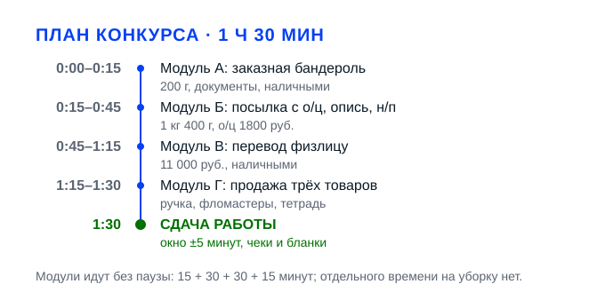
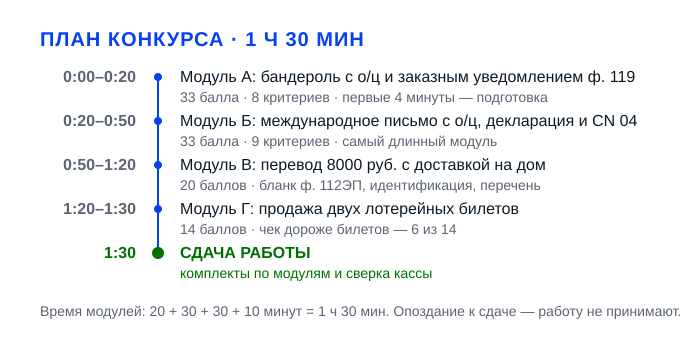
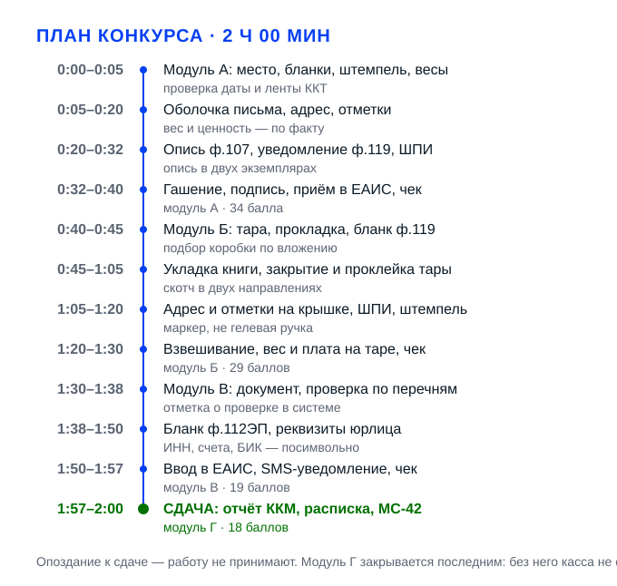

Специалист почтовой связи (Р)
Задания ниже — официальные файлы «Абилимпикс» (источник: abilympics-russia.ru), разложенные по категориям. Решения написаны по тексту задания, регламенту и критериям оценки; в них указано, что именно проверяет эксперт.
Школьник
14–16 лет, базовый уровень заданияВыдержка из официального конкурсного задания: страницы, относящиеся к категории «Школьник» (стр. 4–9 источника).
Пошаговое решение
Задание для школьников состоит из четырёх модулей и идёт ровно 1 час 30 минут: пятнадцать минут на внутреннюю заказную бандероль весом 200 граммов с документами, тридцать минут на внутреннюю посылку весом 1 килограмм 400 граммов с объявленной ценностью, описью вложения и наложенным платежом, тридцать минут на перевод 11 000 рублей за наличный расчёт от физического лица физическому лицу и пятнадцать минут на продажу трёх товаров из справочника. Всё делается в единой автоматизированной системе отделения почтовой связи, и в каждом модуле обязателен кассовый чек. Обратите внимание на две вещи, которые задание меняет на тридцать процентов: адресные данные отправителя, сумму перевода, вес отправления и вид товара могут быть другими, поэтому заучивать цифры бессмысленно — нужно понимать порядок работы. Второе: суммы, которых нет в задании, например наложенный платёж, не выдумываются, а уточняются у клиента. Ниже весь конкурс разобран по шагам, с типичными ошибками и точками, в которые смотрит эксперт.

Задача 1. Принять внутреннюю заказную бандероль (модуль А)Модуль А · 15 минут
Модуль А — самый короткий и самый обидный: на заказную бандероль весом 200 граммов с документами даётся всего пятнадцать минут, и внутри этих минут нужно успеть собрать оболочку, нанести адреса, наклеить штриховой почтовый идентификатор, поставить календарный штемпель, провести приём в единой автоматизированной системе отделения почтовой связи и отдать клиенту кассовый чек. Результат модуля в конкурсном задании сформулирован коротко: «Оформлен приём внутренней заказной бандероли». Значит, оценивают не скорость как таковую, а комплект: оболочка, данные, отметки и чек должны сойтись между собой до последней цифры.
Действие 1.1. Разобрать задание и разложить комплект
Шаг 1.1.1
Берём текст задания и читаем адреса вслух, разбивая каждый на пять частей: фамилия, имя и отчество, улица с домом, населённый пункт с районом, область или край, шестизначный индекс. Отправитель в модуле А — Корчагина Ирина Витальевна, улица Ленина, дом 15, квартира 125, село Ворониха Ребрихинского района Алтайского края, индекс 658533. Получатель — Первова Юлия Андреевна, улица Сибирская, дом 11, квартира 15, село Новокамала Рыбинского района Красноярского края, индекс 663952. Проговариваем каждую строку отдельно и после сверки ставим карандашом точку в задании: так видно, что уже проверено.
Адрес — первое, что смотрят при приёме, потому что ошибка в индексе или в номере дома уводит бандероль в другой регион, а возврат уже не входит в конкурсное время. В задании данные записаны слитно, через запятые, и при быстром чтении «Ребрихинского Алтайский край» легко превращается в «Ребрихинский край». Результат модуля — оформленный приём заказной бандероли, и оболочка с перепутанным адресом его обнуляет.
Читаем адрес в обратном порядке — от индекса к фамилии — и сверяем посимвольно. Проверьте две пары цифр: индекс отправителя 658533 и индекс получателя 663952, они похожи, и их легко поменять местами. Проверьте и квартиры: у отправителя 125, у получателя 15, а район получателя — Рыбинский, а не Ребрихинский.
Самая частая ошибка — механически переписать в поле получателя адрес отправителя: индексы 658533 и 663952 действительно близки, фамилии разные, а глаз в спешке «дорисовывает» знакомое. Вторая — потерять район и оставить только край: приём пройдёт, но сортировка уйдёт не туда, и баллы за корректность данных снимут.
Эксперт подходит к столу в первые минуты модуля и смотрит, сверяется ли участник с текстом задания или пишет по памяти; отдельно фиксируется, совпадают ли данные на оболочке, в системе и в чеке.
Шаг 1.1.2
Определяем вид отправления по признакам из задания и записываем его для себя одной строкой: бандероль внутренняя, категория «заказная», вес 200 граммов, вложение — документы, оплата наличными. Из этого следует, что объявленной ценности нет, описи вложения нет, наложенного платежа нет и уведомления о вручении тоже нет: заказная бандероль регистрируемая, её вручают под расписку, но ценность вложения не объявляется. Дальше в системе выбираем ровно эту комбинацию признаков и не добавляем ничего «на всякий случай».
Лишняя услуга — такая же ошибка, как пропущенная: если в чеке появится объявленная ценность или наложенный платёж, которых в задании нет, изменится тариф и результат модуля перестанет соответствовать формулировке «Оформлен приём внутренней заказной бандероли». Наоборот, забытая регистрация заказного отправления превращает его в простое, и тогда ни ШПИ, ни расписка получателя не работают.
Сверяем свою запись с тремя формулировками задания: «бандероль заказная», «вес — 200 г», «вложение — документы». Если в вашей строке появилось слово «ценность», «опись» или «уведомление», вы ушли в чужой модуль и перечитываете задание заново.
Типичная ошибка — автоматически включить объявленную ценность, потому что на тренировках чаще отрабатывают именно её: в чеке вырастает сумма, а эксперт видит расхождение с заданием. Вторая — оформить бандероль как простое отправление без ШПИ: тогда весь смысл заказного вида теряется.
Эксперт сверяет вид отправления в системе с текстом задания; на категории «Школьники» это первый пункт, который он проверяет на экране, ещё до печати чека.
Шаг 1.1.3
Раскладываем комплект в порядке использования, чтобы ничего не искать в середине работы: слева — упаковка и документы клиента, по центру — клей-карандаш и скотч, справа — штриховой почтовый идентификатор, календарный штемпель и ручка. Штемпель ставим подушечкой вверх и проверяем, что дата в нём читается: иногда оттиск смазан или дата не переведена. Скотч отрываем заранее на две полоски по 8–10 сантиметров и приклеиваем кончиками к краю стола — так их удобно взять одной рукой.
Пятнадцать минут на модуль — это очень мало, и любая пауза на поиск ручки съедает время, которое потом не вернуть. Разложенный комплект экономит две-три минуты, а они на таком модуле решают: недоделанная оболочка или непроверенный чек стоят дороже, чем весь остальной текст.
К моменту старта на столе ровно четыре группы предметов и ни одного лишнего. Штемпель даёт пробный оттиск на черновике, и дата на нём читается. Полоски скотча оторваны, клей открыт, ручка пишет. Пройдите глазами по столу справа налево: если что-то приходится искать, переложите это ближе к руке.
Ошибка — начать клеить оболочку, а потом искать штемпель по всему столу, сдвигая уже готовое отправление. Вторая — работать со штемпелем, у которого не переведена дата: оттиск нечитаемый, и подтвердить, что отправление принято сегодня, нечем.
Эксперт оценивает организацию рабочего места визуально в первые минуты: разложенный комплект читается как понимание процесса, куча на столе — как спешка.
Действие 1.2. Оформить оболочку бандероли
Шаг 1.2.1
Выбираем упаковку из выданного набора под плоское вложение: документы на несколько листов не должны складываться пополам и не должны болтаться. Подходит плотный конверт или пакет из комплекта, при необходимости — обёрточная бумага в два слоя; посылочная гофрокартонная тара для бандероли не годится, она превращает отправление в другой вид и утяжеляет его. Кладём документы на лист и проверяем, что упаковка закрывается с запасом по краям не меньше сантиметра.
Вид упаковки — часть вида отправления: бандероль по определению плоское отправление, и коробка меняет не только внешний вид, но и тарификацию, и порядок обработки. Запас по краям нужен, чтобы клапан закрылся ровно, без натяжения: натянутый край отходит через час, и отправление приходит раскрытым.
Документы лежат свободно, не выглядывают за край, упаковка закрывается без усилия, вес на весах — около 200 граммов. Если вес заметно больше, проверьте, не взяли ли вы лишний слой упаковки. Отдельно убедитесь, что документы не выглядывают из-под клапана: уголок листа, торчащий наружу, виден при вручении.
Ошибка — взять первую попавшуюся коробку «чтобы точно не помялось»: вложение весит 200 граммов, а коробка добавляет объём и вес, и получается посылка вместо бандероли. Вторая — сложить документы пополам, чтобы влезли в маленький конверт: вложение повреждено, и это видно при вручении.
Эксперт осматривает оболочку до оклейки и после, и в этот момент видно, выбран ли правильный вид упаковки: бандероль в посылочной коробке он отметит как ошибку выбора тары, а не как небрежность.
Шаг 1.2.2
Наносим адреса на лицевую сторону оболочки: адрес получателя — в правой нижней части, адрес отправителя — в левом верхнем углу, правый верхний угол оставляем свободным под знак оплаты. Пишем печатными буквами, разборчиво, полными словами: «улица Сибирская», «дом 11», «квартира 15», «село Новокамала», «Рыбинского района», «Красноярский край», индекс 663952 в отведённых ячейках или в рамке. Отправителя записываем так же подробно, с индексом 658533, и обязательно с обратной стороны или в левом верхнем углу — так, чтобы при возврате отправление нашло адресата.
Расположение адресов — не традиция, а условие сортировки: по правой нижней части письма или бандероли работает оператор и машина, и адрес, уехавший в левый угол, читается медленнее. Индекс в ячейках нужен потому, что именно по нему отправление попадает в маршрут, а не по названию села, которое может повторяться в разных районах.
Проверяем тремя движениями: адрес получателя целиком читается без наклона листа, индекс получателя в ячейках совпадает с 663952, адрес отправителя с индексом 658533 на месте и не перекрывает поле получателя. Между строками есть просвет, буквы не слипаются.
Частая ошибка — написать адрес получателя в левом верхнем углу, где обычно пишут отправителя: при сортировке отправление разворачивают и читают не тот адрес. Вторая — сократить «Рыбинского района» до «Рыб. р-на» и потерять однозначность: такие сокращения при приёме не принимаются.
Эксперт читает адрес на оболочке так, как его прочитает сортировщик: сверху вниз, без домысливания. Нечитаемая строка — минус за корректность оформления.
Шаг 1.2.3
Вкладываем документы ровно, не сгибая, и закрываем клапан. Проклеиваем скотчем по швам: полоска ложится вдоль края с заходом на обе стороны примерно по одному сантиметру, уголки дополнительно прижимаем большим пальцем. Место под штриховой идентификатор и поле для оттиска штемпеля оставляем свободными: если заклеить их скотчем, штрихкод бликует и не читается сканером, а оттиск штемпеля ложится на плёнку и смазывается.
Проклейка по швам, а не по всей поверхности — требование практики: бандероль должна вскрываться без повреждения вложения, а полная оклейка скотчем в несколько слоёв затрудняет обработку и увеличивает вес. Свободное поле под идентификатор и штемпель — техническое условие: сканер и штемпель работают только с бумагой.
Шов закрыт ровно, скотч не топорщится, клапан не отходит при легком нажатии. Проведите пальцем по краю: если слышен хруст отходящего клея, прижмите ещё раз. Вложение не прощупывается через бумагу острыми углами.
Ошибка — заклеить скотчем всю лицевую сторону «для надёжности»: тогда под плёнкой оказываются и место под ШПИ, и поле для штемпеля, и отправление приходится переоформлять. Вторая — оставить клапан на клее-карандаше без проклейки: через несколько минут он отходит, и оболочка выглядит вскрытой.
Эксперт проверяет аккуратность оклейки и наличие свободных полей под идентификатор и штемпель: смазанный клей, отпечатки пальцев и полоски скотча поперёк адреса читаются как спешка и снимают балл за оформление оболочки.
Шаг 1.2.4
Осматриваем готовую оболочку целиком: она чистая, без посторонних надписей, зачёркиваний и старых адресов, лицевая сторона не помята. Кладём отправление на весы и смотрим показание: 200 граммов — это вес из задания, и если весы показывают 215–220, значит, упаковка тяжелее, чем нужно, и это нормально, а если 400 — вы взяли лишний слой. Запоминаем фактический вес: его придётся вводить в систему.
Осмотр до системы экономит переоформление: исправлять адрес на уже зарегистрированном отправлении нельзя, придётся аннулировать операцию и начинать заново, а на модуль отведено пятнадцать минут. Фактический вес нужен потому, что тариф считается от него, и расхождение с заданием на 20–30 граммов допустимо, а на 200 — уже ошибка упаковки.
Оболочка чистая, надписей «черновик» и зачёркнутых строк нет, вес на весах записан на черновике рядом с номером модуля. Углы не размокают от клея, клей не выступил на лицевую сторону. Проведите ладонью по лицевой стороне: она должна быть гладкой, без бугров от вложения.
Ошибка — оставить на оболочке старый адрес с тренировки или пометки карандашом: при вручении это вызывает вопросы, а экспертом фиксируется как небрежность. Вторая — не взвесить отправление и ввести в систему вес из задания «на глаз»: расхождение с фактическим весом видно при контрольном взвешивании.
Эксперт может попросить положить отправление на весы рядом с собой: показание должно совпадать с тем, что участник ввёл в систему, а расхождение он трактует как отсутствие контрольного взвешивания.
Действие 1.3. Выполнить приём в системе и получить чек
Шаг 1.3.1
Наклеиваем штриховой почтовый идентификатор на лицевую сторону, в свободное поле, ровно, без наклона, не на сгиб и не на угол. Штрихкод должен быть целым: не подрезанным, не перекрытым скотчем, не заходящим на адрес. Прижимаем наклейку по всей площади, начиная с середины и разглаживая к краям, чтобы не осталось воздушных пузырей. После наклейки сразу проверяем сканирование: подносим сканер и смотрим, что номер считался с первого раза.
Штриховой идентификатор — это «паспорт» регистрируемого отправления: по нему строятся все записи о перемещении, и если он не читается, отправление выпадает из системы контроля. Пузырь или наклон ломают считывание не всегда, а через раз, и именно такой «через раз» хуже всего: на приёмке всё прошло, а на сортировке отправление потерялось.
Сканер считал номер с первого поднесения, штрихкод ровный, все полосы целые, наклейка не заходит на адресные строки и не касается края конверта. Номер на наклейке совпадает с номером, который показала система при приёме.
Ошибка — наклеить идентификатор на угол или на клапан: при оклейке скотчем он частично перекрывается и перестаёт читаться. Вторая — наклеить идентификатор от другого отправления: номера не совпадут с системой, и отправление будет считаться непринятым.
Эксперт проверяет сканирование идентификатора своим сканером и сверяет номер с чеком, и делает это сразу после модуля: если номер не читается, отправление считается непринятым независимо от остальных документов.
Шаг 1.3.2
Ставим календарный штемпель на свободное поле лицевой стороны так, чтобы оттиск был полным и не перекрывал ни адрес, ни штрихкод, ни место под знак оплаты. Штемпель держим вертикально, прижимаем всей плоскостью и не «прокатываем»: от смазанного оттиска остаётся половина даты. Если в комплекте выданы почтовые марки, в этом модуле они не наклеиваются, потому что оплата по заданию идёт наличными через систему, и знак оплаты формируется в ней же; если эксперт скажет иначе, следуем его указанию, но вперёд его не спрашиваем — время модуля идёт.
Оттиск штемпеля подтверждает, что отправление принято именно сегодня и именно в этом отделении: без него нельзя доказать дату приёма, а значит, и контрольный срок пересылки. Смазанный оттиск формально есть, но проверить по нему нечего, поэтому эксперт смотрит на читаемость так же строго, как на наличие.
На оттиске читаются дата, месяц и год, а также название отделения. Оттиск полный, круглый, не перекрывает штрихкод. Проверьте, что дата соответствует дню конкурса: штемпель с прошлой датой придётся переставлять, а исправления на оболочке не допускаются.
Ошибка — поставить штемпель поверх штрихкода: полосы забиваются краской, и сканер перестаёт читать номер. Вторая — прижать штемпель на секунду и убрать, не дожав: оттиск бледный, дата не читается, и отправление приходится оформлять заново.
Эксперт смотрит на оттиск в момент приёма и потом при общей проверке: важны полнота круга, читаемость даты и отсутствие краски на штрихкоде, а сила нажатия и ровность линии его не интересуют.
Шаг 1.3.3
Открываем в единой автоматизированной системе операцию приёма внутренней заказной бандероли и заполняем поля по порядку: сначала отправитель — фамилия, имя, отчество, адрес и индекс 658533, затем получатель — Первова Юлия Андреевна, улица Сибирская, дом 11, квартира 15, село Новокамала, Рыбинского района, Красноярский край, индекс 663952. Дальше вид отправления — бандероль заказная, вес — фактический с весов, способ оплаты — наличными. Поля с объявленной ценностью, описью и наложенным платежом оставляем пустыми: в этом модуле их нет.
Система — это и есть рабочий инструмент почтового оператора, и все баллы за приём начисляются по тому, что в ней введено. Ошибка в поле адреса или в весе меняет тариф, а лишний признак услуги превращает заказную бандероль в ценную, что не соответствует заданию. Заполнение по порядку полей ещё и защищает от пропусков: система сама не даст сохранить операцию, но лучше дойти до конца без красных подсказок.
На экране перед подтверждением проверяем четыре значения: вид отправления «заказная бандероль», вес около 200 граммов, индекс получателя 663952 и способ оплаты «наличными». Сумма тарифа рассчитана системой, вручную её не правим.
Ошибка — ввести адрес получателя в поле отправителя: система примет, чек напечатается, но отправление будет оформлено «от получателя к отправителю», и это видно при сверке. Вторая — ввести вес из задания, не взвесив: расхождение с весами выявится при контрольной проверке.
Эксперт смотрит на экран в момент ввода и потом сверяет данные из системы с оболочкой: вид отправления, вес и индекс получателя должны совпадать во всех трёх источниках, а лишний признак услуги он видит по сумме.
Шаг 1.3.4
Подтверждаем операцию, принимаем наличные и распечатываем кассовый чек. Чек сразу читаем целиком, а не складываем в стопку: вид отправления, вес, адрес получателя, сумма и дата должны совпасть с тем, что вы вводили. Номер отправления из чека сверяем с наклейкой на оболочке. Чек отдаём клиенту и второй экземпляр, если он печатается, оставляем в папке работы для эксперта.
Кассовый чек — единственное документальное подтверждение того, что приём состоялся и оплата прошла: именно его требует формулировка модуля. Если чек не напечатан или напечатан с чужими данными, считается, что операция не завершена, и баллы за модуль не начисляются, даже когда оболочка оформлена идеально.
Чек напечатан полностью, без обрыва строк, сумма совпадает с той, что показала система, номер отправления на чеке и на наклейке одинаковый. Дата на чеке — день конкурса. Клиент чек получил. Прочитайте верхнюю и нижнюю строки отдельно: обрыв чаще всего случается именно там.
Ошибка — распечатать чек и не прочитать его: обрыв строки или нулевая сумма замечаются только на сдаче, когда перепечатать уже нельзя. Вторая — забыть отдать чек клиенту: по заданию клиент уходит с чеком, и его отсутствие фиксируется.
Эксперт проверяет чек последним: смотрит на совпадение номера с оболочкой, полноту печати и дату. Это финальная точка модуля А, и после неё исправить что-либо уже нельзя.
Задача 2. Принять посылку с объявленной ценностью, описью и наложенным платежом (модуль Б)Модуль Б · 30 минут
Модуль Б — самый длинный и самый насыщенный: тридцать минут на посылку весом один килограмм четыреста граммов, в которой две книги по девятьсот рублей, объявленная ценность и наложенный платёж, а сверх того — опись вложения. Здесь одновременно работают четыре документа: оболочка с адресным ярлыком, опись вложения в двух экземплярах, запись в системе и кассовый чек. Ошибка в любом из них ломает соответствие, а соответствие — это и есть критерий: «Оформлен приём внутренней посылки с объявленной ценностью с описью вложения и наложенным платежом».
Действие 2.1. Принять заказ и уточнить параметры у клиента
Шаг 2.1.1
Читаем адреса из задания и записываем их на черновике в развёрнутом виде. Отправитель — Сычев Иван Александрович, улица Советская, дом 55, город Урожайное Советского района Алтайского края, индекс 659545. Получатель — Загитова Евгения Александровна, улица Юбилейная, дом 55, квартира 132, город Челябинск, Челябинская область, индекс 454080. Обратите внимание: у отправителя в адресе нет квартиры, а у получателя есть, и в задании номер дома у обоих одинаковый — 55, что при быстром чтении подталкивает к ошибке.
Посылка — отправление с объявленной ценностью, и адрес здесь проверяют дважды: на оболочке и в системе. Перепутанный индекс отправителя означает, что при возврате посылка уедет не туда, а возврат на чемпионате моделируют чаще, чем кажется. Номер дома 55 у обеих сторон — ловушка внимания: механическое копирование адреса отправителя в поле получателя даёт правдоподобную на вид, но неверную запись.
Сверяем по черновику: индекс отправителя 659545, индекс получателя 454080, у получателя есть квартира 132, у отправителя квартиры нет, город получателя — Челябинск, а не Урожайное. Проверьте буквы в фамилиях: Сычев и Загитова пишутся без сокращений.
Ошибка — перенести «улица Советская, дом 55» в адрес получателя, потому что номер дома совпал: посылка уйдёт не тому адресату, и весь модуль придётся переоформлять. Вторая — потерять квартирный номер 132 и оставить только дом: вручение в многоквартирном доме станет невозможным.
Эксперт сверяет адреса на оболочке, в описи, в ярлыке и в чеке, и делает это в конце модуля: все четыре источника должны давать одну и ту же запись, а расхождение хотя бы в одном он фиксирует как ошибку приёма.
Шаг 2.1.2
Разбираем вложение по цифрам задания: две книги, цена одной книги — 900 рублей, значит объявленная ценность вложения 1800 рублей, а общий вес посылки — 1 килограмм 400 граммов. Объявленную ценность записываем цифрами и прописью, как требует бланк, и не путаем её с ценой пересылки: это сумма, на которую оценивается вложение, и от неё считается отдельный сбор. Вес проверяем на весах после упаковки, потому что 1400 граммов в задании — это вес с тарой или без неё, и расхождение надо увидеть до ввода в систему.
Объявленная ценность — центральный параметр модуля: от неё зависят и сбор за ценность, и сумма возмещения при утрате, и то, как посылку обрабатывают. Считать её «на глаз» нельзя, а взять стоимость одной книги вместо двух — самая распространённая арифметическая ошибка, которая выглядит безобидно, но меняет тариф и обесценивает опись.
В черновике стоят три числа: 2 книги, 900 рублей за книгу, 1800 рублей объявленной ценности, и отдельно — вес 1,400 кг. Пересчитайте вслух: девятьсот плюс девятьсот. Если получилось 900, вы забыли вторую книгу.
Ошибка — объявить ценность по цене одной книги: сумма сбора и запись в описи разойдутся с заданием. Вторая — объявить ценность «по весу» или по стоимости пересылки, что не имеет отношения к делу и сразу видно эксперту.
Эксперт пересчитывает объявленную ценность по заданию и сверяет её с описью, ярлыком и чеком: 1800 рублей должны стоять везде, и цифра 900 в любом из документов сразу говорит о том, что посчитана одна книга вместо двух.
Шаг 2.1.3
Уточняем у клиента сумму наложенного платежа — в задании она не указана, есть только требование оформить посылку с наложенным платежом. Спрашиваем прямо: «Какую сумму вы хотите получить с получателя?» — и записываем ответ на черновике рядом с объявленной ценностью. Объясняем клиенту разницу своими словами: объявленная ценность — это оценка вложения для возмещения, а наложенный платёж — сумма, которую получатель заплатит при вручении, и она может быть больше или меньше оценки. Если клиент затрудняется, предлагаем ориентир — стоимость вложения, 1800 рублей, но решение остаётся за ним.
Наложенный платёж — это отдельная услуга с отдельным сбором, и без согласованной суммы операцию в системе не завершить корректно. В задании суммы нет намеренно: проверяется умение уточнять параметры у клиента, а не угадывать. Молча поставить в поле объявленную ценность — значит придумать данные за клиента, а это ошибка приёма.
Сумма наложенного платежа записана на черновике, проговорена клиенту и им подтверждена. Она фигурирует в ярлыке, в описи и в системе одинаково, до рубля. Способ оплаты — наличными. Проверьте, что сумма не совпала случайно с объявленной ценностью: если клиент назвал свою, цифры должны различаться.
Ошибка — оставить поле наложенного платежа пустым или заполнить его нулём: услуга не оформлена, и модуль не соответствует заданию. Вторая — автоматически подставить объявленную ценность, не спросив клиента, и потом не суметь объяснить, откуда взялась сумма.
Эксперт в роли клиента может сам назвать сумму наложенного платежа, если участник спросит. Если вопрос не задан, он фиксирует это как непроработанный параметр заказа, даже когда в поле случайно оказалась правдоподобная цифра.
Действие 2.2. Оформить опись вложения и адресный ярлык
Шаг 2.2.1
Заполняем опись вложения в двух экземплярах. В таблице построчно пишем: «книга — 2 шт. — 900 руб.» и в графе объявленной ценности выводим итог 1800 рублей цифрами и прописью: «одна тысяча восемьсот рублей 00 копеек». Ниже указываем отправителя — Сычева Ивана Александровича, ставим подпись на каждом экземпляре. Пишем шариковой ручкой, печатными буквами, без подчисток: исправленное значение в описи не принимается, бланк переписывается заново.
Опись вложения — документ, который защищает и отправителя, и почту: при вручении вскрытие идёт в присутствии работника, и содержимое сверяется построчно. Именно опись превращает посылку в отправление с проверяемым вложением, и без неё результат модуля не достигается, даже если объявленная ценность и наложенный платёж оформлены верно.
В обоих экземплярах стоят одинаковые записи: две книги, 900 рублей за штуку, итог 1800 рублей цифрами и прописью, подпись отправителя. Итог в цифрах и в прописи совпадает. Пометок и зачёркиваний нет. Положите листы рядом и сравните построчно — расхождение между экземплярами встречается чаще, чем ошибка внутри одного.
Ошибка — заполнить опись «книга — 1 шт.»: вложение описано неверно, и при вручении получатель столкнётся с недостачей, которую сама же почта и зафиксирует. Вторая — указать цену 900 рублей как общую сумму за обе книги: цифра в прописи и в графе итога разойдётся с заданием.
Эксперт читает опись построчно и сверяет с заданием количество, цену за единицу и итог, а отдельно смотрит, подписан ли каждый экземпляр: неподписанная опись считается незаполненной, и вложение остаётся неописанным.
Шаг 2.2.2
Заполняем адресный ярлык формы 7-п, который выдаётся в комплекте для посылок: вносим адрес получателя с индексом 454080, адрес отправителя с индексом 659545, вес 1,400 кг, объявленную ценность 1800 рублей, сумму наложенного платежа и вид отправления — посылка. Пишем тем же печатным почерком, что и на описи, чтобы записи читались одинаково. Ярлык заполняем до наклейки, на ровной поверхности, и только потом приклеиваем на оболочку.
Ярлык — то, что видит сортировка и почтальон: если данные расходятся с описью или с системой, отправление начинает «жить двумя жизнями», и на вручении возникает спор о сумме наложенного платежа. Заполнение на ровной поверхности — мелочь, которая экономит нервы: на уже наклеенном ярлыке писать неудобно, буквы съезжают, и приходится переклеивать.
На ярлыке читаются оба индекса, вес 1,400 кг, объявленная ценность 1800 рублей и сумма наложенного платежа, совпадающая с согласованной. Пометки «посылка» и «с описью» не забыты. Ярлык приклеен ровно, без перекоса и пузырей.
Ошибка — заполнить ярлык после наклейки и размазать чернила: часть цифр нечитаема, ярлык приходится менять, а старый отклеивать, рискуя повредить оболочку. Вторая — не указать наложенный платёж на ярлыке, хотя в системе он есть: получатель узнает о сумме только на вручении.
Эксперт сверяет ярлык с описью и с чеком: три документа должны читаться как один, и любое расхождение в индексе, весе или сумме наложенного платежа он трактует как ошибку оформления сопроводительных документов.
Шаг 2.2.3
Раскладываем перед собой три источника — оболочку с наклеенным ярлыком, оба экземпляра описи и черновик с параметрами — и сверяем их между собой по строкам: фамилия получателя, индекс, вес, объявленная ценность, наложенный платёж. Удобно вести пальцем по строкам одновременно на двух документах: так расхождение видно сразу. Если что-то не совпало, исправляем до упаковки, пока вложение ещё не запечатано.
Сверка до упаковки — единственный момент, когда исправление стоит одной минуты. После оклейки и ввода в систему любое расхождение означает аннулирование операции, новую упаковку и потерю пяти-семи минут из тридцати, а на модуле с четырьмя документами это половина запаса времени.
Все пять параметров совпадают во всех трёх источниках. Особое внимание — на сумму наложенного платежа: она не должна случайно совпасть с объявленной ценностью, если клиент назвал другую. Индексы записаны одинаково, без перестановки цифр.
Ошибка — сверять только адрес, забывая про вес и суммы: именно суммы расходятся чаще всего, потому что вводятся в трёх местах вручную. Вторая — исправлять опись после упаковки: вложение уже запечатано, и переписать бланк, не вскрывая посылку, невозможно.
Эксперт делает такую же сверку после сдачи модуля и фиксирует любое расхождение как ошибку оформления документов: на его столе лежат все три источника, и несовпадение он находит быстрее, чем участник.
Действие 2.3. Упаковать посылку и нанести отметки
Шаг 2.3.1
Подбираем посылочную гофрокартонную тару под вложение: две книги должны лежать в коробке плотно, без свободного хода, но и без нажима на корешки. Если коробка больше, чем нужно, свободное пространство заполняем бумагой или пузырчатой плёнкой — не оставляем пустоту, потому что при пересылке вложение смещается и углы книг мнутся. Дно коробки проклеиваем скотчем по шву снаружи и изнутри, если конструкция позволяет: именно дно чаще всего расходится под весом.
Тара — часть ответственности отправителя, и повреждённое вложение при объявленной ценности превращается в претензию. Плотная посадка без пустот — простейший способ сохранить книги: свободное пространство в коробке работает как молоток, и книги бьются друг о друга. Проклейка дна снаружи и изнутри удваивает прочность шва без лишнего веса.
Книги не двигаются при легком встряхивании закрытой коробки, дно не прогибается под нажимом пальцем. Вес с тарой проверяем на весах: он должен быть близок к 1,4 кг, а не к 2 кг, иначе коробка слишком тяжёлая.
Ошибка — взять коробку «на вырост», чтобы удобнее укладывать: вложение бьётся о стенки, и при вручении фиксируется повреждение. Вторая — не проклеить дно: под весом книг шов расходится в пути, и посылка приходит пустой или перевязанной.
Эксперт осматривает тару до оклейки и видит, заполнены ли пустоты и проклеено ли дно, и отмечает это как качество упаковки: коробка, в которой книги ходят ходуном, оценивается ниже, чем плотно подогнанная.
Шаг 2.3.2
Укладываем вложение и кладём опись вложения поверх книг, лицом вверх, так, чтобы при вскрытии её было видно первой. Второй экземпляр описи остаётся у отправителя и в посылку не попадает. Проверяем, что опись не помялась и не подсунута под книги: работник при вручении должен достать её, не разбирая вложение. Если между книгами и стенкой остался зазор, поджимаем его бумагой, а не описью, чтобы лист не сдвинулся при пересылке.
Порядок вложения — не формальность: при вручении посылки с описью её вскрывают и сверяют содержимое, и опись, лежащая сверху, экономит время и снижает риск повредить книги при разборе. Второй экземпляр у отправителя — доказательство того, что было отправлено, и его наличие в посылке означало бы, что у отправителя документа не осталось.
В коробке две книги и один экземпляр описи сверху. Второй экземпляр лежит у вас на столе, подписанный. Опись не смята, текст читается. Прежде чем закрывать крышку, загляните внутрь под углом: лист описи должен быть виден сразу, а не после того, как книги будут вынуты.
Ошибка — положить в посылку оба экземпляра описи: у отправителя не остаётся документа, а получатель видит два одинаковых бланка и путается. Вторая — засунуть опись между книгами: при вскрытии она не видна, и содержимое сверяют «на глаз».
Эксперт может попросить показать второй экземпляр описи: он должен лежать на столе, быть подписанным и содержать те же данные, что и экземпляр, уложенный в посылку, — иначе вложение считается неописанным.
Шаг 2.3.3
Закрываем коробку и проклеиваем все швы скотчем шириной 48 миллиметров: по верхнему и нижнему шву, по двум боковым, с заходом на соседнюю сторону не меньше трёх сантиметров. Начинаем с нижнего шва: коробку ставим на бок, чтобы скотч ложился под собственным весом ровно и без натяжения, и только потом переходим к верхнему и боковым. Скотч разглаживаем ладонью от середины к краям, а углы дополнительно закрываем короткими полосками.
Оклейка по всем швам с заходом — стандарт упаковки посылок: щель в три сантиметра почти незаметна глазом, но достаточна, чтобы коробка разошлась в пути. Пузыри и складки цепляются за транспортёр и отрываются вместе с частью картона, после чего шов остаётся открытым.
Скотч лежит ровно, без пузырей, все швы закрыты, углы усилены. При нажатии на крышку коробка не «дышит», швы не расходятся. На оболочке нет следов клея и грязи. Проведите ногтем по шву с заходом: если полоска цепляется и отходит, прижмите её ещё раз по всей длине.
Ошибка — проклеить только верхнюю крышку, потому что снизу «и так держится»: дно расходится под весом книг. Вторая — намотать скотч в несколько слоёв по всей поверхности: посылка выглядит неаккуратно, вес растёт, а вскрыть её при вручении сложно.
Эксперт смотрит на оклейку как на индикатор аккуратности: ровные швы с заходом на соседнюю сторону читаются как профессиональная работа, а намотанный клубком скотч — как спешка и непонимание, зачем он нужен.
Шаг 2.3.4
Наклеиваем на верхнюю сторону коробки адресный ярлык, а рядом, в свободное поле, — штриховой почтовый идентификатор. Ярлык клеим первым, идентификатор вторым: если сначала наклеить штрихкод, ярлык придётся подгонять под него, и он ляжет с перекосом. Оба элемента не должны перекрывать друг друга, заходить на швы и на углы. Штемпель ставим последним, когда видно свободное поле, и сразу проверяем сканирование идентификатора.
На посылке, в отличие от бандероли, ярлык и идентификатор конкурируют за место: если идентификатор наклеен на шов, при транспортировке он отрывается вместе со скотчем, и отправление теряет номер. Штемпель поверх штрихкода забивает полосы краской — самая обидная ошибка, потому что внешне всё на месте.
Сканер читает номер с первого раза, ярлык читается целиком, оттиск штемпеля полный и не перекрывает ни штрихкод, ни адрес. Идентификатор не на шве и не на углу. Поднесите сканер дважды с разного расстояния: устойчивое чтение важнее однократного попадания.
Ошибка — наклеить идентификатор на боковую сторону, которая при штабелировании закрывается соседними посылками: сканирование становится нестабильным. Вторая — поставить штемпель на ярлык, поверх индекса получателя: цифры забиваются краской.
Эксперт проверяет расположение отметок и читаемость сканером: ярлык и идентификатор не должны перекрывать друг друга, а оттиск штемпеля поверх штрихкода он считает ошибкой оформления оболочки, а не мелочью.
Действие 2.4. Провести приём посылки в системе
Шаг 2.4.1
В единой автоматизированной системе выбираем операцию приёма внутренней посылки и последовательно вводим: отправителя — Сычев Иван Александрович, улица Советская, дом 55, город Урожайное Советского района Алтайского края, индекс 659545; получателя — Загитова Евгения Александровна, улица Юбилейная, дом 55, квартира 132, Челябинск, индекс 454080. Затем отмечаем признаки услуги: объявленная ценность 1800 рублей, опись вложения — есть, наложенный платёж — согласованная сумма, оплата наличными. Каждый признак включается отдельно, и после каждого стоит проверить, что он появился в списке услуг.
Именно набор признаков отличает этот модуль от предыдущего: без объявленной ценности, описи и наложенного платежа посылка станет обычной, и результат модуля не будет достигнут. Система считает сборы по каждому признаку, поэтому пропущенная галочка — это не только неверный чек, но и неверная сумма к оплате, которую клиент уже видит на экране.
На экране перед подтверждением видно четыре признака: посылка, объявленная ценность 1800, опись вложения, наложенный платёж с нужной суммой. Индексы 659545 и 454080 стоят в своих полях, вес — 1,400 кг.
Ошибка — включить объявленную ценность, но забыть опись вложения: система пропустит операцию, а документ, который обязан сопровождать отправление, не будет учтён. Вторая — ввести наложенный платёж как обычную услугу без суммы: чек напечатается, но получатель не увидит суммы к оплате.
Эксперт просматривает экран до подтверждения операции и сверяет набор услуг с текстом задания: ему важно увидеть все четыре признака сразу, потому что пропущенный он обнаружит только по чеку, когда исправлять будет поздно.
Шаг 2.4.2
Кладём упакованную посылку на весы и вводим фактический вес, а не тот, что записан в задании: если весы показывают 1,45 кг, вводим 1,45, потому что тариф считается по факту. Затем читаем суммы, которые рассчитала система: плата за пересылку по весу и расстоянию, сбор за объявленную ценность, сбор за наложенный платёж. Проговариваем итог клиенту и принимаем наличные, проверяя купюры на просвет и на ощупь.
Расхождение между заявленным и фактическим весом — обычное дело, и вводить «красивую» цифру из задания означает сознательно занизить тариф. Сборы система считает сама, и участнику важно убедиться, что в чеке присутствуют все три составляющие: если одной нет, значит, признак услуги не включён, и возвращаться к этому придётся после печати чека.
Вес на экране совпадает с показанием весов до второго знака. В сумме к оплате читаются три составляющие: пересылка, сбор за объявленную ценность, сбор за наложенный платёж. Принятая сумма равна сумме к оплате.
Ошибка — ввести вес 1,4 ровно, не взвесив, когда фактически 1,45: расхождение выявится при контрольном взвешивании, а недоплата по тарифу — это уже финансовая ошибка. Вторая — принять наличные, не проверив, что сумма к оплате включает сбор за наложенный платёж.
Эксперт может подойти в момент взвешивания и сравнить показание весов с экраном: это одна из точек контроля модуля, и расхождение он трактует как ввод данных «по бумажке», а не по факту.
Шаг 2.4.3
Подтверждаем операцию и печатаем кассовый чек. Читаем его полностью: вид отправления, вес, объявленная ценность 1800 рублей, сумма наложенного платежа, адрес получателя, номер отправления. Номер с чека сверяем с наклейкой на коробке. Чек отдаём клиенту и объясняем по цифрам из чека, что получатель заплатит при вручении и на какую сумму отправитель может рассчитывать.
Чек закрывает модуль: по нему эксперт видит, всё ли было оформлено и правильно ли посчитаны сборы. Объяснение клиенту по цифрам чека — это ещё и проверка собственного понимания: если участник не может сказать, из чего сложилась сумма, значит, он не контролировал услуги, а просто нажимал кнопки.
Чек напечатан целиком, все четыре признака услуги в нём отражены, номер совпадает с оболочкой, дата — день конкурса. Клиент получил чек и может повторить, какую сумму заплатит получатель. Отдельно найдите в чеке строку наложенного платежа: если её нет, услуга не оформлена.
Ошибка — не заметить, что в чеке нет строки наложенного платежа: тогда услуга фактически не оформлена, и модуль придётся переделывать. Вторая — отдать чек, не объяснив суммы: клиент уходит с вопросами, а эксперт фиксирует слабую коммуникацию.
Эксперт проверяет чек и задаёт участнику один-два вопроса о суммах: ответ по чеку считается признаком уверенной работы, а ответ «так система посчитала» показывает, что участник не контролировал набор услуг.
Задача 3. Принять перевод за наличный расчёт от физического лица для физического лица (модуль В)Модуль В · 30 минут
Модуль В — денежный перевод на одиннадцать тысяч рублей от физического лица физическому лицу с оплатой наличными. Здесь нет упаковки и адресных ярлыков, зато всё держится на цифрах и буквах: сумма прописью, паспортные данные отправителя, индекс получателя 628689 и адрес, который легко перепутать. Тридцать минут кажутся большим запасом, но именно на переводах участники теряют время на переписывание бланка из-за одной исправленной цифры. Результат модуля в задании сформулирован как «Оформлен приём перевода в отделении почтовой связи за наличный расчёт от физического лица для физического лица».
Действие 3.1. Заполнить бланк перевода формы 112ЭП
Шаг 3.1.1
Берём пустой бланк перевода формы 112ЭП и начинаем с отправителя. В задании сказано «Клиент (ФИО — Ваши)», значит в этих полях участник пишет собственные фамилию, имя и отчество, а адрес берёт из задания: улица Красноармейская, дом 18, квартира 3, город Таганрог, Ростовская область, индекс 347904. Паспортные данные отправителя вписываем в отведённые графы полностью: серия и номер, кем и когда выдан, — печатными буквами, без сокращений. Подпись ставим в конце, когда бланк заполнен целиком, а не сразу.
Перевод — это операция с идентификацией: если в бланке нет паспортных данных или они записаны неразборчиво, приём перевода формально невозможен, потому что отправитель не установлен. Адрес отправителя нужен для того, чтобы перевод можно было вернуть, если получатель его не получит. Подпись в конце — потому что после неё бланк считается заполненным, и любая правка выглядит как исправление документа.
В бланке заполнены ФИО, адрес с индексом 347904 и все паспортные графы. Проверьте индекс по цифрам: 347904, а не 347940. Квартира 3 указана, дом 18 указан, город Таганрог и Ростовская область на месте.
Ошибка — оставить паспортные данные пустыми, решив, что для учебного перевода они не нужны: без них операция неполная. Вторая — переставить цифры в индексе 347904 и получить 347940, что соответствует другому отделению.
Эксперт читает бланк с самого начала и проверяет полноту граф отправителя: пустая графа паспортных данных или сокращённый адрес — минус за оформление сопроводительных документов, даже если перевод оформлен в системе верно.
Шаг 3.1.2
Переходим к получателю и переносим данные из задания без изменений: Крапивин Олег Андреевич, улица Липового, дом 46, квартира 64, город Мегион, Ханты-Мансийский автономный округ, индекс 628689. Обратите внимание на название улицы: в задании оно стоит в родительном падеже — «улица Липового», и переписывать его как «Липовая» нельзя, потому что это уже другой адрес. Название округа пишем полностью, без сокращения до «ХМАО»: сокращения в адресных графах не допускаются.
Адрес получателя — единственное, по чему перевод найдёт адресата, и в переводе нет ни оболочки, ни ярлыка, которые можно перепроверить: всё держится на одной записи в бланке и одной записи в системе. Родительный падеж в названии улицы — типичная точка ошибки, потому что рука автоматически ставит именительный. Полное название округа нужно для однозначной идентификации: сокращение может быть прочитано по-разному.
Сверяем по буквам: Крапивин, Олег, Андреевич, Липового, 46, 64, Мегион, Ханты-Мансийский автономный округ, 628689. Все семь элементов присутствуют, ни один не сокращён. Дефис в «Ханты-Мансийский» стоит на месте.
Ошибка — «исправить» улицу Липового на Липовая, посчитав, что в задании опечатка: адрес перестаёт соответствовать документу, по которому получают перевод. Вторая — сократить округ и потерять однозначность адреса.
Эксперт сверяет адрес получателя в бланке с текстом задания посимвольно: на переводах это самая частая точка расхождения, потому что адрес вводится дважды — рукой и в систему, и второй раз обычно по памяти.
Шаг 3.1.3
Вписываем сумму перевода: 11 000 рублей цифрами в отведённой графе и прописью в строке ниже — «одиннадцать тысяч рублей 00 копеек». Пропись начинаем с заглавной буквы, слово «рублей» ставим в правильном падеже, копейки указываем обязательно, даже если их нет. Свободное место после прописи прочёркиваем, чтобы никто не мог дописать цифру. Если ошиблись в прописи, бланк переписываем целиком: зачёркнутая сумма в денежном документе не принимается.
Сумма прописью — защита от дописки: цифру 11 000 легко превратить в 111 000, а слово «одиннадцать» так не изменить. Именно поэтому в денежных документах пропись обязательна и именно поэтому прочерк после неё считается частью правильного заполнения. Копейки нужны для однозначности: «11 000 рублей» и «11 000 рублей 00 копеек» — формально разные записи, и вторая соответствует требованиям.
Цифры и пропись совпадают: 11 000 и «одиннадцать тысяч рублей 00 копеек». Свободное поле прочёркнуто. Ни одной зачёркнутой или исправленной цифры в бланке нет. Прочитайте пропись вслух и сверьте с цифрами: «одиннадцать» и «одиннадцать тысяч» на глаз выглядят одинаково.
Ошибка — написать «одиннадцать тысяч» без «рублей» и без копеек: запись неполная, и бланк приходится переписывать. Вторая — исправить сумму, зачеркнув цифру и написав рядом: такой бланк недействителен, и время модуля уходит на переписывание.
Эксперт сверяет сумму в цифрах, в прописи и в чеке: три записи должны совпадать до копейки, а прочерк после прописи он считает обязательным элементом бланка, а не украшением.
Действие 3.2. Проверить данные до ввода в систему
Шаг 3.2.1
Кладём бланк рядом с текстом задания и проверяем его в обратном порядке: сначала сумма, потом адрес получателя, потом адрес отправителя, и в конце фамилии. Такой порядок нужен потому, что первые строки читаются «по привычке» и ошибки в них глаз пропускает, а последние — свежим вниманием. Отдельно проговариваем вслух индекс получателя 628689 и индекс отправителя 347904: цифры, произнесённые вслух, замечаются быстрее.
Проверка до ввода экономит целую операцию: если ошибка найдётся уже в системе, придётся аннулировать перевод и оформлять новый, а это пять-семь минут из тридцати. Кроме того, при аннулировании остаётся след в журнале операций, и эксперт видит, что участник не проверил документ перед вводом. Обратный порядок чтения — приём, который используют корректоры именно потому, что он ломает автоматизм.
Все четыре блока совпадают с заданием, индексы произнесены и сверены по цифрам. В бланке нет исправлений, подпись стоит. Если нашли расхождение — исправляйте бланк сейчас, пока он не введён в систему.
Ошибка — проверять бланк «по диагонали», начиная с того места, где только что писали: именно там внимание уже притупилось. Вторая — найти ошибку и решить, что «в системе поправлю»: перевод оформляется по бланку, и расхождение между ними фиксируется.
Эксперт вправе взять бланк и сравнить его с заданием раньше, чем участник начнёт ввод: это самостоятельная точка оценки, и найденная им ошибка стоит дороже, чем та же ошибка, исправленная участником до ввода.
Шаг 3.2.2
Определяем параметры услуги до ввода: перевод внутренний, от физического лица физическому лицу, оплата наличными, выплата в отделении почтовой связи по месту нахождения получателя. Доставку на дом в этом модуле не подключаем — она есть в задании для студентов, а в категории «Школьники» её нет, и лишний признак изменит тариф. Уточняем у клиента, нужен ли ему адресный перевод или перевод с выплатой по паспорту, и фиксируем ответ на черновике.
Каждый дополнительный признак — это отдельный сбор и отдельная строка в чеке, поэтому «на всякий случай» здесь не работает: подключённая доставка на дом увеличит сумму к оплате и разойдётся с заданием. Уточнение у клиента — часть работы оператора: перевод без доставки и перевод с доставкой различаются и по цене, и по порядку выплаты, и клиент должен понимать, что выбирает.
В черновике записано: внутренний перевод, физлицо — физлицо, наличными, выплата в отделении, без доставки на дом. Сумма 11 000 рублей. Ответ клиента зафиксирован. Сверьте эту запись с описанием модуля: в нём нет ни доставки на дом, ни SMS-уведомления — они появляются в других категориях.
Ошибка — механически включить доставку на дом, потому что она была в предыдущем задании на тренировке: сумма к оплате вырастет, а модуль перестанет соответствовать своему описанию. Вторая — не спросить клиента и выбрать способ выплаты наугад.
Эксперт сверяет набор услуг в системе с описанием модуля: лишняя услуга видна сразу по сумме к оплате, а её отсутствие в задании он проверяет по чеку, где каждая услуга идёт отдельной строкой.
Действие 3.3. Оформить перевод в системе и выдать чек
Шаг 3.3.1
Открываем операцию приёма перевода и вводим данные в том же порядке, что и в бланке: отправитель — свои ФИО, адрес с индексом 347904, паспортные данные; получатель — Крапивин Олег Андреевич, улица Липового, дом 46, квартира 64, Мегион, Ханты-Мансийский автономный округ, 628689; сумма — 11 000 рублей. После каждого блока сверяем экран с бланком, а не с памятью: бланк лежит рядом, и это единственный надёжный источник.
Система — это то, по чему перевод реально уйдёт, и ввод «по памяти» здесь опаснее, чем где-либо: в переводе нет оболочки, которую можно осмотреть, и ошибка в одной букве фамилии означает, что деньги не выдадут. Сверка с бланком после каждого блока ловит ошибку в момент, когда её ещё дешево исправить, — до подтверждения операции.
На экране ФИО получателя совпадает с бланком по буквам, индекс 628689 стоит в поле получателя, сумма 11 000. Данные отправителя совпадают с бланком, включая паспортные. Прочитайте фамилию получателя вслух и сравните с бланком: на глаз похожие буквы неразличимы, а ошибка в одной стоит перевода.
Ошибка — вводить адрес получателя по памяти после того, как бланк заполнен: «Липового» превращается в «Липовая», и получатель не сможет получить перевод. Вторая — перепутать поля отправителя и получателя, что даёт перевод «от получателя к отправителю».
Эксперт смотрит на экран до подтверждения и сверяет фамилию получателя с заданием: это ключевая точка модуля, потому что ошибка в одной букве означает, что деньги не выдадут, а исправлять придётся аннулированием.
Шаг 3.3.2
Смотрим, какую сумму к оплате рассчитала система: она складывается из суммы перевода и тарифа за услугу, который зависит от суммы и способа выплаты. Называем клиенту обе цифры отдельно — «перевод одиннадцать тысяч, сбор такой-то, итого к оплате столько-то» — и принимаем наличные. Купюры проверяем на просвет и на ощупь, сдачу отсчитываем вслух, чтобы клиент видел расчёт.
Тариф за перевод — не фиксированная величина, и участник не должен его вычислять вручную: его считает система, а задача оператора — правильно назвать сумму и не ошибиться при приёме денег. Проговаривание вслух защищает от спора: клиент слышал и сумму перевода, и сбор, и итог. Проверка купюр — базовая операция с наличными, которая на чемпионате тоже оценивается.
Сумма к оплате равна сумме перевода плюс сбор, названные цифры совпадают с экраном, принятая сумма равна сумме к оплате. Сдача отсчитана и названа. Пересчитайте принятые деньги ещё раз, не отходя от кассы: недостача обнаруживается при закрытии операции, и тогда её придётся объяснять.
Ошибка — назвать только итог, не разделяя перевод и сбор: клиент считает, что сбор удержан из суммы перевода, и получатель якобы получит меньше. Вторая — принять деньги, не проверив купюры, и обнаружить недостачу при закрытии операции.
Эксперт слушает, как участник объясняет клиенту сумму: ясность объяснения входит в оценку коммуникации, и разделение «перевод плюс сбор» он считает правильным, а называние одного итога — недостаточным.
Шаг 3.3.3
Перед подтверждением делаем контрольную сверку по экрану: сумма перевода 11 000 рублей, фамилия и инициалы получателя, индекс 628689, способ выплаты — в отделении, сумма к оплате. Только после этого нажимаем подтверждение. Если что-то не совпало, возвращаемся и исправляем до подтверждения, потому что после него операция уходит в провод, и правка возможна только через аннулирование.
Подтверждение — точка невозврата: до неё любая правка занимает секунды, после неё нужна новая операция и объяснение с экспертом. Контрольная сверка из четырёх значений занимает двадцать секунд и закрывает почти все ошибки, которые случаются на переводах: неверная сумма, неверный получатель, лишняя услуга.
Четыре значения на экране совпадают с бланком и с заданием. Вы готовы назвать каждое из них, не подглядывая. Подтверждение нажато один раз, без повторных нажатий. Если хотя бы одно значение вызывает сомнение, вернитесь назад и проверьте поле — до подтверждения это стоит секунд.
Ошибка — нажать подтверждение и только потом начать читать экран: типичная спешка, из-за которой перевод уходит с суммой на порядок больше или меньше. Вторая — нажать кнопку дважды, решив, что система не отреагировала, и получить дубль операции.
Эксперт фиксирует, делает ли участник паузу перед подтверждением и читает ли экран: это признак осознанной работы с денежными документами, тогда как мгновенное нажатие он трактует как отсутствие контроля.
Шаг 3.3.4
Печатаем кассовый чек и читаем его целиком: сумма перевода, сбор, итог, фамилия получателя, номер перевода, дата. Номер перевода называем клиенту и показываем, где он напечатан, — по этому номеру перевод можно проверить и получить. Чек отдаём клиенту, второй экземпляр оставляем в папке работы. Объясняем коротко: где получатель сможет получить деньги и какой документ ему для этого нужен.
Чек — документ, по которому клиент при необходимости предъявит претензию, и единственное подтверждение того, что приём перевода состоялся. Объяснение порядка выплаты — часть услуги: клиент, который не знает, где получить перевод, вернётся с вопросом, и это будет ошибкой обслуживания, а не его ошибкой.
Чек напечатан полностью, суммы в нём совпадают с экраном и с бланком, фамилия получателя читается, номер перевода назван клиенту. Дата — день конкурса. Покажите клиенту на чеке строку с номером: он должен уметь найти её сам, если придёт с вопросом.
Ошибка — отдать чек, не прочитав его: обрыв печати или отсутствие строки со сбором замечаются только при проверке. Вторая — не назвать номер перевода: клиент уходит без возможности проконтролировать выплату.
Эксперт проверяет чек перевода и может попросить участника показать, где в нём номер и сумма: это финальная точка модуля В, и способность найти в чеке нужную строку он оценивает как понимание документа.
Задача 4. Продать товар из справочника товаров (модуль Г)Модуль Г · 15 минут
Модуль Г выглядит самым простым: пятнадцать минут, три товара из справочника и кассовый чек. На деле здесь проверяют внимательность к артикулу. В задании перечислены ручка Hatber Т-34 красная 0,77 мм с колпачком и клипом, фломастеры 12 цветов 130 г Hatber со стеком «Ушастики» и тетрадь 18 листов скрепка А5 клетка картон 028 36/5-9 VQ Cars — и в справочнике рядом лежат десятки похожих позиций, отличающихся цветом, объёмом или количеством листов. Результат модуля: «Оформлена продажа товара в единой автоматизированной системе отделения почтовой связи из справочника товаров».
Действие 4.1. Найти товары в справочнике по признакам задания
Шаг 4.1.1
Открываем справочник товаров и ищем первую позицию — ручку Hatber Т-34. Набираем в поиске «Т-34» и дальше отбираем по трём признакам: цвет красный, диаметр пишущего узла 0,77 мм, корпус с колпачком и клипом. В результатах почти наверняка окажутся такие же ручки синего и чёрного цвета и варианты 0,5 мм, поэтому смотрим на строку целиком, а не на первое совпадение. Найденную позицию не добавляем в чек сразу, а сначала откладываем — так проще сверять весь набор.
Справочник товаров — это каталог с одинаковыми названиями и разными характеристиками, и ошибка выбора здесь не выглядит как ошибка: чек напечатается, сумма сойдётся, а в чеке будет не тот товар. Три признака из задания (цвет, диаметр, наличие клипа) нужны именно для того, чтобы отличить нужную позицию от соседних. Откладывание найденного помогает не потерять позицию при поиске следующей.
В найденной строке читаются все три признака: красная, 0,77 мм, с колпачком и клипом. Название начинается с Hatber и содержит Т-34. Если хотя бы один признак не совпал — ищите дальше, не добавляйте в чек.
Ошибка — взять первую строку со словом «Т-34»: чаще всего это синяя ручка 0,5 мм, потому что она стоит выше в списке. Вторая — ориентироваться на цену, решив, что «подходящая по стоимости» и есть нужная: цена в задании не указана вообще.
Эксперт сверяет наименование в чеке с заданием по всем признакам, а не по первым словам: цвет, диаметр и наличие клипа он проверяет отдельно, потому что строк «Hatber Т-34» в справочнике несколько.
Шаг 4.1.2
Ищем фломастеры: в поиске набираем «фломастеры Hatber» и отбираем позицию, где указано 12 цветов, вес 130 граммов и набор со стеком «Ушастики». В справочнике рядом стоят наборы по 6, 18 и 24 цвета, а также похожие серии Hatber без стека, поэтому проверяем именно количество цветов и название серии. Слово «стек» в наименовании означает прозрачную упаковку-пенал, и это тоже признак нужной позиции.
Количество цветов и вес — единственные различимые признаки в этом наименовании: внешне наборы выглядят одинаково, а различаются ценой и артикулом. Если взять 18 цветов вместо 12, чек будет корректным по форме и неверным по содержанию, и это одна из тех ошибок, которые участник сам у себя не замечает: строка в чеке выглядит правдоподобно.
В строке указано 12 цветов, 130 г, Hatber, «Ушастики». Проверьте, что в наименовании нет приставки «мини» или «макси»: такие наборы отличаются и по количеству, и по цене. Сравните найденную строку с заданием по двум цифрам — 12 и 130: они должны стоять рядом в наименовании.
Ошибка — выбрать набор из 24 цветов, потому что он стоит рядом и выглядит солиднее: в чеке окажется не тот товар, и разница видна только по цифре в наименовании. Вторая — взять похожую серию Hatber без стека, ориентируясь только на бренд и на цену.
Эксперт читает строку чека полностью: количество цветов и вес он проверяет первыми, и набор из 18 цветов вместо 12 находит сразу, потому что эти позиции стоят в справочнике рядом и различаются только цифрой.
Шаг 4.1.3
Третья позиция — тетрадь, и её наименование записано в задании сокращениями, которые надо развернуть: «18 л.» — восемнадцать листов, «скр» — скрепка, «А5» — формат, «кл» — клетка, «карт» — картонная обложка, «028» — артикул, «36/5-9» — номер серии, «VQ Cars» — рисунок обложки. Ищем в справочнике по артикулу 028 и серии 36/5-9, а потом проверяем остальные признаки: 18 листов, А5, клетка. Если по артикулу ничего не находится, ищем по «VQ Cars» и сравниваем листаж.
В названии тетради зашифрованы пять параметров, и каждый из них отличает её от соседних: тетради по 12, 24 и 48 листов стоят в справочнике рядом, формат А5 соседствует с А4, а клетка — с линейкой. Поиск по артикулу надёжнее поиска по словам, потому что артикул уникален. Умение развернуть сокращение — часть профессионального навыка, а не формальность.
Найденная строка содержит 18 листов, скрепку, А5, клетку, картонную обложку, артикул 028 и серию 36/5-9. Рисунок обложки — VQ Cars. Все параметры совпадают с заданием. Отдельно проверьте листаж: тетради по 12 и 24 листа стоят рядом и отличаются только этой цифрой.
Ошибка — искать по слову «тетрадь» и взять первую попавшуюся: листаж и формат почти наверняка окажутся другими. Вторая — прочитать «скрА5мек» как одно слово и не разобрать формат и вид крепления, а потом выбрать тетрадь на скобе А4.
Эксперт сверяет артикул и листаж в чеке с заданием: сокращения он разворачивает так же, как и участник, поэтому «примерно такая» тетрадь не пройдёт, а совпадение артикула 028 считает доказательством точного выбора.
Действие 4.2. Сформировать чек и принять оплату
Шаг 4.2.1
Добавляем в корзину три найденные позиции по одной штуке и проверяем список перед оплатой: строк ровно три, в каждой количество 1. Смотрим на сумму каждой строки и на итог: если в списке появилось четыре строки, значит, какая-то позиция добавилась дважды, и лишнюю надо убрать до оплаты. Порядок строк не важен, важно, что набор совпадает с заданием.
Продажа оформляется именно набором, и лишняя строка в чеке — такая же ошибка, как недостающая: в задании три товара, и чек должен содержать три. Двойное добавление случается постоянно, потому что после поиска участник нажимает «добавить» и не проверяет, что позиция уже в корзине. Проверка списка до оплаты занимает десять секунд.
В корзине три строки: ручка, фломастеры, тетрадь. Количество в каждой — 1. Итог равен сумме трёх строк, проверьте это сложением на бумаге или на калькуляторе, чтобы не спорить с системой. Пересчитайте строки пальцем сверху вниз: на глаз четыре строки выглядят как три.
Ошибка — оставить четыре строки, потому что «лишняя мелочь не страшна»: чек не соответствует заданию, и модуль оценивается как выполненный с ошибкой. Вторая — удалить не ту строку при исправлении и остаться с двумя товарами.
Эксперт сверяет количество строк и наименования в чеке с заданием: это основная проверка модуля Г, и лишняя четвёртая строка для него заметнее, чем неверная цена, потому что сразу видно расхождение с перечнем товаров.
Шаг 4.2.2
Называем клиенту итог, принимаем наличные и вводим полученную сумму в систему, чтобы она рассчитала сдачу. Купюры проверяем на просвет и на ощупь, сдачу отсчитываем вслух и выдаём вместе с чеком. Если клиент даёт сумму без сдачи, вводим ровно сумму к оплате и убеждаемся, что система показывает сдачу ноль. При крупной купюре проговариваем номинал вслух и называем сдачу до того, как она отсчитана.
Ввод полученной суммы — обязательный шаг кассовой операции: без него система не закроет чек правильно, а сдача, отсчитанная «в голове», — источник споров. Проговаривание сдачи вслух фиксирует расчёт для обеих сторон. Проверка купюр относится к работе с наличными и оценивается наравне с правильностью чека.
Сумма к оплате на экране равна сумме из корзины, принятая сумма введена, сдача рассчитана системой и совпадает с той, что вы отсчитали. Чек ещё не напечатан — сначала проверка, потом печать. Сдачу пересчитайте дважды: один раз на столе, второй раз в руке у клиента.
Ошибка — ввести сумму к оплате, когда клиент дал крупную купюру: система покажет нулевую сдачу, и расчёт не сойдётся с реальными деньгами в кассе. Вторая — выдать сдачу до печати чека и обнаружить, что чек не сформировался.
Эксперт наблюдает за приёмом наличных: проверка купюр и отсчёт сдачи видны со стороны, и он оценивает их как культуру обслуживания, а не как формальность, потому что касса — это ответственность оператора.
Шаг 4.2.3
Перед печатью ещё раз пробегаем по корзине глазами: три позиции, количество по единице, наименования совпадают с заданием по признакам. Проверяем, что в списке нет позиции, добавленной «для проверки» или оставшейся от предыдущего покупателя. Полезно назвать про себя каждую строку: «ручка красная, фломастеры двенадцать цветов, тетрадь восемнадцать листов» — названное замечается быстрее, чем прочитанное молча.
После печати изменить чек нельзя — только аннулировать и оформить новый, а на модуль отведено пятнадцать минут. Финальная проверка корзины — последняя возможность исправить набор без потери времени. Позиции «от предыдущего покупателя» появляются, если корзина не была очищена, и это типичная ситуация на конкурсном рабочем месте.
В корзине ровно три нужные строки, итог совпадает с ожидаемым. Вы можете назвать каждую позицию по признакам из задания, не подглядывая в экран. Пробегите список ещё раз после паузы в пару секунд: свежий взгляд замечает лишнюю строку, которую глаз только что пропустил.
Ошибка — печатать чек, не проверив корзину после приёма денег: внимание уже переключено на сдачу, и лишняя строка остаётся незамеченной. Вторая — оставить в корзине позицию с количеством 2 после случайного двойного нажатия.
Эксперт фиксирует, проверяет ли участник корзину перед печатью: на модуле Г это самая показательная привычка, и пауза в две секунды перед нажатием кнопки говорит о ней больше, чем скорость работы.
Действие 4.3. Выдать товар и закрыть операцию
Шаг 4.3.1
Печатаем чек и читаем его построчно: три наименования, количество, цены, итог, дата. Сверяем с заданием: ручка красная Т-34, фломастеры 12 цветов, тетрадь 18 листов. Если в чеке оказалась не та позиция, оформляем возврат и продажу заново — это дольше, но чек с неверным товаром не примут. Если чек напечатан с обрывом, а позиции верные, поступаем так же: нечитаемый чек равен отсутствующему.
Чек — итоговый документ модуля, и проверяют его построчно. Обрыв печати, смазанная строка или нечитаемое наименование — основания для переоформления: эксперт не может подтвердить продажу товара, которого не видно в чеке. Возврат и повторная продажа занимают три-четыре минуты, и на пятнадцатиминутном модуле это ощутимо, поэтому лучше проверять корзину до печати.
Все три строки читаются, количество единичное, итог совпадает с суммой корзины, дата — день конкурса. Чек не оборван сверху или снизу, печать ровная. Прочитайте наименования медленно, по слогам: в спешке «Т-34» и «Т-34М» кажутся одинаковыми.
Ошибка — заметить неверную позицию уже после печати и промолчать, надеясь, что не заметят: эксперт сверяет наименования, и расхождение фиксируется как ошибка. Вторая — печатать чек второй раз, не оформив возврат, и получить два чека на один набор.
Эксперт читает чек целиком и сравнивает с заданием, и на этом модуле он делает это сразу, пока участник ещё за столом: если позиция не та, у участника остаётся время оформить возврат и продажу заново.
Шаг 4.3.2
Выдаём товар: берём с витрины или из ячейки именно те позиции, которые указаны в чеке, и показываем их клиенту. Ручку проверяем на цвет колпачка, набор фломастеров — на количество цветов, тетрадь — на листаж и рисунок обложки. Складываем в пакет вместе с чеком, чек кладём сверху, чтобы клиент видел его без разворачивания. Пакет не завязываем узлом: чек должен выниматься одной рукой.
Товар на витрине может отличаться от строки в справочнике: справочник — это каталог, а на полке лежит физический товар, и именно его получает клиент. Проверка при выдаче закрывает последний разрыв между документом и реальностью. Чек сверху в пакете — привычка, которая экономит клиенту время и снижает число возвратов.
В пакете три товара, каждый совпадает с чеком по признакам, чек лежит сверху. Клиент подтвердил, что набор тот. Покажите каждый товар клиенту до того, как положить его в пакет: цвет колпачка и листаж тетради видны только в руках.
Ошибка — выдать ручку синего цвета, потому что она лежала ближе: товар не соответствует чеку, и это обнаруживается сразу. Вторая — забыть положить чек в пакет, хотя он напечатан: клиент уходит без документа.
Эксперт смотрит на выдачу: соответствие товара чеку проверяется визуально и занимает у него несколько секунд, а несовпадение цвета колпачка или листажа он замечает раньше, чем участник успевает закрыть пакет.
Шаг 4.3.3
После выдачи приводим рабочее место в исходное состояние: закрываем корзину и справочник, убираем со стола образцы товара, которыми пользовались для сверки, поправляем витрину. Кассовый аппарат оставляем в рабочем состоянии — не выключаем и не открываем денежный ящик без необходимости. Если рядом стоит следующий участник, стол сдаём в том виде, в котором хотели бы получить его сами.
Модуль заканчивается, но работа продолжается: следующий модуль или сдача идут сразу, а разбросанные товары и открытые окна в системе читаются как незавершённая операция. Порядок на столе входит в оценку организации рабочего места, которая складывается по всем модулям. Выключенный аппарат пришлось бы ждать при следующей операции.
Стол чистый, на нём остались только нужные предметы, окна в системе закрыты, денежный ящик закрыт. Ничего из товара не осталось на столе. Пройдите по столу глазами с другого края: с рабочей стороны беспорядок виден хуже, чем со стороны клиента.
Ошибка — оставить на столе товар, которым сверяли наименования: он смешивается с витриной, и следующий покупатель может получить не то. Вторая — закрыть смену или выключить аппарат «чтобы было чисто»: в категории «Школьники» закрытие смены не входит в задание.
Эксперт проходит по рабочим местам между модулями и фиксирует состояние стола: это часть оценки организации, и оставленные на столе образцы товара он считает незавершённой операцией.
Задача 5. Собрать работу, сдать экспертам и ответить на вопросыМодули А–Г · сдача работы
Последние минуты конкурса уходят не на операции, а на приведение работы в вид, в котором её можно проверить: четыре чека, бланки, оболочки и уточнения по параметрам должны лежать так, чтобы эксперт нашёл их без вашей подсказки. На сдачу в плане конкурса отведено окно, и опоздание к нему означает, что работу не принимают, поэтому уборка и сборка документов идут до последней минуты, а не после неё.
Действие 5.1. Собрать и проверить пакет документов
Шаг 5.1.1
Собираем документы по модулям и раскладываем в порядке А, Б, В, Г: чек заказной бандероли, чек посылки вместе с обоими экземплярами описи вложения, чек перевода, чек продажи товара. Оболочку бандероли и посылку кладём рядом с соответствующими чеками, а не общей кучей. Черновик с параметрами — сумма наложенного платежа, фактический вес — кладём сверху: по нему вы будете отвечать на вопросы.
Эксперт проверяет работу по модулям, и разложенные по порядку документы позволяют ему пройти всё за пару минут, а участнику — отвечать без поисков. Куча, в которой чек от посылки лежит под чеком перевода, читается как отсутствие системы, даже если все операции выполнены верно. Черновик с уточнёнными параметрами нужен потому, что часть данных (сумма наложенного платежа) в задании не задана и была согласована с клиентом.
На столе четыре группы документов, каждая подписана номером модуля. Оба экземпляра описи вложения на месте, один из них подписан отправителем. Черновик лежит сверху и читается. Пересчитайте чеки: их должно быть ровно четыре, по одному на модуль, — лишний чек вызывает у эксперта вопросы.
Ошибка — сдать документы одной пачкой: эксперт тратит время на разбор, а часть бумаг может потеряться среди чужих. Вторая — забыть второй экземпляр описи на столе в другом месте: документ считается несданным.
Эксперт подходит к столу после сигнала и первым делом смотрит, как разложены документы: порядок ускоряет проверку, и по нему он сразу видит, понимает ли участник структуру собственной работы по модулям.
Шаг 5.1.2
Проходим по каждому чеку и сверяем его с текстом задания по четырём параметрам: вид услуги, адреса или наименования, суммы, дата. У бандероли проверяем вес и индекс получателя, у посылки — объявленную ценность 1800 рублей, сумму наложенного платежа и вес, у перевода — 11 000 рублей и фамилию получателя, у продажи — три наименования товара. Найденное расхождение записываем на черновике и говорим о нём эксперту сами, не дожидаясь вопроса.
Самостоятельно найденная и названная ошибка читается иначе, чем обнаруженная экспертом: первое — признак контроля, второе — невнимательности. Кроме того, часть ошибок уже нельзя исправить (чек напечатан), но можно объяснить, и это сохраняет баллы за понимание процесса. Сверка по четырём параметрам занимает две-три минуты и закрывает весь набор модулей.
Все четыре чека прочитаны от начала до конца, расхождений с заданием нет или они названы вслух. Дата на каждом чеке — день конкурса. Номера отправлений совпадают с наклейками на оболочках. Сверьте суммы ещё раз по памяти и потом по заданию: так расхождение находится быстрее.
Ошибка — не читать чеки перед сдачей: расхождение обнаруживает эксперт, и участник выглядит так, будто не знает, что оформлял. Вторая — пытаться скрыть найденную ошибку: она всё равно видна по документам, а попытка умолчать фиксируется отдельно.
Эксперт сверяет чеки с заданием и слушает пояснения участника: способность объяснить расхождение ценится выше, чем идеальный чек без объяснений, потому что показывает понимание процесса, а не заучивание.
Шаг 5.1.3
Проверяем, что все оболочки готовы к осмотру: адреса читаются, штрихкоды целые, оттиски штемпелей полные, ярлык на посылке не отклеился. Кладём бандероль и посылку так, чтобы лицевая сторона была видна сверху, а не спрятана под другими бумагами. Если на оболочке остался след от клея или отпечаток пальца — стираем сухой салфеткой, не смачивая бумагу.
Оболочки — это то, что эксперт осматривает физически, и отправление, у которого штрихкод перекрыт или штемпель смазан, оценивается по факту, а не по вашим объяснениям. Видимая лицевая сторона экономит время проверки. Следы клея и отпечатки — мелочь, которая складывается в впечатление небрежности, и убрать её можно за десять секунд.
Обе оболочки лежат лицевой стороной вверх, штрихкоды читаются сканером, оттиски полные. Посторонних пятен и надписей нет. Наложенный платёж и объявленная ценность видны на ярлыке. Отойдите на шаг и посмотрите на стол со стороны: лицевая сторона должна быть видна без разворачивания.
Ошибка — положить оболочки под папку с чеками: эксперт видит только бумаги и вынужден просить показать отправления. Вторая — пытаться оттереть клей мокрой салфеткой: бумага идёт волнами, и оболочка выглядит испорченной.
Эксперт осматривает оболочки в момент сдачи: читаемость штрихкода и штемпеля он проверяет сканером и глазами, и отправление, спрятанное под бумагами, оценивается последним, когда времени уже не остаётся.
Действие 5.2. Убрать место, сдать работу и ответить на вопросы
Шаг 5.2.1
Убираем со стола всё, что не относится к работе: черновые листы с расчётами, лишние бланки, обрезки скотча, упаковку. Инструменты — клей, скотч, штемпель, ручку — возвращаем на места, штемпель кладём подушечкой вниз на подставку. Весы освобождаем, клавиатуру и экран оставляем в рабочем состоянии. Бланки, которые не использовались, возвращаем в комплект, а не выбрасываем: их количество учитывается при выдаче.
Рабочее место оценивается наравне с операциями, и баллы за организацию складываются по всем модулям: чистый стол в конце работает на итог, заваленный — против. Возвращённый на место штемпель — это ещё и забота о следующем участнике: если подушечка высохнет или дата собьётся, пострадает не ваша работа, но и не ваша репутация тоже.
На столе остались только документы работы и оборудование в рабочем состоянии. Мусора нет, пол под столом чистый, инструменты на местах. Стол выглядит так, будто работа только начинается. Загляните под стол и на полку рядом: обрезки скотча падают туда и остаются до сдачи.
Ошибка — оставить обрезки скотча и липкую ленту на столе: они прилипают к документам и пачкают чеки. Вторая — бросить штемпель открытой подушечкой вверх: краска сохнет, и следующий оттиск получается бледным.
Эксперт фиксирует состояние рабочего места при сдаче: это отдельный пункт в критериях организации, и чистая поверхность стола работает на итоговый балл так же, как правильно оформленный чек.
Шаг 5.2.2
Сдаём работу коротким отчётом: называем по порядку, что сделано в каждом модуле, с ключевыми цифрами — заказная бандероль 200 граммов с индексом 663952, посылка 1,4 кг с объявленной ценностью 1800 рублей и наложенным платежом, перевод 11 000 рублей, продажа трёх товаров. Говорим спокойно и по делу, без пересказа всего процесса: эксперту нужны вид услуги, параметры и результат, а не история поисков.
Отчёт — часть защиты работы, и он показывает, понимает ли участник, что именно оформил. Цифры из задания, названные без подглядывания, читаются как уверенное владение материалом; путаница в суммах — как механическое выполнение. Короткий формат экономит время сдачи, которого всегда мало.
Отчёт занял не больше минуты, все четыре модуля названы, цифры совпадают с чеками. Вы можете повторить любую из них, если эксперт переспросит. Проверьте себя перед сдачей: назовите про себя четыре цифры — 200 граммов, 1800 рублей, 11 000 рублей и три товара.
Ошибка — начать рассказывать процесс с самого начала и утонуть в деталях: время сдачи ограничено, и эксперты останавливают. Вторая — назвать цифры, не совпадающие с чеками: это сразу вызывает дополнительные вопросы.
Эксперт слушает отчёт и задаёт уточняющие вопросы по параметрам, и цель у него одна — услышать, что участник понимает связь между заданием, документами и системой, а не пересказывает последовательность нажатий.
Шаг 5.2.3
Отвечаем на вопросы экспертов коротко и по существу, при необходимости показывая документ: вопрос о сумме — открываем чек, вопрос о вложении — показываем опись, вопрос об адресе — оболочку. Если ответа нет, говорим прямо, что не знаете, и не придумываем. Если вопрос касается того, чего вы не делали, отвечаем так же прямо: «эту операцию я не выполнял» — это лучше путаного объяснения. После ответов уточняем, всё ли принято.
Ответ по документу — самый сильный ответ: он показывает, что участник умеет работать с первоисточником, а не только помнит заученное. Честное «не знаю» стоит дешевле выдумки, потому что эксперт видит документы и легко проверяет любую цифру. Подтверждение приёмки закрывает работу формально: без него возможны споры о том, была ли сдача.
На все вопросы дан ответ или прямое признание, что ответа нет. Документы возвращены на место после показа. Эксперт подтвердил, что работа принята, и время сдачи зафиксировано в пределах окна. Уточните время сдачи вслух: это закрывает спор о том, успели вы или нет.
Ошибка — спорить с экспертом, доказывая свою правоту без документа: это тратит время и портит впечатление. Вторая — уйти от стола, не убедившись, что работа принята, и потом выяснять, засчитана ли она.
Эксперт оценивает коммуникацию и завершает проверку: последняя точка конкурса — именно этот разговор, и по нему он составляет окончательное впечатление о работе, даже если документы уже просмотрены.
Студент
учащиеся колледжей и техникумовВыдержка из официального конкурсного задания: страницы, относящиеся к категории «Студент» (стр. 4–10 источника).
Пошаговое решение
Задание для категории «Студенты» — четыре модуля за 1 час 30 минут на одном рабочем месте: внутренняя бандероль с объявленной ценностью и заказным уведомлением о вручении (20 минут, 33 балла), международное письмо с объявленной ценностью и уведомлением (30 минут, 33 балла), перевод физическому лицу с доставкой на дом (30 минут, 20 баллов) и продажа двух лотерейных билетов (10 минут, 14 баллов). Всего 100 баллов, и почти все они на бумаге: адресование, дополнительные отметки, оттиск календарного штемпеля, штриховой почтовый идентификатор, вес и плата, бланки ф. 119, CN 22, CN 04, ф. 112ЭП и кассовый чек. В системе ЕАС ОПС вы нажимаете кнопки, а оценивают то, что осталось на оболочке и на бланках, поэтому порядок один: сначала бумага, потом клавиатура. Помните про 30 % изменений: адрес, сумму перевода, вес и вид товара в день соревнований подменят, а порядок операций останется прежним.

Задача 1. Войти в смену и подготовить рабочее местоМодуль А · 33 балла · вход в модуль
Двадцать минут модуля А начинают идти с того момента, как вы сели за стол, поэтому подготовка съедает время самой бандероли. Три-четыре минуты, потраченные на проверку весов, сканера, фискального регистратора и раскладку бланков, возвращаются семью-восемью минутами спокойной работы: не нужно искать бланк уведомления ф. 119, оттискивать штемпель на весу и объяснять клиенту, почему принтер молчит. Отдельно проверяем кассовый узел, потому что без чека не закрывается ни один из четырёх модулей, а чек стоит 5 баллов в модулях А, Б и В и 6 баллов в модуле Г.
Действие 1.1. Проверить оборудование и кассовый узел
Шаг 1.1.1
Включаем компьютер с ЕАС ОПС, сканер штрихкодов и фискальный регистратор, дожидаемся рабочего окна и входим под своей учётной записью. Проверяем весы: платформа сухая, ничем не подпёрта, нажимаем «Тара/Ноль» и ждём устойчивых нулей. Рядом, в пределах вытянутой руки, раскладываем календарный штемпель, штемпельную подушку, клей-карандаш, скотч, ножницы и салфетку, а мусорную корзину ставим справа, чтобы обрезки скотча не липли к оболочке отправления.
Оттиск календарного штемпеля стоит 4 балла в каждом из первых двух модулей, а кассовый чек — 5 и 5 баллов, и оба физически невозможны, если штемпель сухой или регистратор не отвечает. Полторы минуты проверки экономят пять-семь минут поиска неисправности в середине приёма, когда клиент уже стоит у окна, а время модуля идёт.
Показания весов нулевые, при нажатии на платформу меняются и снова возвращаются к нулю. На черновом листе штемпель даёт читаемую дату, совпадающую с датой соревнований. Сканер мигнул на любом штрихкоде, принтер выдал пробную строку — оборудование готово.
Самая частая ошибка — начать с адреса, не проверив весы: неверный вес тянет за собой неверную плату, а это сразу 3 балла модуля А. Вторая — сухая штемпельная подушка: бледный оттиск эксперт не засчитывает, и 4 балла уходят вместе с ним.
Эксперт проходит по площадке в первые минуты и смотрит, включено ли оборудование, лежат ли бланки по порядку и нет ли на столе личных вещей. Штемпель он оценивает в момент постановки, а не по итоговому бланку.
Шаг 1.1.2
Проверяем кассовый узел: в фискальном регистраторе достаёт ли бумага, не мигает ли индикатор ошибки и открыта ли кассовая смена. Пробиваем нулевой чек и смотрим, что на нём есть дата, время, номер смены и сумма. Если чек вышел бледным или бумага заканчивается, меняем рулон сразу, а не после первой продажи, и убираем обрывок в корзину. Отдельно проверяем, что лоток выдачи не забит и чек выходит целиком, а не рвётся на середине.
Оформление кассового чека — отдельный критерий в каждом модуле: 5 баллов в модулях А, Б и В и 6 баллов в модуле Г, то есть 21 балл из 100 зависит от одной кнопки и одного рулона бумаги. Кроме того, чек — единственное доказательство того, что деньги приняты по правилам, и без него модуль считается незавершённым.
Пробный чек читается целиком: дата, время, номер кассовой смены, сумма и фискальный признак. Бумага не закручивается и не рвётся при отрыве, индикатор регистратора не мигает красным. Чек вышел ровным, без бледных полос, и его хватило на всю длину — значит, рулона хватит на четыре модуля.
Ошибка новичка — оставить проверку чека на конец модуля: тогда обнаруживается, что смена не открыта, а переоткрыть её без эксперта нельзя, и все 5 баллов за чек теряются вместе с уверенностью в остальных операциях.
Эксперт смотрит на чек в момент выдачи клиенту: он должен быть отдан на руки, а не оставлен в лотке, и сумма в нём должна совпадать с той, что названа клиенту.
Шаг 1.1.3
Осматриваем своё рабочее место как чужое: на столе только то, что нужно для приёма, лоток выдачи свободен, клавиатура не завалена бланками, провода не лежат в зоне локтей. Стул ставим так, чтобы экран был на расстоянии 60–80 см, а документы лежали слева. Убираем в ящик телефон и личные бумаги, сумку ставим под стол, а не на соседний стул. Свободную площадку размером с лист А4 оставляем специально под заполняемый бланк.
Порядок на столе — не эстетика: бланк, положенный на клавиатуру, мнётся и уезжает вместе с оболочкой, а пролитый чай рядом с фискальным регистратором — это остановка работы по требованиям охраны труда. Эксперт фиксирует организацию рабочего места с первых минут и дальше оценивает, сохраняется ли она к концу конкурса.
На столе остались только бланки, ручка, штемпель, клей, скотч и отправление, с которым работаете. Свободная площадка размером с лист А4 есть — на ней удобно раскладывать бланк уведомления. Экран не бликует от окна, клавиатура сухая, лоток выдачи пуст.
Захламление стола «на время» превращается в потерю бланка: заполненный ф. 119 уезжает под папку, и его приходится заполнять заново уже в цейтноте, теряя 5 баллов за оформление уведомления. Вторая ошибка — поставить сумку или папку на соседний стул: эксперту негде встать рядом, и он оценивает работу издалека, не видя деталей.
Эксперт оценивает организацию рабочего места визуально и отдельно отмечает, не создаёт ли участник помех сам себе: перекрытый экран, бланки под рукой, свободный лоток выдачи.
Действие 1.2. Разложить бланки и упаковку под четыре модуля
Шаг 1.2.1
Раскладываем бланки по модулям, а не в общую стопку: слева бланк уведомления ф. 119 для модуля А, за ним таможенная декларация и бланк уведомления ф. CN 04 для модуля Б, ниже бланк перевода ф. 112ЭП для модуля В. Каждую стопку прижимаем зажимом или кладём под груз, чтобы край не заворачивался. Пустые бланки и испорченные держим отдельно, испорченный сразу рвём пополам и выбрасываем.
Бланки — это 5 баллов за уведомление ф. 119, 8 баллов за декларацию и CN 04 и 5 баллов за ф. 112ЭП, всего 18 баллов из 100. Порядок в стопке экономит не меньше минуты на каждом модуле и, что важнее, не даёт заполнить бланк не той формы — а бланк, заполненный на чужом формуляре, не засчитывается вовсе.
На каждой стопке лежит именно тот бланк, который нужен модулю, и все стопки разложены в известном вам порядке. Испорченных бланков на столе нет, они порваны и выброшены. Проверить просто: возьмите верхний бланк каждой стопки и назовите модуль, к которому он относится.
Классическая ошибка — взять бланк CN 22 вместо CN 04 или наоборот: обе формы узкие, похожи по вёрстке, и на заполнение уходит время, которое уже не вернуть. Эксперт видит не тот бланк и снимает баллы целиком за критерий.
Эксперт проверяет бланки после каждого модуля и сверяет форму с той, что названа в критериях: ф. 119 для бандероли, ф. CN 22 и CN 04 для международного письма, ф. 112ЭП для перевода.
Шаг 1.2.2
Готовим упаковку под каждое отправление: для бандероли — плотный пакет или бумагу в два слоя, для международного письма — конверт нужного размера, чтобы документы входили свободно, но не болтались. Отрезаем скотч полосками по 15–20 см заранее и наклеиваем их на край стола, чтобы не тянуть рулон зубами. Проверяем, что под рукой есть линейка для контрольного замера.
Упаковка влияет на вес, а вес — на плату: бандероль 350 г и письмо 250 г в задании указаны точно, и лишний слой картона может вывести отправление в следующий весовой тариф. Заранее нарезанный скотч экономит секунды на каждом шве и не даёт порвать оболочку, которую потом придётся переделывать.
Пакет и конверт подобраны по размеру вложения, полоски скотча наклеены на край стола и не слиплись, линейка на месте. Оболочка не имеет надрывов, старых наклеек и следов клея. Конверт закрывается свободно, не натягиваясь на стопку документов.
Взять первый попавшийся пакет «побольше»: вложение ездит внутри, оболочка деформируется, адрес ложится на изгиб и плохо читается, а за правильность адресования в модуле А дают 4 балла. Вторая ошибка — нарезать скотч слишком короткими полосками: шов приходится клеить в два приёма, и стык расходится.
Эксперт осматривает оболочку до приёма и отмечает аккуратность: ровные швы, отсутствие просветов, адрес на ровной поверхности, а не на сгибе. Отдельно он смотрит, подходит ли упаковка под вид отправления.
Шаг 1.2.3
Кладём перед собой текст задания и читаем его целиком ещё раз, выписывая на черновик пять чисел: вес, объявленную ценность, сумму перевода, количество билетов и индекс получателя. Сверяем написание адресов с заданием по буквам, отдельно отмечая сокращения, номера домов и латиницу. Черновик держим перед глазами до конца модуля и вычёркиваем проверенное, а не переписываем заново. Рядом записываем номера бланков, которые взяли, чтобы при сдаче ничего не искать.
В день соревнований 30 % данных меняются — адрес отправителя, сумма перевода, вес отправления и вид товара, поэтому заученные цифры подставлять нельзя. Выписанные числа дают возможность сверять каждое поле бланка и каждое окно системы с источником, а не с памятью, и именно на такой сверке держатся 4 балла за адресование и 3 балла за вес и плату.
На черновике пять чисел, и каждое можно показать эксперту с указанием места в задании. Адрес получателя переписан без пропусков: улица, дом, квартира, населённый пункт, район, область, индекс. Сверьте последнюю цифру индекса — именно её чаще всего путают при переписывании.
Работать по памяти: перепутанная цифра индекса или пропущенный номер квартиры стоит 4 баллов за адресование, а в международном модуле ещё и возврата отправления с сортировки. Вторая ошибка — не записать сумму объявленной ценности: потом её приходится придумывать, и она не совпадает с той, что в системе.
Эксперт сверяет написанное с текстом задания построчно, поэтому любая отсебятина в адресе видна сразу. Он также смотрит, пользуется ли участник заданием или пишет «как помнит».
Задача 2. Принять внутреннюю бандероль с объявленной ценностью с заказным уведомлениемМодуль А · 33 балла · 20 минут
Модуль А — самый плотный по критериям: восемь позиций на 33 балла, и семь из них проверяются на оболочке отправления, а не в системе. Бандероль идёт из села Белозерье Ульяновской области в Тюмень на ООО «Связь Проект Сервис», вес 350 г, вложение — книга и пять документов, оплата наличными, отправителю нужно письменное подтверждение о вручении, поэтому оформляется заказное уведомление ф. 119. Логика модуля простая: сначала оболочка и уведомление, потом система, потому что система только печатает ШПИ и чек, а всё остальное вы пишете руками.
Действие 2.1. Оформить оболочку бандероли
Шаг 2.1.1
Укладываем вложение в пакет: книга отдельно, документы в папке или между двумя листами картона, чтобы углы не помялись. Проверяем, что вложений ровно столько, сколько в задании: одна книга и пять документов, ни больше, ни меньше. Загибаем край пакета на 3–4 см, прижимаем линейкой и проклеиваем скотчем по всей длине шва, а затем проклеиваем торцы. Каждый шов разглаживаем пальцем через салфетку, чтобы под скотчем не осталось воздушных пузырей.
Объявленная ценность — это сумма, которую оператор связи отвечает при утрате, поэтому состав вложения должен совпадать с заявленным, иначе при вручении получатель обнаружит расхождение. Проклеенные торцы не дают оболочке разойтись в сортировке, а аккуратный шов виден эксперту сразу и влияет на общее впечатление о работе.
Шов ровный, без складок и просветов, скотч лежит в один слой и не закрывает место для адреса. Пакет не продавливается пальцем, вложение не перемещается при встряхивании. Проведите ладонью по шву — он должен быть гладким, без острых краёв скотча.
Заклеить пакет внахлёст «как получится»: в сортировке шов расходится, вложение выпадает, и отправление возвращается отправителю — при этом баллы за модуль уже поставлены, но результат работы не достигнут.
Эксперт осматривает оболочку до заполнения адреса и отмечает аккуратность швов, отсутствие лишних наклеек и сохранность вложения. Он также смотрит, не закрыт ли скотчем край, на котором будет стоять оттиск штемпеля.
Шаг 2.1.2
Пишем адрес получателя в правой части лицевой стороны, шестью строками: наименование организации «ООО Связь Проект Сервис», улица Пушкина, дом 8, город Тюмень, Тюменская область, индекс 625002. Адрес отправителя — в левой нижней части: Светлаков Семен Петрович, улица Нижняя Околица, дом 14, село Белозерье, Карсунский район, Ульяновская область, индекс 433215. Индекс пишем цифрами по трафарету, каждая цифра в своей клетке, чертёжным шрифтом, без наклона.
Правильность написания адресования — 4 балла модуля А, и это единственный критерий, который проверяется по каждой строке отдельно. Порядок строк не случайный: сортировщик читает адрес сверху вниз от мелкого к крупному, поэтому перепутанный порядок затрудняет обработку, а экспертом считается ошибкой адресования.
Сверяем с заданием по строкам: организация, улица, дом, город, область, индекс — всё на месте, сокращений и переносов нет. Индекс 625002 и 433215 читаются безошибочно, каждая цифра стоит в клетке. Наименование организации написано полностью, с кавычками, без сокращения «ООО» до одной буквы.
Написать адрес отправителя в правой части, а получателя слева: адресование считается неправильным, и 4 балла уходят целиком. Вторая ошибка — индекс «от руки» между строк, а не по трафарету: он не читается сканером.
Эксперт читает адрес так, как его читает сортировка — сверху вниз, и проверяет наличие всех шести строк, читаемость индекса и отсутствие исправлений. Отдельно он смотрит на расположение: получатель справа, отправитель слева внизу.
Шаг 2.1.3
Проставляем дополнительные отметки в верхней части лицевой стороны: «С объявленной ценностью», «С заказным уведомлением» и «Не сгибать», потому что внутри книга и документы. Пишем печатными буквами, тёмной ручкой, в одну строку каждую отметку, не задевая место для ШПИ и адреса. Ниже оставляем свободное поле для веса и платы, которые появятся после взвешивания.
Написание дополнительных отметок — 4 балла модуля А, и проверяются они именно по наличию и читаемости. Отметка «С заказным уведомлением» управляет всей дальнейшей судьбой отправления: по ней в сортировочном центре формируется уведомление ф. 119, которое вернётся отправителю с подписью получателя.
Три отметки на месте, читаются с расстояния метра, не перекрывают адрес, ШПИ и место для веса. Между отметками и краем не меньше сантиметра — при проклейке скотчем они не смажутся. Проверьте, что слова написаны полностью: «С объявленной ценностью», а не «с о/ц».
Забыть «Не сгибать» и отправить книгу в общем потоке: получатель получит помятое вложение, а критерий отметок уже не добрать — 4 балла теряются одной пропущенной строкой. Вторая ошибка — писать отметки сокращениями: «с о/ц» и «с увед.» эксперт не засчитывает.
Эксперт сверяет набор отметок с заданием: для бандероли с объявленной ценностью и заказным уведомлением их три. Лишние отметки он тоже отмечает, но балл снимается за отсутствие нужных.
Действие 2.2. Оформить бланк уведомления ф. 119
Шаг 2.2.1
Берём бланк уведомления ф. 119 и заполняем лицевую сторону: вид отправления «бандероль с объявленной ценностью», адрес и наименование получателя — ООО «Связь Проект Сервис», улица Пушкина, 8, Тюмень, 625002. В поле отправителя вписываем Светлакова Семена Петровича и адрес в селе Белозерье, чтобы уведомление вернулось именно туда, а не в отделение. Пишем тёмной ручкой, печатными буквами, в каждой клетке по одному символу. Свободные графы не оставляем пустыми — ставим прочерк, чтобы бланк не выглядел недозаполненным.
Оформление бланка уведомления ф. 119 — 5 баллов модуля А, самая дорогая позиция после чека. Уведомление печатается на бланке строгой отчётности и идёт вместе с отправлением, поэтому ошибка в адресе возврата означает, что подтверждение о вручении до отправителя не дойдёт, а услуга считается неоказанной.
В бланке заполнены все поля без пропусков: вид отправления, получатель, отправитель, адрес возврата. Наименование организации написано полностью, с кавычками, индекс стоит в своей клетке. Прочерков в значимых графах нет, дата и подпись на месте.
Указать в поле возврата адрес отделения вместо адреса отправителя: уведомление вернётся в ОПС и пролежит там, клиент подтверждения не получит, а 5 баллов за оформление бланка уже потеряны. Вторая ошибка — заполнить бланк бледной ручкой, которую не берёт сканер.
Эксперт проверяет бланк после модуля: наличие всех полей, совпадение адреса с заданием и отсутствие исправлений. Незаполненное поле он считает ошибкой оформления.
Шаг 2.2.2
Вписываем в бланк объявленную ценность и вес: вес 350 г берём с весов после взвешивания, сумму объявленной ценности — ту, которую назвал клиент, цифрами и прописью. Ставим дату приёма и свою подпись в поле «подпись работника», а в поле для отметок оставляем место под оттиск календарного штемпеля. Сумму прописью пишем без сокращений, с копейками, даже если они нулевые. Если клиент назвал сумму после заполнения бланка, переписываем бланк, а не дописываем сверху.
Вес и объявленная ценность связывают бланк с отправлением: при утрате расчёт возмещения идёт по этим цифрам, а при расхождении с системой отправление задерживают на сортировке. Дата приёма и подпись делают бланк действительным, а без оттиска штемпеля он считается незавершённым.
Вес в бланке совпадает с показанием весов до грамма, сумма о/ц — с названной клиентом и с введённой в систему. Дата совпадает с датой на штемпеле, подпись стоит на своём месте. Сумма прописью читается без разночтений и не оставляет места для дописки.
Поставить вес «350» по памяти, не взвесив: фактический вес может отличаться на 20–30 г, и тогда плата в системе и цифра на бланке разойдутся, что эксперт фиксирует как ошибку в двух критериях сразу. Вторая ошибка — оставить поле о/ц пустым, если клиент «потом скажет».
Эксперт сверяет три источника: показание весов, запись на оболочке и данные в системе. Расхождение хотя бы в одном он трактует как ошибку приёма. Отдельно он смотрит, заполнена ли графа объявленной ценности прописью.
Шаг 2.2.3
Наклеиваем бланк уведомления на оборотную сторону бандероли или вкладываем в специальный карман, если он есть, так, чтобы лицевая сторона осталась читаемой. Прижимаем по всей площади, разглаживаем от центра к краям, следя, чтобы не закрыть штриховой идентификатор, который появится после приёма. Углы бланка приклеиваем особенно тщательно: именно они заворачиваются при сортировке. Если бланк больше оборотной стороны, подрезаем его по краю до наклейки.
Уведомление должно ехать вместе с отправлением, а не лежать отдельно: в сортировке его снимут и отправят получателю только в том случае, если оно прикреплено к этому отправлению. Приклеенный бланк также подтверждает, что услуга заказана и оплачена, а это часть 5 баллов за оформление.
Бланк держится, углы не завёрнуты, лицевая сторона с адресом полностью читается, место под ШПИ свободно. При попытке отогнуть край бланк не отходит. Проверьте, что под бланком нет воздушного пузыря — на ощупь он чувствуется как мягкая подушка.
Приклеить бланк на лицевую сторону поверх адреса: адрес перестаёт читаться, и теряются уже 4 балла за адресование плюс 5 за уведомление, то есть 9 баллов одним движением. Вторая ошибка — приклеить бланк только по центру: края отходят, и в сортировке он отрывается.
Эксперт смотрит, читается ли отправление целиком после наклейки бланка, и отмечает, не перекрыты ли адрес, отметки и место под идентификатор. Он также проверяет, на той ли стороне бланк: уведомление должно быть на обороте.
Действие 2.3. Провести приём в ЕАС ОПС, поставить штемпель и выдать чек
Шаг 2.3.1
В ЕАС ОПС открываем операцию приёма регистрируемого почтового отправления и выбираем вид «бандероль с объявленной ценностью». Отмечаем дополнительные услуги: заказное уведомление о вручении и объявленную ценность. Вводим адрес получателя по строкам, начиная с индекса 625002, затем организация, улица, дом, город, область. Каждое поле подтверждаем клавишей ввода и смотрим, что система не подсветила его красным.
Система проверяет индекс по базе и подтягивает тариф, поэтому неверный порядок ввода даёт ошибку или неверный тариф. Отмеченная услуга уведомления формирует тот самый бланк, который потом уйдёт вместе с отправлением, а без неё в системе отправление поедет как обычное, и услуга не будет оказана.
Система приняла адрес без предупреждений, в карточке отправления видны вид, вес, о/ц и услуга уведомления. Индекс в карточке совпадает с написанным на оболочке. Если система предложила выбрать населённый пункт из списка, значит, индекс распознан верно.
Не отметить уведомление в системе, хотя бланк ф. 119 уже приклеен: отправление уйдёт без заказанной услуги, и эксперт зафиксирует расхождение между бумагой и системой — минус баллы за оформление и за приём.
Эксперт смотрит на экран в момент ввода и сверяет карточку с оболочкой: вид отправления, адрес, услуги. Расхождение он фиксирует сразу, а не после модуля.
Шаг 2.3.2
Кладём бандероль на весы, дожидаемся устойчивого показания и вводим вес в систему в граммах — 350 г по факту взвешивания. Проверяем, что система рассчитала плату за пересылку и за уведомление отдельными строками, и называем клиенту итоговую сумму. Если вес отличается от заявленного в задании, вводим фактический и проговариваем это вслух. Бандероль с весов не снимаем до тех пор, пока цифра не появится на экране.
Написание веса и платы на почтовом отправлении — 3 балла модуля А, и они появляются только после того, как система посчитала тариф. Плата складывается из двух услуг, и клиент должен слышать обе цифры, иначе он платит «непонятно за что», а эксперт отмечает отсутствие информирования.
Показание весов и цифра в системе совпадают, плата разложена на две строки, итог назван клиенту внятно. Вес на оболочке ещё не написан — пишем его сразу после расчёта. Проверьте, что в карточке стоит именно «бандероль», а не «посылка»: тариф у них разный.
Ввести вес «на глаз» без весов: плата уходит в соседний тариф, чек не сходится с расчётом, и участник теряет 3 балла за вес и плату плюс доверие эксперта к остальным цифрам. Вторая ошибка — назвать сумму до расчёта: если она изменится, придётся объясняться.
Эксперт стоит рядом на взвешивании и смотрит на дисплей весов и на экран: цифры должны совпасть, а плата — соответствовать весу и набору услуг. Отдельно он отмечает, названа ли сумма клиенту до оплаты.
Шаг 2.3.3
Принимаем наличные, называем сумму вслух, отсчитываем сдачу на виду у клиента и только после этого нажимаем «Оплата». Получаем чек и штриховой почтовый идентификатор: наклеиваем ШПИ в отведённое место на лицевой стороне, разглаживаем, проверяем, что штрихкод не перекосился и не закрыт скотчем. Клеим ШПИ на сухую поверхность, иначе край отходит и штрихкод деформируется. Чек пока не убираем: по нему будем дописывать вес и плату на оболочке.
Наличие штрихового почтового идентификатора — 4 балла, оформление кассового чека — 5 баллов модуля А. ШПИ присваивается системой и связывает бумажное отправление с электронной записью: без него отправление в сортировке не идентифицируется, а чек без оплаты система не выдаёт.
ШПИ наклеен ровно, штрихкод читается сканером, цифры идентификатора совпадают с чеком. На чеке есть вид услуги, вес, сумма и фискальный признак, и он отдан клиенту в руки. Сдача отсчитана полностью, деньги в кассовом ящике.
Приклеить ШПИ поверх скотча: глянцевая плёнка даёт блик, сканер в сортировке штрихкод не читает, отправление обрабатывают вручную — а 4 балла за идентификатор уже потеряны из-за перекоса и наложения. Вторая ошибка — наклеить ШПИ на угол, где он заходит на сгиб оболочки.
Эксперт проверяет чек и ШПИ в момент выдачи: идентификатор на месте, читается, чек отдан клиенту, суммы совпадают. Это последняя точка модуля А, и после неё он сразу переходит к проверке оболочки.
Шаг 2.3.4
Дописываем на оболочке вес и плату в оставленном поле: «350 г», «плата 000 руб. 00 коп.» по чеку, и ставим оттиск календарного штемпеля так, чтобы он захватил край оболочки и не перекрыл адрес, отметки и ШПИ. Дату на штемпеле сверяем с датой на чеке. Подпись отправителя просим поставить рядом с адресом отправителя. Штемпель прикладываем с усилием и держим две секунды, иначе оттиск выходит бледным.
Оттиск календарного штемпеля — 4 балла, вес и плата на отправлении — 3 балла, подпись — 4 балла: одиннадцать баллов закрываются в последние полторы минуты модуля. Штемпель подтверждает дату и место приёма, а вес и плата на оболочке позволяют проверить отправление без обращения к системе.
Оттиск чёткий, дата совпадает с чеком, читается полностью, ничего важного не закрыто. Вес и плата написаны разборчиво, подпись стоит на свободном поле рядом с адресом отправителя. Проверьте оттиск на просвет: бледные участки видны именно так.
Шлёпнуть штемпель на бегу, поверх адреса или дважды в одно место: оттиск смазывается, адрес становится нечитаемым, и участник теряет 4 балла за штемпель плюс 4 за адрес — самая дорогая минута конкурса.
Эксперт осматривает готовое отправление целиком: адрес, отметки, ШПИ, вес, плату, штемпель и подпись. Каждая позиция — отдельная строка критериев, и он идёт по ним по порядку.
Задача 3. Принять международное письмо с объявленной ценностью, с уведомлениемМодуль Б · 33 балла · 30 минут
Модуль Б — самый длинный, 30 минут на 33 балла, и единственный, где всё написанное идёт за границу: письмо из Краснодара в Бишкек, вес 250 г, вложение — семь документов, объявленная ценность 4000 рублей, уведомление о вручении заказывает отправитель. Здесь девять критериев по 2–4 балла, и цена ошибки выше обычной: неверно оформленная таможенная декларация или адрес латиницей с ошибкой означает возврат отправления из международного сортировочного центра, а баллы при этом уже выставлены. Порядок жёсткий: вложение и вес, адрес латиницей, декларация, CN 04, затем система и штемпель.
Действие 3.1. Проверить вложение, взвесить и упаковать
Шаг 3.1.1
Пересчитываем документы по одному, раскладывая их веером на столе: в задании семь штук, и каждый должен быть на виду, чтобы не пересчитывать дважды. Проверяем, что документы без скрепок, без пластиковых файлов и без конвертов — всё это увеличивает вес и вызывает вопросы на таможенном контроле. Складываем стопкой по размеру, ровняя края. Пересчитанную стопку сразу сдвигаем в сторону от остальных бумаг, чтобы не смешать с черновиками.
Количество вложений в международном отправлении проверяется на таможне, и расхождение с декларацией приводит к задержке или возврату. Скрепки и файлы мешают взвешиванию: письмо 250 г с металлическими скрепками легко переходит в следующий весовой разряд, а плата за международное отправление считается именно по весу.
Документов ровно семь, они лежат ровной стопкой, металлических и пластиковых элементов нет. Стопка входит в конверт свободно, без заломов по краю. Пересчитайте ещё раз, перекладывая листы по одному, — это занимает двадцать секунд.
Пересчитать «на глаз» и отправить шесть документов: на таможне вскрывают отправление, фиксируют несоответствие декларации, и письмо возвращается. Вторая ошибка — оставить в стопке скрепку, которая добавит вес и задержит досмотр.
Эксперт подходит в момент укладки и смотрит, пересчитаны ли документы и нет ли в стопке лишних предметов. Для него это часть критерия правильности оформления.
Шаг 3.1.2
Кладём стопку на весы и фиксируем фактический вес: в задании 250 г, но вводим то, что показывают весы, с точностью до грамма. Если вес вышел 250–260 г, это нормально и вводится как есть; если он ушёл за 300 г, проверяем, не попал ли в конверт лишний лист. Записываем цифру на черновике рядом с остальными данными задания. Весы при этом стоят на твёрдой поверхности, а не на краю стола.
Наличие веса и платы на почтовом отправлении — 3 балла модуля Б, и вес берётся только с весов, потому что тариф международного письма ступенчатый: каждые следующие 20 г добавляют плату. Заниженный вес — это недобор платы, который выявляется при обработке, а завышенный — переплата, за которую эксперт снижает оценку как за ошибку расчёта.
Цифра на весах устойчивая, записана на черновике, конверт при повторном взвешивании даёт то же значение. Вес в граммах, а не «примерно четверть килограмма». Если показания скачут, проверьте, не касается ли конверт края платформы.
Вписать 250 г из задания, не взвесив: реальные 275 г дают другой тариф, плата в чеке не сходится с расчётом, и 3 балла за вес и плату теряются. Вторая ошибка — взвесить конверт вместе с ручкой или папкой, оставленной на платформе.
Эксперт наблюдает взвешивание и сверяет показание весов с тем, что участник вводит в систему. Расхождение он фиксирует сразу, не дожидаясь конца модуля.
Шаг 3.1.3
Вкладываем стопку в конверт так, чтобы документы лежали ровно и не упирались в клеевой край, загибаем клапан и проклеиваем его по всей длине, а затем укрепляем скотчем два боковых шва на 2–3 см. Проверяем, что лицевая сторона конверта чистая и на ней осталось место под адрес, декларацию и ШПИ. Клапан прижимаем ладонью на несколько секунд, чтобы клей схватился. Скотч наклеиваем так, чтобы он заходил на обе стороны шва одинаково.
Международное отправление проходит несколько сортировок и авиаперевозку, поэтому швы укрепляют скотчем: разошедшийся конверт с документами — это утрата вложения и разбирательство с возмещением по объявленной ценности 4000 рублей. Чистая лицевая сторона нужна потому, что на ней размещаются адрес, декларация и идентификатор, и каждый из них оценивается отдельно.
Клапан проклеен полностью, боковые швы укреплены, конверт не раздувается и не просвечивает. Свободное место под адрес — не меньше половины лицевой стороны. При встряхивании ничего не шуршит и не смещается.
Заклеить только клапан, оставив швы: при сортировке конверт расходится по боку, документы выпадают, отправление не доходит. Вторая ошибка — проклеить скотчем место, где должен стоять адрес: писать по скотчу нельзя, чернила смазываются.
Эксперт осматривает конверт до заполнения адреса и отмечает аккуратность и надёжность упаковки, а также наличие свободного места под реквизиты. Разошедшийся шов он фиксирует как ошибку подготовки.
Действие 3.2. Написать адрес латиницей и оформить таможенную декларацию
Шаг 3.2.1
Пишем адрес получателя латиницей в правой части конверта: Gybek Goolu, ul. Gumabeka 228, g. Bishkek, Kyrgyzstan, и последнюю строку — страну — заглавными буквами, крупнее остальных. Каждое слово отдельной строкой, без сокращений, которых нет в задании, и без русских букв. Адрес отправителя латиницей — в левой нижней части: Petrov Vasiliy Gennadevich, ul. Volodi Golovatogo 164, Krasnodar, Russia, 350004.
Правильность написания адресования — 4 балла модуля Б, и в международном модуле ошибка в латинице означает, что письмо не дойдёт: киргизская почта читает только латинский адрес. Страна получателя пишется заглавными, потому что именно по ней сортируют исходящий поток, а индекс ставится только в адресе отправителя — в стране назначения он не нужен.
Все слова латиницей, ни одной русской буквы, страна KYRGYZSTAN читается с расстояния метра. Порядок строк совпадает с заданием: имя, улица и дом, город, страна. Прочитайте адрес вслух так, как его прочитает киргизский почтальон.
Написать «Бишкек» русскими буквами или сократить улицу до «ul. Gumabeka 228 g. Bishkek» без города: адрес считается неправильным, 4 балла уходят, а отправление зависает на международном участке. Вторая ошибка — переставить имя и фамилию.
Эксперт читает латинский адрес посимвольно и сверяет с заданием. Отдельно он смотрит на выделение страны — это признак того, что участник понимает международный порядок адресования.
Шаг 3.2.2
Заполняем таможенную декларацию: в наборе лежит бланк CN 23, а критерий называет форму CN 22, поэтому берём тот бланк, который выдан, и заполняем его полностью — от этого зависит и оценка, и прохождение таможни. Указываем категорию отправления «документы», описание «documents», количество 7, вес 250 г и объявленную ценность 4000 рублей, ставим дату и подпись.
Оформление бланка таможенной декларации — 4 балла модуля Б, и это единственный документ, по которому таможня решает, что внутри. Если в декларации написано «документы», а вес или количество не совпадают с вложением, отправление задерживают до выяснения, и подтверждения о вручении отправитель не получит.
В декларации заполнены все графы: категория, описание, количество, вес, стоимость, дата, подпись. Цифры совпадают с черновиком и с данными, которые вы введёте в систему, — расхождений нет ни в одном поле.
Оставить графу стоимости пустой, решив, что «документы ничего не стоят»: объявленная ценность 4000 рублей указана в задании, и пустая графа читается как несоответствие — минус 4 балла и риск задержания на таможне.
Эксперт сверяет декларацию с текстом задания и с вложением: категория, количество, вес, стоимость. Именно расхождение цифр он отмечает как ошибку оформления.
Шаг 3.2.3
Приклеиваем декларацию на лицевую сторону конверта в свободное место, разглаживаем от центра к краям, следя, чтобы не перекрыть адрес получателя и место под ШПИ. Если бланк больше свободного поля, подрезаем его по краю до наклейки, а не после. Проверяем, что все графы читаются и не смазались от клея. Клей наносим тонкой полосой по краю, а не по всей площади, иначе бланк поведёт волной.
Таможенная декларация должна быть видна целиком: таможенный инспектор читает её без вскрытия конверта, и закрытая графа означает, что отправление пойдёт на досмотр. Кроме того, наклеенная поверх адреса декларация обнуляет 4 балла за адресование, а это самая частая потеря в этом модуле.
Декларация держится по всей площади, углы не отходят, ни одна графа не закрыта и не смазана. Адрес получателя и место под ШПИ полностью свободны. Бланк лежит ровно, без пузырей и перекосов. Бланк должен лежать ровно, без перекоса.
Приклеить декларацию поперёк адреса, потому что «так влезло»: адрес перестаёт читаться, и участник теряет 4 балла за адресование плюс 4 за декларацию. Вторая ошибка — подрезать бланк после наклейки и оторвать вместе с ним часть адреса.
Эксперт смотрит на конверт как на готовое отправление: всё ли читается, нет ли наложений, не закрыты ли реквизиты. Наложение он считает ошибкой оформления.
Действие 3.3. Оформить бланк уведомления CN 04 и сопроводительные документы
Шаг 3.3.1
Берём бланк уведомления о вручении CN 04 и заполняем его латиницей: вид отправления, номер идентификатора, адрес и имя получателя, а главное — адрес отправителя, по которому должно вернуться подтверждение. Пишем Petrov Vasiliy Gennadevich, ul. Volodi Golovatogo 164, Krasnodar, Russia, 350004, и ставим дату приёма. Номер отправления пока оставляем пустым: он появится после приёма в системе.
Оформление бланка уведомления CN 04 — 4 балла модуля Б. Уведомление возвращается отправителю международной почтой, и если адрес написан с ошибкой, подтверждение о вручении не дойдёт: услуга оплачена, а результата у клиента нет. Кроме того, бланк с пустым адресом возврата на границе просто не обрабатывается.
Все поля заполнены латиницей, адрес возврата совпадает с адресом отправителя на конверте до буквы, номер отправления оставлен под запись после приёма. Дата стоит и читается без сомнений. Каждую строку проверяйте отдельно, а не целиком.
Заполнить CN 04 кириллицей, потому что «это же наш бланк»: за границей его не прочитают, уведомление не вернётся, и 4 балла за бланк превращаются в ноль. Вторая ошибка — указать адрес отделения вместо домашнего адреса отправителя.
Эксперт проверяет бланк после модуля и сверяет адрес возврата с адресом отправителя на конверте. Несовпадение хотя бы в одном слове он считает ошибкой.
Шаг 3.3.2
Разбираемся с сопроводительным адресом CP 71: в критериях модуля Б его нет, он предназначен для международных посылок, поэтому не тратим на него балльное время, но проверяем по тексту задания, не требует ли его эксперт. Если бланк всё-таки нужен, заполняем только адресные поля латиницей, не дублируя данные декларации. Уточняющий вопрос задаём сразу, а не в конце модуля.
Время модуля — 30 минут на девять критериев, и каждая минута, потраченная на неоцениваемый бланк, отнимает её у критериев на 4 балла. При этом полностью игнорировать выданный комплект нельзя: задание может содержать требование, которого нет в перечне критериев, и уточнение у эксперта стоит десяти секунд.
Вы точно знаете, нужен ли CP 71 в вашем задании, и можете назвать, какие девять позиций оцениваются. Если бланк заполняется, в нём нет противоречий с декларацией и адресом на конверте. Ответ эксперта лучше сразу записать на черновик.
Заполнять CP 71 целиком, потратив на него пять минут: время уходит из приёма в системе, где стоят 2 балла за чек и 4 за ШПИ. Вторая ошибка — выбросить бланк в корзину, не уточнив, нужен ли он: комплект может проверяться.
Эксперт в спорной ситуации отвечает на вопрос о комплекте бланков, и спросить его — нормальная практика, а не признак слабости. Он же фиксирует, какие бланки участник сдал.
Шаг 3.3.3
Проверяем комплект на стол: конверт с адресом латиницей, наклеенная декларация, заполненный CN 04 и свободное место под ШПИ. Раскладываем документы в том порядке, в котором будете их предъявлять эксперту, и убираем со стола испорченные бланки, чтобы они не попали в сдачу. Рядом с комплектом кладём черновик с числами задания. Порядок держим до конца модуля, чтобы не собирать бумаги заново.
Комплектность — это то, что эксперт видит одним взглядом: если чего-то не хватает, он ищет причину и снимает баллы за соответствующий критерий. Порядок документов экономит время на предъявлении и снижает риск перепутать бланки при сдаче. На модуль отведено 30 минут, и тратить их на поиск бумаг — самая обидная потеря.
На столе четыре позиции: конверт, декларация, CN 04 и место под идентификатор. Испорченных бланков рядом нет, все подписи и даты на месте. Проверьте, что черновик с числами тоже под рукой. Проверьте это перед сдачей, а не после.
Сдать комплект, в котором CN 04 лежит пустым, потому что «бланк маленький и незаметный»: 4 балла уходят за невнимательность. Вторая ошибка — положить испорченный бланк в стопку с готовыми: эксперт принимает его за рабочий.
Эксперт принимает комплект целиком и идёт по перечню критериев сверху вниз, поэтому отсутствие любого документа он замечает сразу. Отдельно он смотрит, не лежат ли в комплекте черновики и посторонние листы.
Действие 3.4. Провести приём в ЕАС ОПС, поставить штемпель и выдать чек
Шаг 3.4.1
В ЕАС ОПС открываем приём международного регистрируемого отправления, выбираем вид «письмо с объявленной ценностью» и страну назначения — Кыргызстан. Вводим адрес получателя латиницей по строкам, вес 250 г и объявленную ценность 4000 рублей, отмечаем услугу уведомления о вручении. Проверяем, что система подставила международный тариф, а не внутренний.
Система рассчитывает плату по стране и весу, и если страна выбрана неверно, тариф будет внутренним — чек не сойдётся с расчётом. Отмеченная услуга уведомления формирует запись, без которой бланк CN 04 остаётся бумажкой без регистрации в системе, а подтверждение о вручении отправитель не получит.
В карточке видны страна «Кыргызстан», вес 250 г, о/ц 4000 рублей и услуга уведомления. Тариф международный, итоговая сумма названа клиенту до оплаты. Проверьте, что валюта и единицы веса те же, что в задании.
Оставить страну по умолчанию: система посчитает внутренний тариф, плата окажется в разы ниже, и расхождение с чеком эксперт увидит при сверке. Вторая ошибка — не отметить уведомление, хотя бланк CN 04 уже заполнен.
Эксперт смотрит на экран во время ввода и проверяет страну, вес и набор услуг. Ошибку в стране он считает грубой, потому что она меняет весь расчёт. Ему важен сам факт выбора страны, а не скорость.
Шаг 3.4.2
Принимаем наличные, отсчитываем сдачу вслух и нажимаем «Оплата», затем печатаем чек и штриховой идентификатор. Наклеиваем ШПИ на лицевую сторону в свободное место, разглаживаем и проверяем, что штрихкод ровный и читается. Номер идентификатора переносим в бланк CN 04. Буквы в номере пишем заглавными, а цифры сверяем по две, чтобы не перепутать восьмёрку с тройкой.
Наличие штрихового почтового идентификатора — 4 балла, оформление кассового чека — 2 балла модуля Б. Международный ШПИ состоит из букв и цифр, и именно по нему отправитель отслеживает путь письма, а почта Кыргызстана находит отправление при вручении.
ШПИ наклеен ровно, сканер читает его с первого раза, номер перенесён в CN 04 без ошибок. На чеке есть вид услуги, страна, вес, сумма и фискальный признак, чек отдан клиенту. Сверьте последние две буквы номера — они обозначают страну отправления.
Приклеить ШПИ на угол, где он заходит на сгиб конверта: при сортировке штрихкод деформируется и не читается, отправление теряет учёт. Вторая ошибка — перенести номер в CN 04 с ошибкой в одной цифре. Читаемость проверяйте сканером сразу после наклейки.
Эксперт проверяет читаемость ШПИ сканером или визуально и сверяет номер на конверте с номером в бланке уведомления и в чеке. Расхождение хотя бы в одном знаке он фиксирует как ошибку.
Шаг 3.4.3
Дописываем на конверте вес и плату рядом с адресом отправителя: «250 г», «плата … руб. … коп.» строго по чеку, печатными цифрами. Ставим оттиск календарного штемпеля на свободном поле лицевой стороны так, чтобы он захватил край и не задел адрес, декларацию и ШПИ. Просим отправителя поставить подпись под адресом отправителя. Штемпель прикладываем один раз и с усилием, повторный оттиск рядом читается как исправление.
Наличие веса и платы — 3 балла, оттиск календарного штемпеля — 4 балла, наличие подписи — 4 балла: одиннадцать баллов модуля Б закрываются в этом шаге. Оттиск подтверждает дату и место приёма, а подпись отправителя удостоверяет, что он ознакомлен с условиями пересылки.
Оттиск чёткий, дата совпадает с чеком, читается целиком и ничего не перекрывает. Вес и плата написаны разборчиво и совпадают с чеком до копейки, подпись стоит на свободном поле. Проверьте, что плата написана и цифрами, и с указанием копеек.
Поставить штемпель поверх декларации: часть граф становится нечитаемой, и эксперт снимает баллы сразу за два критерия — за штемпель и за декларацию, то есть 8 баллов. Вторая ошибка — написать вес, не сверив его с чеком.
Эксперт осматривает готовое международное отправление по всем девяти позициям перечня и отдельно проверяет, не перекрыл ли штемпель значимые реквизиты.
Шаг 3.4.4
Сверяем отправление с заданием по контрольному списку из девяти пунктов: адрес, отметки, штемпель, ШПИ, подпись, вес и плата, декларация, CN 04, чек. Каждый пункт отмечаем на черновике галочкой, а не «в голове». Если что-то не сходится, исправляем сразу, пока отправление ещё на столе. Список проговариваем вслух — так пропущенный пункт слышно. На такую сверку уходит минута, и она окупается.
Девять критериев по 2–4 балла — это все 33 балла модуля, и ни один из них не проверяется «в целом»: эксперт идёт по списку. Сверка занимает минуту и ловит те ошибки, которые глаз не видит, потому что смотришь на свою работу изнутри. Один пропущенный пункт стоит от 2 до 4 баллов, то есть дороже любой экономии времени.
Все девять пунктов отмечены, расхождений с заданием нет. Отправление можно отдавать клиенту и предъявлять эксперту. Убедитесь, что на оболочке нет лишних надписей и черновых пометок. Лишних надписей и черновых пометок быть не должно.
Пропустить сверку и сдать работу с незаполненной графой CN 04: 4 балла теряются на ровном месте. Вторая ошибка — сверять по памяти, не глядя в задание: тогда проверяется не соответствие, а уверенность в себе.
Эксперт принимает модуль по перечню и в спорных случаях показывает, какой именно пункт не выполнен. Список из девяти позиций — это и есть его оценочный лист.
Задача 4. Принять перевод с доставкой на домМодуль В · 20 баллов · 30 минут
Модуль В — четыре критерия по 5 баллов, и три из них про то, что вы сделали до нажатия кнопок: бланк ф. 112ЭП, идентификация клиента и проверка по перечню. Перевод на 8000 рублей идёт от физического лица физическому лицу с доставкой на дом, получатель — Ефремова Юлия Дмитриевна в Обнинске, значит деньги повезёт почтальон по адресу, а не выдадут в отделении. Тридцать минут на модуль — много, и именно поэтому здесь чаще всего теряют баллы не на скорости, а на невнимательности: пропущенная строка паспорта, незафиксированная проверка по перечню, бланк без подписи клиента.
Действие 4.1. Принять клиента и идентифицировать его
Шаг 4.1.1
Здороваемся, уточняем услугу: клиент хочет отправить перевод 8000 рублей с доставкой на дом, от себя физическому лицу. Проговариваем вслух три вещи — сумму, способ доставки и то, что деньги принесёт почтальон по адресу получателя. Спрашиваем паспорт до того, как возьмём бланк, а не после заполнения. Уточняем заодно, есть ли у клиента пожелания по адресу получателя, чтобы не переписывать бланк дважды.
Способ доставки меняет и бланк, и тариф: перевод с доставкой на дом оформляется с полным адресом получателя и сбором за доставку, а не «до востребования». Уточнение до начала работы экономит переоформление бланка, а вежливое начало разговора эксперт отмечает отдельно, поскольку общение входит в оценочную часть.
Клиент подтвердил сумму 8000 рублей и способ «с доставкой на дом», паспорт у вас в руках. Бланк ф. 112ЭП ещё не начат — вы не потратили его зря. Сумма и адрес получателя названы клиентом, а не взяты из задания молча.
Взять бланк и начать писать, не уточнив способ доставки: если клиент имел в виду выдачу в отделении, бланк придётся переписывать. Вторая ошибка — не спросить паспорт сразу и искать его в середине оформления.
Эксперт слушает первые фразы и смотрит, уточняет ли участник параметры услуги или сразу начинает писать. Уточняющий вопрос он считает признаком профессионального подхода.
Шаг 4.1.2
Раскрываем паспорт и сверяем: фотографию с лицом клиента, фамилию, имя, отчество, серию и номер, дату выдачи, кем выдан, код подразделения и регистрацию. Сверяем каждую строку с тем, что клиент называет вслух, и отдельно проверяем, не истёк ли документ. Данные переписываем в бланк сразу, а не по памяти. Серию и номер читаем по две цифры, чтобы не переставить их местами.
Идентификация клиента — 5 баллов модуля В, самая дорогая позиция вместе с бланком. По закону о противодействии легализации доходов оператор обязан установить личность отправителя, и именно паспортные данные связывают перевод с человеком. Ошибка в одной цифре серии делает бланк недействительным.
Переписаны все семь позиций: ФИО, серия и номер, дата выдачи, кем выдан, код подразделения, адрес регистрации. Дата выдачи и код сверены посимвольно, срок действия документа не истёк. Паспорт лежит открытым на столе, пока бланк не заполнен.
Списать данные с чужих слов, не открывая паспорт: расхождение обнаруживается при сверке бланка с документом, и 5 баллов за идентификацию снимаются целиком. Вторая ошибка — переписать только ФИО и серию, пропустив адрес регистрации.
Эксперт подходит в момент сверки паспорта и смотрит, открыт ли документ, сверяются ли данные по строкам и переписаны ли они без пропусков. Он также отмечает, возвращён ли паспорт клиенту в конце.
Шаг 4.1.3
Проговариваем клиенту вслух то, что записали: фамилию, имя, отчество, серию и номер, адрес регистрации. Просим подтвердить и только после подтверждения переходим к сумме. Если клиент поправляет — исправляем аккуратно, зачёркивая одной чертой и заверяя подписью, а не замазывая. Каждую поправку проговариваем ещё раз, чтобы не исправить одну ошибку другой.
Проговаривание ловит те ошибки, которые не видны при переписывании: похожие цифры, переставленные буквы, старый адрес регистрации. Подтверждение клиента делает идентификацию полноценной, а аккуратное исправление сохраняет действительность бланка строгой отчётности.
Клиент подтвердил все данные, исправлений в бланке нет или они заверены по правилам. Сумма и данные отправителя записаны в своей части бланка, ничего не перепутано местами. Клиент слышал, что именно вы записали, а не просто кивнул.
Замазать ошибку корректором: бланк ф. 112ЭП относится к бланкам строгой отчётности, исправление корректором делает его недействительным, и 5 баллов за оформление теряются вместе с бланком. Вторая ошибка — исправлять молча.
Эксперт осматривает бланк на предмет исправлений и помарок. Аккуратное зачёркивание с подписью он принимает, корректор и замазку — нет. Возврат паспорта клиенту он тоже отмечает.
Действие 4.2. Проверить клиента по перечню
Шаг 4.2.1
Открываем в ЕАС ОПС операцию проверки по перечню лиц, причастных к экстремистской деятельности или терроризму, и вводим фамилию, имя, отчество и дату рождения клиента так, как они записаны в паспорте. Дожидаемся ответа системы, не закрывая окно и не переключаясь на другие задачи. Результат фиксируем в бланке в отведённом поле. Если ответ идёт дольше минуты, не закрываем окно повторно, а ждём и сообщаем эксперту.
Проверка по списку на экстремизм и терроризм — 5 баллов модуля В, и это обязательная процедура финансового мониторинга, а не формальность. Если проверку не выполнить, перевод оформлять нельзя, а в конкурсном задании она вынесена в отдельный критерий именно потому, что её систематически пропускают.
Система вернула ответ, он виден на экране и зафиксирован в бланке: отметка о проверке и дата. ФИО и дата рождения в запросе совпадают с паспортом до буквы. Проверьте, что в запросе нет лишней буквы в фамилии — она чаще всего и даёт ложное совпадение.
Отметить проверку «по памяти», не выполнив её: эксперт может попросить показать результат в системе, и отсутствие запроса стоит всех 5 баллов за критерий. Вторая ошибка — ввести ФИО с ошибкой и получить ложное совпадение.
Эксперт смотрит на экран в момент проверки и потом сверяет отметку в бланке с журналом операций. Это одна из немногих позиций, где проверяется не результат, а само действие.
Шаг 4.2.2
Записываем в бланке результат проверки: дату, время и слово «не значится», если ответ отрицательный, и ставим свою подпись. Если система дала совпадение, работу с переводом останавливаем и зовём эксперта — самостоятельно такое решение не принимается. Время записываем по системным часам, а не по своим, иначе отметка не сойдётся с журналом. После записи ещё раз проговариваем клиенту, что проверка выполнена.
Отметка в бланке — доказательство того, что процедура выполнена: без неё проверка считается непроведённой, даже если запрос был. Остановка при совпадении — требование законодательства, и на конкурсе оно имитируется именно через действия участника. Пять баллов за этот критерий даются за совокупность запроса и записи.
В бланке есть дата, время, результат и подпись. Запись читается и не противоречит ответу системы на экране. Время в бланке совпадает с временем операции в журнале с точностью до минуты. Отметка ставится сразу после ответа, а не в конце модуля.
Ограничиться запросом без отметки: критерий оценивается по совокупности действия и записи, и половина выполнения даёт ноль баллов из пяти. Вторая ошибка — записать результат, не дождавшись ответа системы.
Эксперт сверяет запись в бланке с ответом системы и с временем операции. Расхождение во времени он трактует как формальную отметку. Для него важен сам факт запроса и записи, а не скорость.
Действие 4.3. Заполнить бланк перевода ф. 112ЭП
Шаг 4.3.1
Заполняем бланк ф. 112ЭП: в части отправителя — фамилию, имя, отчество, паспортные данные и адрес регистрации, в части получателя — Ефремова Юлия Дмитриевна, улица Королева, дом 22, квартира 6, город Обнинск, Калужская область, индекс 249036. Пишем тёмной ручкой, печатными буквами, в каждой клетке по символу. Адрес получателя берём из задания посимвольно, включая номер квартиры и индекс.
Оформление бланка перевода ф. 112ЭП — 5 баллов модуля В, и это основной документ перевода: по нему почтальон находит адрес и вручает деньги. Индекс 249036 обязателен при доставке на дом, потому что от него зависит маршрут доставки и участок почтальона.
Адрес получателя записан полностью, включая квартиру и индекс, сокращений нет. Паспортные данные отправителя совпадают с документом посимвольно, бланк не имеет помарок. Проверьте, что индекс 249036 стоит в клетках, а не между строк.
Пропустить квартиру или индекс, решив, что «почтальон найдёт»: при доставке на дом адрес без квартиры возвращается в отделение, перевод не вручается. Вторая ошибка — сократить «Калужская область» до «Кал. обл.».
Эксперт читает бланк построчно и сверяет с текстом задания. Пропущенная квартира или индекс — типичная ошибка, которую он ищет в первую очередь. Сокращения и «примерно такие» адреса он не принимает.
Шаг 4.3.2
Вписываем сумму перевода цифрами и прописью: 8000 рублей, «восемь тысяч рублей 00 копеек». Отмечаем способ доставки — «с доставкой на дом», ставим дату приёма и подпись клиента в поле для подписи отправителя. Свободное поле оставляем под отметку о проверке по перечню и под кассовые реквизиты. Сумму прописью пишем без сокращений, слово «рублей» полностью, копейки — двумя цифрами.
Сумма прописью защищает перевод от дописки: цифру можно исправить, слово — нет. Отметка «с доставкой на дом» определяет порядок вручения и размер сбора, а подпись клиента подтверждает, что он согласен с данными и условиями. Без подписи бланк недействителен.
Сумма цифрами и прописью совпадает, способ доставки отмечен, дата и подпись клиента на месте. Свободные поля остались под отметки, ничего не залезло на соседнюю графу. Проверьте, что в прописи нет лишнего нуля.
Написать сумму только цифрами: при расхождении с системой доказать первоначальную сумму невозможно, а эксперт фиксирует неполное заполнение графы. Вторая ошибка — попросить клиента подписать пустой бланк до заполнения.
Эксперт проверяет совпадение суммы в бланке, в системе и в чеке. Три источника должны давать одну цифру, иначе критерий считается невыполненным. Расхождение хотя бы в копейке он считает ошибкой расчёта.
Шаг 4.3.3
Перечитываем бланк целиком, от отправителя до получателя, и проверяем каждое число по черновику с данными задания. Отдельно смотрим, не перепутаны ли части бланка местами: адрес отправителя не должен стоять в графе получателя. Только после этого переходим к системе. Читаем медленно, вслух, по одной строке — так ошибка видна лучше, чем при быстром просмотре.
Ошибка в бланке обнаруживается уже после приёма, когда деньги приняты и чек выдан: исправлять приходится возвратом и переоформлением. Полная вычитка занимает полторы минуты и сохраняет 5 баллов за оформление, а в модуле на 30 минут время для неё есть.
Части бланка не перепутаны, все числа совпадают с черновиком, исправлений нет. Бланк можно показывать клиенту, если что-то менялось. Сумма, индекс и номер квартиры сверены отдельно — это три самые частые точки ошибки.
Заполнить бланк «по ходу разговора», перепутав адреса отправителя и получателя: перевод уйдёт по адресу отправителя, а это не только 5 баллов, но и реальная финансовая ошибка. Вторая ошибка — не сверить индекс получателя.
Эксперт сверяет бланк с заданием и с экраном. Перепутанные части бланка он считает грубой ошибкой, а не опиской, и снижает оценку за оформление целиком.
Действие 4.4. Принять перевод в системе, взять деньги и выдать чек
Шаг 4.4.1
В ЕАС ОПС открываем приём перевода, выбираем вид «с доставкой на дом» и вводим данные отправителя и получателя, сумму 8000 рублей. Проверяем, что система добавила сбор за доставку отдельной строкой, и называем клиенту итоговую сумму к оплате вместе с тарифом. Если система не предложила доставку на дом, возвращаемся на шаг назад и меняем вид перевода, а не правим адрес вручную. После ввода ещё раз сверяем сумму на экране с бланком.
Способ доставки в системе определяет тариф: без сбора за доставку плата будет занижена, и чек не сойдётся с расчётом. Проговаривание итоговой суммы до приёма денег — обязательная часть обслуживания, и эксперт отмечает её как элемент правильной коммуникации с клиентом.
В карточке перевода видны сумма 8000 рублей, способ доставки и сбор отдельной строкой. Итог назван клиенту, клиент подтвердил согласие. Сумма на экране совпадает с бланком до копейки. Сверьте ещё и вид услуги в карточке перевода.
Выбрать «без доставки», потому что так быстрее: тариф занижен, чек не соответствует услуге, и 5 баллов за кассовый чек теряются. Вторая ошибка — ввести сумму без сборов и назвать клиенту цифру, которая потом вырастет.
Эксперт смотрит на экран при выборе вида перевода и на сумму, которую участник называет клиенту. Занижение тарифа он фиксирует как ошибку приёма. Сбор за доставку он проверяет отдельной строкой.
Шаг 4.4.2
Принимаем наличные, называем полученную сумму вслух, отсчитываем сдачу на виду у клиента и кладём деньги в кассовый ящик до нажатия «Оплата». Купюры проверяем на просвет и на ощупь, сомнительную откладываем и приглашаем эксперта. Сдачу отсчитываем от суммы к оплате, а не от суммы перевода: сбор за доставку входит в платёж. Купюры раскладываем на столе по одной, чтобы клиент видел пересчёт.
Порядок «деньги — сдача — оплата» защищает и клиента, и оператора: в конкурсном задании оплата идёт наличными, и любая путаница в сдаче читается как ошибка обслуживания. Проверка купюр — часть профессионального навыка, который эксперты отмечают отдельно.
Сдача отсчитана и названа, деньги в ящике, сумма на экране совпадает с принятой. Клиент подтвердил, что сдача верна. На столе не осталось ни одной купюры, которая не прошла через кассу. Сдачу называйте вслух, а не отсчитывайте молча.
Нажать «Оплата» до получения денег: кассовая операция фиксируется, а наличных в ящике нет — расхождение в кассе и объяснение с главным экспертом. Вторая ошибка — отсчитать сдачу от суммы перевода, забыв сбор за доставку.
Эксперт наблюдает за работой с наличными и отмечает, отсчитывается ли сдача вслух и проверяются ли купюры. Это часть оценочных критериев обслуживания.
Шаг 4.4.3
Печатаем кассовый чек и проверяем в нём вид услуги, сумму перевода, сбор за доставку и общий итог. Сверяем чек с бланком ф. 112ЭП по трём цифрам: сумма, сбор, итог. Чек отдаём клиенту в руки, а не кладём на стол. Если в чеке не тот вид услуги, останавливаемся и зовём эксперта: самостоятельно отменять операцию нельзя, но и выдавать неверный чек нельзя тем более.
Оформление кассового чека — 5 баллов модуля В, и чек должен быть выдан, а не просто напечатан. Именно чек подтверждает, что деньги приняты за конкретную услугу, и по нему клиент может предъявить претензию, если перевод не дойдёт. Неверный вид услуги в чеке означает, что услуга оформлена не так, как заказана.
На чеке есть дата, время, вид услуги, сумма перевода, сбор и итог, а также фискальный признак. Цифры совпадают с бланком и с экраном, чек у клиента в руках. Проверьте, что чек не помят и читается целиком.
Оставить чек в лотке или отдать без проверки: если в чеке неверный вид услуги, ошибка обнаруживается только на сдаче модуля. Вторая ошибка — сверять только итог, не глядя на сбор за доставку. Без чека модуль считается незавершённым.
Эксперт смотрит, отдан ли чек клиенту и совпадают ли суммы. Чек, оставленный в лотке, он считает невыданным, а расхождение по сбору — ошибкой расчёта.
Шаг 4.4.4
Возвращаем паспорт клиенту, объясняем, что деньги получателю принесёт почтальон по адресу в Обнинске, и называем срок доставки. Уточняем, что подтверждение можно получить по номеру перевода, и прощаемся. Бланк и копию чека оставляем у себя для сдачи модуля. Паспорт отдаём из рук в руки, а не кладём на стойку, чтобы клиент не ушёл без документа. На возврат документа и объяснение уходит полминуты.
Клиент должен уйти с пониманием, что произойдёт дальше: доставка на дом означает визит почтальона, а не выдачу в отделении, и это ключевое отличие вида перевода. Возврат паспорта и объяснение сроков входят в оценочную часть обслуживания, а сохранённый бланк нужен для проверки.
Паспорт у клиента, бланк и копия чека у вас, клиент может пересказать способ получения денег получателем. Ничего из документов не осталось на столе в открытом виде. Клиент понял, что доставка на дом — это визит почтальона.
Забыть вернуть паспорт: это самая заметная ошибка обслуживания, её фиксируют сразу, и она перекрывает впечатление от правильно оформленного перевода. Вторая ошибка — сказать «деньги придут на карту», перепутав услугу.
Эксперт наблюдает завершение обслуживания: возвращён ли документ, объяснён ли порядок получения, попрощался ли участник с клиентом. Он слушает и то, как вы объясняете порядок получения.
Задача 5. Продать два лотерейных билета и сдать работуМодуль Г · 14 баллов · 10 минут
Модуль Г короткий и обманчиво простой: 10 минут, два лотерейных билета и чек. Баллы распределены неожиданно — по 4 балла за каждый билет и 6 баллов за кассовый чек, то есть чек здесь дороже самих билетов. Продажа идёт через каталог товаров в ЕАС ОПС, и главное — не искать билеты вручную по полке, а найти их в справочнике и пробить через кассу, иначе продажа не будет учтена и чек не сформируется.
Действие 5.1. Найти билеты в каталоге товаров
Шаг 5.1.1
В ЕАС ОПС открываем раздел продажи товаров и переходим в каталог, затем в группу лотерейных билетов. Ищем по названию лотереи, а не листая весь справочник: вводим первые три-четыре буквы и смотрим подсказку. Выбираем билет и добавляем в корзину две штуки — количество указываем цифрой, а не двумя отдельными операциями. Если подсказка не появилась, пробуем искать по части слова без окончания.
Продажа лотерейного билета — 4 балла за билет, и засчитывается она только при проведении через каталог: билет, отданный «из ящика», в системе не отражается. Поиск по названию экономит минуты, которых в модуле всего десять, а на весь модуль приходится 14 баллов.
В корзине две позиции лотерейного билета с одинаковым наименованием, цена подтянулась из каталога. Ничего лишнего в корзине нет. Проверьте количество: цифра 2, а не две строки по единице. Проверьте количество до оплаты, а не после.
Продать два билета двумя отдельными операциями и сбиться: в корзине оказывается один билет, чек выходит на одну позицию, и 4 балла за второй билет теряются. Вторая ошибка — искать билеты на витрине, а не в каталоге.
Эксперт смотрит на экран при поиске и отмечает, работает ли участник через каталог или пытается пробить товар вручную. Ручной ввод он считает нарушением технологии продажи.
Шаг 5.1.2
Проверяем выбранную позицию: наименование лотереи, цена, количество и срок действия билета. Сверяем цену с прайсом на витрине или в задании, и если она расходится, останавливаемся и зовём эксперта до пробития чека. Запоминаем итоговую сумму двух билетов. Наименование сверяем полностью, включая номер тиража: билеты соседних тиражей выглядят одинаково, но продаются по-разному.
Проданный билет — это финансовый документ, и цена в нём должна совпадать с действующей: расхождение означает, что клиент заплатил не ту сумму, а касса показывает недостоверные данные. Проверка до нажатия «Оплата» стоит десяти секунд, исправление после — возврата и объяснений.
Наименование, цена и количество совпадают с заданием, итог назван клиенту. Срок действия билета не истёк. Проверьте, что в корзине именно тот тираж, который указан в задании. Срок действия указан на самом бланке билета.
Пробить билет с истёкшим сроком: он недействителен, клиент вернётся с претензией, а продажа будет считаться ошибочной. Вторая ошибка — взять билет другого тиража, совпадающий по названию. Тираж проверяйте до пробития чека, а не после.
Эксперт сверяет позицию в корзине с заданием: вид билета, тираж и количество. Лишние или недостающие позиции он фиксирует как ошибку продажи. Тираж и количество он проверяет особенно внимательно.
Действие 5.2. Оформить продажу и выдать чек
Шаг 5.2.1
Принимаем наличные, называем сумму вслух, отсчитываем сдачу и нажимаем «Оплата», затем печатаем чек. Проверяем в чеке наименование лотереи, количество, цену и итог. Чек отдаём клиенту вместе с билетами, не оставляя его в лотке. Билеты передаём из рук в руки вместе с чеком, чтобы клиент не перепутал их со своими бумагами. Сдачу отсчитываем на виду у клиента, а не в стороне.
Оформление кассового чека — 6 баллов модуля Г, самая дорогая позиция во всём модуле, дороже обоих билетов вместе. Чек подтверждает факт продажи и остаётся у клиента, а билет без чека можно оспорить. Шесть баллов из четырнадцати — это почти половина модуля, и они зависят от одной кнопки.
В чеке две позиции или одна с количеством 2, цена совпадает с каталогом, итог — с принятой суммой. Чек и билеты у клиента, сдача отсчитана. Чек читается целиком, не помят и не разорван. Проверьте это до ухода клиента, иначе не исправить.
Отдать билеты без чека «чтобы быстрее»: 6 баллов уходят целиком, и модуль, который длится десять минут, приносит ноль из четырнадцати по главной позиции. Вторая ошибка — положить чек в лоток и считать его выданным.
Эксперт проверяет чек сразу после выдачи: наличие, читаемость, совпадение позиций и суммы. Отсутствие чека он фиксирует без обсуждения. Он также сверяет количество билетов с чеком.
Шаг 5.2.2
Отмечаем в отчёте или в черновике, что продажа проведена: две позиции, сумма, номер чека. Билеты, если они на бланках, отдаём клиенту, а корешки или вторые части оставляем по правилам лотереи. Убираем со стола пустые упаковки. Номер чека записываем полностью, а не последние цифры: по нему потом сверяется касса. Запись делаем сразу после выдачи, пока чек на руках.
Отметка о продаже нужна для сверки кассы в конце смены: без неё при сдаче не сойдётся сумма наличных, и разбирательство займёт время следующего модуля. Порядок с корешками определяется условиями лотереи, и его нарушение делает продажу формально неполной.
Записаны номер чека и сумма, корешки отделены по правилам, на столе нет пустой упаковки. Сумма в записи совпадает с чеком. Проверьте, что корешки лежат отдельно от билетов, предназначенных клиенту. Сверка занимает полминуты, но экономит разбирательство.
Выбросить корешки вместе с упаковкой: продажа не подтверждается документально, и при сверке она считается непроведённой. Вторая ошибка — отдать клиенту и билет, и корешок, лишив себя подтверждения. Корешки храните до сдачи модуля.
Эксперт может попросить показать чек и корешки. Их наличие и соответствие друг другу он проверяет в конце модуля, вместе с остальными документами. Он сверяет их с чеком и с записью в отчёте.
Действие 5.3. Сверить кассу и сдать рабочее место
Шаг 5.3.1
Считаем наличные в ящике и сверяем с суммой чеков за все четыре модуля. Если есть расхождение, пересчитываем ещё раз и находим операцию, которая его дала. Ничего не исправляем в системе самостоятельно — фиксируем расхождение на бумаге и сообщаем эксперту. Пересчитываем по купюрам одного номинала, раскладывая их стопками, а не «на глаз». Расхождение фиксируем письменно, а не на словах.
Касса должна сходиться: расхождение означает либо неверную сдачу, либо непроведённую операцию, и в обоих случаях это ошибка приёма. Самостоятельные исправления в системе запрещены, потому что меняют уже сформированные фискальные документы. Спокойный доклад о расхождении эксперт оценивает лучше, чем попытку его скрыть.
Сумма наличных равна сумме чеков до копейки, или расхождение зафиксировано и о нём сообщено. В системе нет отменённых операций, сделанных вами в одиночку. Стопки купюр разложены и пересчитаны дважды. Это и есть сверка кассы, а не формальность.
Попытаться «подогнать» кассу, пробив лишний чек или отменив операцию: это нарушение порядка ведения кассовых операций, и оно разбирается с главным экспертом. Вторая ошибка — считать наличные, не сверившись с чеками.
Эксперт сверяет кассу в конце конкурса по чекам и остатку. Он также смотрит, не пытался ли участник исправить расхождение самостоятельно. Он смотрит и на порядок на столе при сверке.
Шаг 5.3.2
Приводим рабочее место в исходное состояние: бланки и отправления раскладываем по модулям, мусор выбрасываем, штемпель закрываем, клей и скотч убираем в ящик. Сдаём эксперту комплект по каждому модулю и коротко называем, что сделано и где лежит. Бланки не складываем в общую стопку, а оставляем по модулям: так эксперт проверяет их без поиска. Стол должен быть пустым, а не «почти пустым».
Сдача работы — это последняя точка, на которой можно потерять баллы за организацию: разложенный комплект позволяет эксперту проверить все критерии без поиска, а короткий доклад показывает, что участник владеет результатом. Беспорядок на столе после сдачи читается как незавершённая работа.
Комплекты по четырём модулям лежат отдельно и подписаны, стол свободен, оборудование выключено по правилам. Эксперт может проверить любую позицию за десять секунд. Мусор выброшен, а не сдвинут на край стола.
Свалить все бумаги в одну стопку: эксперт тратит время на поиск, часть критериев проверяется по памяти, и баллы за оформление теряются без вины участника. Вторая ошибка — уйти со стола, не выключив оборудование.
Эксперт принимает работу по модулям и в конце объявляет, что принято. Аккуратно сданный комплект ускоряет проверку и снижает риск спорных оценок. Он отмечает и порядок на столе, и полноту комплекта.
Специалист
работающие профессионалыВыдержка из официального конкурсного задания: страницы, относящиеся к категории «Специалист» (стр. 4–14 источника).
Пошаговое решение
Специалистам достаётся самый взрослый набор операций: внутреннее письмо с объявленной ценностью, внутренняя посылка, перевод от физического лица в пользу юридического лица с SMS-уведомлением и, в финале, закрытие операционного дня и кассовой смены. На всё даётся два часа: сорок минут на письмо, сорок на посылку, тридцать на перевод и десять минут на закрытие смены, а модули складываются в сто баллов. Устроено это так, что больше половины баллов вы получаете не за ловкость в системе, а за аккуратность на бумаге: адрес, дополнительные отметки, оттиск календарного штемпеля, штриховой почтовый идентификатор, подпись, вес и плата. Поэтому в каждом модуле мы сначала доводим до автоматизма бумажную часть, а уже потом садимся за монитор: система прощает мелкую неточность и позволяет вернуться, а бланк, подписанный и проштемпелёванный, уже не переделаешь. Отдельно держите в голове, что тридцать процентов задания может быть изменено — адреса, вес, сумма перевода и вид товара, — поэтому учите не цифры, а порядок действий, в который любые цифры подставляются.

Задача 1. Принять внутреннее письмо с объявленной ценностьюМодуль А · 34 балла · 40 минут
Модуль А — самый дорогой в задании: 34 балла из 100 при 40 минутах времени. Оценивается он восемью критериями, и семь из них относятся к тому, что написано и наклеено на конверте: адресование, дополнительные отметки, оттиск календарного штемпеля, ШПИ, подпись, вес и плата, опись ф.107. Восьмой — кассовый чек из системы. То есть модуль проверяет не скорость работы с ЕАИС, а способность оператора собрать отправление так, чтобы оно дошло и чтобы к нему не было претензий. Письмо в задании весит 200 грамм, вложение — договор № 1 на четырёх листах в двух экземплярах, объявленная ценность 3600 рублей, а клиенту нужно письменное подтверждение, когда и кем получено отправление, — значит, к письму добавляется заказное уведомление о вручении.
Действие 1.1. Подготовить место и бланки
Шаг 1.1.1
Раскладываем на столе слева направо всё, что понадобится до конца модуля: конверт нужного формата, два бланка описи ф.107, бланк уведомления о вручении ф.119, лист со штриховым почтовым идентификатором, календарный штемпель, клей-карандаш, скотч, весы и монитор с открытой системой ЕАИС. Отдельно проверяем, что в контрольно-кассовой машине есть чековая лента, а в принтере бланков — бумага: печатать чек на последних сантиметрах ленты означает потерять пять минут и не получить балл за оформление чека.
Модуль А стоит 34 балла и длится 40 минут, и почти все потери здесь происходят не от незнания системы, а от суеты: пока ищешь бланк, время уходит, а адрес пишешь второпях. Разложенный комплект — это способ пройти восемь критериев модуля по порядку и ничего не забыть: адресование на 4 балла, дополнительные отметки на 4, оттиск штемпеля на 4, ШПИ на 4, подпись на 4, вес и плата на 4, опись ф.107 на 5 и чек на 5.
На столе ровно один комплект бланков без лишних листов, дата на штемпеле совпадает с сегодняшней, лента в ККТ заряжена, система открыта на экране приёма регистрируемых почтовых отправлений. Если чего-то не хватает, просите у эксперта сразу, до начала оформления, а не в середине работы.
Типичная ошибка — схватить первый попавшийся бланк и начать писать адрес, не сверив, что это действительно ф.107 и ф.119. Испорченный бланк придётся переписывать целиком, а переписка описи с двумя экземплярами съедает три-четыре минуты из сорока.
Эксперт обходит рабочие места в первые минуты и смотрит, готов ли участник физически: лежат ли бланки, работает ли ККТ, открыта ли система. Отдельного балла за это нет, но именно с этого наблюдения начинается оценка модуля.
Шаг 1.1.2
Берём календарный штемпель и проверяем дату: она должна соответствовать сегодняшнему дню, а не последнему рабочему дню, когда штемпель переставляли. Проверяем сам оттиск на черновом листе: цифры читаются, рамка пропечатывается полностью, штемпельная подушка не пересохла. Если оттиск бледный, штемпель нужно либо заправить, либо приложить чуть больше усилия при гашении, но не размазывать краску по конверту.
Оттиск календарного штемпеля — отдельный критерий на 4 балла, и он же подтверждает, что отправление принято именно сегодня: по нему потом разбираются в спорах о сроках доставки. Бледный или нечитаемый оттиск эксперт не засчитывает, а исправлять его поверх старого нельзя — получится грязное пятно, которое портит и соседний критерий за адресование.
На черновом листе остался чёткий оттиск с сегодняшней датой, краска не течёт, рамка пропечатана по всему периметру. Проверьте именно на черновике: первый оттиск после заправки всегда жирнее последующих.
Ставить штемпель, не проверив дату, — самая обидная ошибка: отправление гасится вчерашним числом, и потом приходится переоформлять всё заново. Вторая — давить штемпелем так, что краска переходит на адресные строки и делает индекс нечитаемым.
Эксперт проверяет оттиск при приёмке работы и смотрит на две вещи: читаемость даты и отсутствие смазанных пятен. Отдельно отмечает, погашен ли знак оплаты, если он наклеен.
Шаг 1.1.3
Проверяем весы: пустая платформа, показания на нуле, единицы измерения — граммы. Кладём на платформу контрольный груз, если он есть на площадке, и убеждаемся, что показания совпадают. Заодно проверяем, что ККТ находится в режиме регистрации, а не в режиме отчётов: если смена не открыта, чек не напечатается, и операцию приёма придётся начинать заново уже после того, как бланк заполнен.
Вес и плата — критерий на 4 балла, и цифра в бланке должна совпадать с той, что покажут весы и посчитает система. Если весы врут на десять грамм, письмо весом 200 грамм может перейти в следующий тарифный пояс, плата изменится, а расхождение между бланком и чеком эксперт увидит сразу. Проверка ККТ нужна потому, что чек — это ещё 5 баллов.
Показания весов нулевые, единицы измерения граммы, при нажатии на платформу цифры возвращаются к нулю. На экране ККТ видно, что смена открыта; если нет — открываете её до начала приёма, не после. Если платформа гуляет под нажатием, значит, под ней мусор или неровность стола: уберите и обнулите заново, иначе вес при каждом взвешивании будет другим.
Не проверить весы и обнаружить смещённый ноль уже после взвешивания: тогда вес в бланке и вес в системе разойдутся, и придётся переписывать строку с весом и платой. Вторая ошибка — закрыть смену на ККТ в предыдущем модуле и не открыть новую.
Эксперт может подойти и посмотреть, как участник взвешивает: кладёт ли отправление по центру платформы, ждёт ли стабилизации показаний или снимает цифру в момент колебания.
Действие 1.2. Оформить оболочку письма и адрес
Шаг 1.2.1
Принимаем вложение из рук клиента и пересчитываем его вслух: договор № 1 на четырёх листах, два экземпляра, то есть восемь листов. Сверяем с текстом задания и с тем, что клиент называет сам. Дальше взвешиваем вложение: по заданию письмо весит 200 грамм, но цифру в бланк пишем не из задания, а с весов, потому что задание может быть изменено на тридцать процентов по весу.
Объявленная ценность 3600 рублей — это сумма, на которую застраховано вложение, и она попадает в опись ф.107 и в расчёт платы. Если пересчитать листы и не сойтись с клиентом до заклеивания, вскрывать конверт придётся в присутствии эксперта, а это потеря времени и вопрос о том, что именно было вложено.
Количество листов совпадает с заданием и с тем, что подтверждает клиент, вес на весах стабилен и записан, объявленная ценность названа клиентом и зафиксирована. Если вес отличается от задания, вы работаете по факту, а не по бумажке.
Ошибка — взять вес из текста задания и не взвешивать: при изменённом весе (а это разрешённое изменение) цифра в бланке и в системе разойдётся с реальной, и плата будет посчитана неверно. Вторая — не пересчитать листы и услышать претензию уже после заклеивания.
Эксперт наблюдает за приёмом вложения: пересчитывает ли участник листы, называет ли их вслух, сверяется ли с клиентом. Это видимая часть работы оператора, и она отличает специалиста от новичка.
Шаг 1.2.2
Складываем листы ровно, без заломов, вкладываем в конверт так, чтобы сгиб не приходился на адресную зону, и подгибаем уголки, если конверт великоват: вложение не должно перемещаться внутри и утяжелять один край. Конверт пока не заклеиваем — сначала составляется опись ф.107, и эксперт должен видеть вложение при её оформлении. Следите, чтобы уголки вложения не упирались в клеевой слой кромки: при вскрытии на почте вручения листы рвутся вместе с конвертом.
Порядок «сначала опись, потом заклеивание» — не формальность: опись ф.107 подтверждает, что внутри, и составляется она в присутствии отправителя при незапечатанном отправлении. Если заклеить конверт раньше, придётся вскрывать, а вскрытый и повторно заклеенный конверт выглядит неряшливо и снижает оценку за оболочку.
Вложение лежит плотно, не болтается при встряхивании, углы конверта не надорваны, адресная сторона остаётся свободной. Проверьте на просвет: тёмных сгустков в одном углу быть не должно. Потрясите конверт у уха: шелест должен быть глухим и коротким, а не гуляющим от края к краю.
Ошибка — заклеить конверт сразу, «чтобы не потерять», и потом вскрывать его ножницами перед оформлением описи: кромка получается рваной, а на разорванном конверте эксперт фиксирует нарушение целостности оболочки.
Эксперт смотрит на оболочку целиком: ровно ли сложено, нет ли заломов на адресной стороне, аккуратно ли заклеено. Это часть критерия за адресование и дополнительные отметки, потому что писать на мятой оболочке невозможно аккуратно.
Шаг 1.2.3
Пишем адрес получателя в правой нижней части конверта, в специально отведённой адресной зоне, а адрес отправителя — в левой верхней. Порядок строк одинаковый для обоих: фамилия и инициалы, улица, дом, квартира, населённый пункт, район, область, почтовый индекс. Получатель в задании — Новикова Ангелина Андреевна, город Самара, Самарская область, индекс 443115; отправитель — Муравьева Екатерина Николаевна, улица Стахановская, дом 23, квартира 32, город Петропавловка, Балахтинский район, Красноярский край, индекс 662346.
Правильность написания адресования — 4 балла, и это критерий, который эксперт проверяет построчно: сокращения вроде «ул.» допустимы, а вот пропущенный район, перепутанный порядок строк или индекс, написанный не в тех ячейках, читаются как ошибка. Адрес пишется разборчиво, потому что его будет читать не эксперт, а сортировщик в другом регионе.
Обе адресные группы на месте, порядок строк не нарушен, индекс вписан цифрами в ячейки без выхода за границы, исправлений и зачёркиваний нет. Прочитайте адрес вслух: если запнулись на слове, значит, написано неразборчиво.
Самая частая ошибка — перепутать местами отправителя и получателя, особенно когда отправитель с длинным адресом и хочется начать с него. Вторая — написать адрес поперёк адресных линий или залезть на место для индекса, из-за чего индекс некуда ставить.
Эксперт читает адрес построчно и сверяет с текстом задания, обращая внимание на индекс и наличие района. Оценивается именно соответствие адресным данным из задания, а не каллиграфия.
Шаг 1.2.4
Проставляем дополнительные отметки: «С объявленной ценностью 3600 рублей», «С описью вложения» и «С заказным уведомлением о вручении». Каждая отметка пишется в свободной части адресной стороны, не поверх адреса и не поверх места для ШПИ. Рядом, в отведённом поле, пишем вес «200 г» и сумму платы, которую покажет система после расчёта. Отметки пишем той же ручкой, что и адрес: разные чернила на одной стороне читаются как дописка, сделанная позже.
Дополнительные отметки — 4 балла, вес и плата — ещё 4. Отметки сообщают следующему сортировочному узлу, что отправление особое: с объявленной ценностью, с описью, с уведомлением. Без отметки письмо поедет как простое, а вложение на 3600 рублей окажется без контроля вручения — именно поэтому критерий существует отдельно от адреса.
Все три отметки читаются, не наезжают друг на друга и на адрес, сумма ценности совпадает с той, что вписана в опись, вес совпадает с показанием весов. Плата вписана после расчёта в системе, а не придумана заранее.
Ошибка — написать «с объявленной ценностью» и забыть саму сумму: тогда ценность неизвестна, и в системе её придётся вводить заново, а бланк переписывать. Вторая — поставить отметку об уведомлении, не оформив бланк ф.119, хотя это разные документы.
Эксперт проверяет отметки построчно, сверяя суммы с описью и с чеком. Расхождение между суммой на конверте и суммой в описи читается как ошибка сразу в двух критериях.
Действие 1.3. Оформить опись ф.107, уведомление ф.119 и ШПИ
Шаг 1.3.1
Берём два бланка описи вложения ф.107 и заполняем оба одинаково: адресные данные отправителя и получателя, наименование вложения — «договор № 1», количество листов — четыре, количество экземпляров — два, объявленная ценность — 3600 рублей. Внизу отправитель ставит подпись, вы — свою, и указываете дату. Первый экземпляр вкладывается в конверт, второй остаётся у отправителя.
Опись ф.107 — 5 баллов, самый дорогой бумажный критерий модуля после чека. Она нужна затем, чтобы при вручении получатель мог проверить вложение по перечню: если чего-то не хватает, составляется акт. Опись составляется в двух экземплярах именно потому, что один уходит с письмом, а второй остаётся доказательством у отправителя.
Оба бланка заполнены идентично, подпись отправителя на месте, количество листов и ценность совпадают с конвертом и с заданием, дата проставлена. Сверьте бланки между собой построчно — расхождение между экземплярами недопустимо.
Классическая ошибка — заполнить один бланк и вложить его в конверт, забыв про второй: отправитель уходит без документа, а эксперт видит, что опись оформлена не по правилам. Вторая — не поставить подпись отправителя, без неё опись недействительна.
Эксперт берёт опись в руки и сверяет её с конвертом: адреса, ценность, количество листов. Особенно смотрит на подпись отправителя — её отсутствие обнуляет критерий целиком.
Шаг 1.3.2
Заполняем бланк уведомления о вручении ф.119: адрес получателя из задания, вид отправления — заказное уведомление, штриховой почтовый идентификатор, который будет присвоен письму. На лицевой стороне бланка указываем, кому и по какому адресу возвращать подтверждение, — то есть отправителю, Муравьевой Екатерине Николаевне, на её адрес в Петропавловке.
Клиент прямо просит письменное подтверждение, когда и кем получено отправление, и уведомление ф.119 — единственный документ, который это подтверждение приносит. Отметка на конверте без оформленного бланка ничего не даёт: уведомление печатается и вкладывается отдельно, а его реквизиты вводятся в систему при приёме.
Бланк заполнен полностью, адрес возврата совпадает с адресом отправителя, ШПИ на бланке тот же, что на конверте. Проверьте, что в поле вида уведомления стоит «заказное», а не «простое»: простое не даёт клиенту документа с подписью получателя.
Ошибка — указать в уведомлении адрес получателя вместо адреса отправителя: подтверждение уйдёт не туда, и клиент его не получит. Вторая — оставить поле ШПИ пустым, надеясь вписать его потом, после присвоения номера системой.
Эксперт проверяет бланк ф.119 на соответствие заданию: адрес возврата, вид уведомления, наличие ШПИ. Это часть критерия за дополнительные отметки и за комплектность документов.
Шаг 1.3.3
Наклеиваем штриховой почтовый идентификатор на лицевую сторону конверта, в правый нижний угол или в специально отведённое место, ровно, без перекосов и складок. ШПИ внутреннего регистрируемого отправления состоит из четырнадцати знаков, и наклеивать его нужно так, чтобы он не перекрывал адрес, индекс и дополнительные отметки. Второй экземпляр идентификатора с тем же номером идёт на бланк уведомления и в опись.
Наличие ШПИ — 4 балла, и это номер, по которому отправление отслеживается на всём пути. Кривой или переклеенный ШПИ сканер на сортировке не прочитает, и отправление потеряется из системы отслеживания, хотя формально будет принято. Именно поэтому идентификатор клеится один раз и сразу ровно.
ШПИ наклеен без пузырей и перекосов, все четырнадцать знаков читаются, штрих-код не перекрыт скотчем с бликами, номер совпадает с тем, что введён в систему. Проведите пальцем по краю: он должен держаться, а не задираться.
Ошибка — приклеить ШПИ поверх адреса или поверх отметки об объявленной ценности: адрес становится нечитаемым, и теряются сразу два критерия. Вторая — переклеивать идентификатор, оставив под ним клочок старого: сканер читает два штрих-кода и выдаёт ошибку.
Эксперт смотрит на расположение ШПИ и на его читаемость, а также сверяет номер на конверте с номером в чеке. Несовпадение номера — грубая ошибка, потому что отправление перестаёт быть идентифицируемым.
Действие 1.4. Погасить, подписать и принять письмо в системе
Шаг 1.4.1
Ставим оттиск календарного штемпеля на лицевую сторону конверта так, чтобы он частично перекрывал край знака оплаты или свободное поле рядом с адресом отправителя, но не адресные строки и не ШПИ. Оттиск должен быть один: повторное гашение поверх первого превращает дату в грязное пятно. Если марки наклеены, штемпель ставится по их краю — именно так, чтобы марка не могла быть снята и использована повторно.
Наличие оттиска календарного штемпеля — 4 балла, и это юридический след: он подтверждает дату и место приёма. Гашение по краю знака оплаты нужно, чтобы марку нельзя было срезать целой; при гашении «в стороне» марка остаётся чистой, и такое отправление считается непогашенным.
Оттиск один, дата читается, рамка пропечатана, краска не перешла на адрес и на ШПИ. Проверьте под углом к свету: бледный оттиск при косом освещении выглядит нормально, а при прямом читается плохо, поэтому смотрите прямо.
Ошибка — гасить штемпель на весу, не прижимая конверт к столу: оттиск смазывается и захватывает половину адреса. Вторая — ставить штемпель дважды, «чтобы было виднее»: двойной оттиск читается как небрежность и снижает оценку.
Эксперт осматривает оттиск при приёмке, иногда с лупой: важна и дата, и то, что оттиск не задевает значимые элементы. Отдельно фиксирует, погашен ли знак оплаты по правилам.
Шаг 1.4.2
Проверяем собранное отправление целиком, как будто видим его впервые: адрес получателя и отправителя на месте, отметки проставлены, вес и плата написаны, опись вложена, уведомление оформлено, ШПИ наклеен, штемпель стоит. Только после этого ставим свою подпись в отведённом поле на лицевой стороне конверта и заклеиваем его по кромке, проглаживая пальцем от середины к краям.
Наличие подписи — 4 балла, и это персональная ответственность оператора за приём: подписью вы подтверждаете, что сверили вложение, вес и адрес. Проверка комплекта перед заклеиванием нужна потому, что после заклеивания исправить уже ничего нельзя, а недоделанный конверт, вскрытый и заклеенный повторно, эксперт отличит по второй полосе клея.
Подпись стоит на своём месте и читается, конверт заклеен ровно по кромке, без складок и выступающих уголков, клей не выступил за край. Встряхните конверт: ничего не должно греметь и болтаться. Особенно смотрите на угол, где наклеен ШПИ: при заклеивании он легко попадает под кромку и потом отходит.
Ошибка — заклеить конверт до того, как поставлена подпись: поле для подписи уходит под сгиб, и расписаться приходится поперёк клеевого шва. Вторая — заклеивать скотчем поверх кромки, потому что скотч на конверте читается как попытка вскрытия.
Эксперт проверяет наличие подписи и аккуратность заклеивания. Отдельно смотрит, не использован ли скотч там, где должен быть клеевой слой: это признак небрежности.
Шаг 1.4.3
Садимся за систему и создаём отправление: вид — письмо с объявленной ценностью, категория — регистрируемое, вес из показаний весов, объявленная ценность 3600 рублей, вложение — с описью ф.107, услуга — заказное уведомление о вручении. Вводим адрес получателя по полям, затем адрес отправителя, ФИО обеих сторон, способ оплаты — наличные. ШПИ система присвоит сама, и его нужно сверить с тем, что уже наклеен на конверте.
Ввод в систему — это то, из чего складывается кассовый чек на 5 баллов, и любая неточность в полях потом всплывёт при сверке с бланком. Система считает плату по весу, расстоянию и объявленной ценности, поэтому вес и ценность надо вводить точно: ошибка в сто граммах меняет тарифный пояс, и сумма в чеке перестаёт соответствовать написанной на конверте.
В карточке отправления все поля заполнены, вес совпадает с весами, ценность — с описью, услуга уведомления отмечена, ШПИ на экране совпадает с наклеенным. Система не выдаёт предупреждений о незаполненных полях.
Ошибка — ввести адрес одной строкой, «как на конверте», и получить в базе пустое поле района: отправление уйдёт в другой сортировочный центр. Вторая — забыть отметить услугу уведомления, хотя бланк ф.119 уже оформлен и вложен.
Эксперт при проверке открывает карточку отправления и сверяет её с конвертом: адрес, вес, ценность, услуги. Расхождение хотя бы в одном поле — минус балл за адресование или за чек, в зависимости от того, где ошибка.
Шаг 1.4.4
Принимаем деньги, называем сумму вслух, отсчитываем сдачу и печатаем кассовый чек. Чек проверяем сразу на месте: дата, время, наименование услуги, вес, объявленная ценность, ШПИ, итоговая сумма, признак расчёта наличными. Чек отдаём клиенту, второй экземпляр описи ф.107 тоже отдаём клиенту, а у себя оставляем комплект для отчёта. Купюры проверяем на просвет при клиенте, а сдачу отсчитываем на столе, а не на ладони: так видно и клиенту, и камере, что расчёт верный.
Оформление кассового чека — 5 баллов, и это единственное документальное подтверждение того, что услуга оплачена. Чек, напечатанный с ошибкой, нельзя «поправить»: его придётся аннулировать, а операцию приёма проводить заново. Именно поэтому сумма называется вслух — так вы сверяете то, что видит клиент, с тем, что на экране.
Чек читается полностью, сумма в нём совпадает с написанной на конверте, ШПИ совпадает с наклеенным, дата сегодняшняя. Клиент ушёл с чеком и вторым экземпляром описи, у вас остались копии для отчёта. Отдельно убедитесь, что на чеке пропечатался ШПИ целиком: обрезанный номер не даёт отследить отправление.
Ошибка — печатать чек, не проверив на экране итоговую сумму: если она разошлась с написанной на конверте, придётся переписывать поле с платой, а это уже испорченный бланк. Вторая — отдать клиенту только чек, забыв второй экземпляр описи, который является его доказательством вложения.
Эксперт сверяет чек с конвертом и с описью по трём позициям: сумма, ШПИ, вес. Чек без одной из этих позиций считается оформленным не полностью. Если чек смят или обрезан по краю, он тоже не засчитывается: документ должен читаться без разглаживания.
Задача 2. Принять внутреннюю посылкуМодуль Б · 29 баллов · 40 минут
Модуль Б — про то, что называют «физической работой»: гофрокартонная тара, книга внутри, адрес на крышке, а не на конверте. Баллов здесь 29, времени 40 минут, и семь критериев снова бумажные: адресование на таре, дополнительные отметки, оттиск штемпеля, ШПИ, подпись, вес и плата, а восьмой — кассовый чек на 5 баллов. Задание: отправитель Чернышова Светлана Валерьевна из Сибирцево Приморского края отправляет посылку весом 1 килограмм 600 грамм получателю — преподавателю по адресу в Александровке Курганской области, и клиенту нужно письменное подтверждение, когда и кем посылка получена. Значит, к посылке добавляется заказное уведомление о вручении ф.119, а на таре появляются отметки о весе, ценности и уведомлении.
Действие 2.1. Собрать и закрыть тару
Шаг 2.1.1
Берём посылочную гофрокартонную тару подходящего размера и проверяем её до укладки: углы целые, гофра не раздавлена, клапаны сгибаются по линии, дно проклеено по шву. Если коробка была сложена, расправляем её и даём постоять минуту, чтобы картон принял форму. Слишком большая коробка — это не запас, а лишний объёмный вес и болтающееся вложение, поэтому подбираем по размеру книги с припуском в полтора-два сантиметра на сторону.
Адресование, отметки и ШПИ на таре оцениваются в 4 балла каждый, но все они держатся на том, что тара целая: на раздавленной коробке адрес пишется криво, а штемпель ложится на излом. Кроме того, посылка весом 1 килограмм 600 грамм при сортировке проходит через транспортёр, и продавленный угол превращается в разрыв с утратой вложения.
Углы коробки прямые, гофра упругая, клапаны закрываются без зазора, дно проклеено по всей длине шва. Поставьте коробку на стол и нажмите на дно изнутри: оно не должно прогибаться до стука. Осмотрите коробку на просвет со стороны дна: тонкие потёртости гофры при перевозке превращаются в прорыв.
Ошибка — взять первую попавшуюся коробку «побольше, чтобы точно влезло»: книга ездит внутри, углы мнутся, а вес растёт за счёт объёма. Вторая — использовать коробку с надорванным углом и заклеить его скотчем: при сортировке разрыв пойдёт дальше.
Эксперт осматривает тару в момент укладки и после закрытия. Отдельно отмечает, подобран ли размер по вложению: это видимая часть профессионального навыка.
Шаг 2.1.2
Укладываем вложение: книгу кладём плашмя, корешком к длинной стенке, чтобы она не смещалась при переворачивании. Свободное пространство заполняем бумагой или воздушно-пузырчатой плёнкой так, чтобы вложение не двигалось при встряхивании, но не утрамбовываем его с усилием. Если вложений несколько, тяжёлое кладём на дно, лёгкое сверху, а между ними прокладка.
Посылка без заполнения — это посылка, которая приходит с мятой книгой, и в реальной работе именно на этом возникают претензии. Объёмное заполнение нужно ещё и потому, что вес 1 килограмм 600 грамм при пустотах распределяется неравномерно, и коробка теряет форму. Аккуратно уложенное вложение видно эксперту сразу, как только он попросит открыть тару для проверки.
При встряхивании упаковки ничего не стучит и не ездит, книга не выступает за габариты, крышка закрывается без нажима. Проверьте вес на весах: он должен быть близок к заявленному и не «прыгать» при перестановке коробки на платформе.
Ошибка — забить пустоты так, что клапаны не закрываются, и потом садиться на коробку или резать вложение. Вторая — не заполнить пустоты вовсе: при встряхивании слышно, как ездит книга, и это первое, что замечает эксперт.
Эксперт может попросить показать вложение до закрытия тары. Смотрит на порядок укладки и на наличие прокладки: это часть оценки качества работы с отправлением.
Шаг 2.1.3
Закрываем коробку: клапаны сводим к центру, стык проклеиваем скотчем в два слоя — вдоль шва и поперёк, захватывая по пять-семь сантиметров на боковые стенки. Скотч приглаживаем пальцем или линейкой от середины к краям, чтобы не осталось пузырей. Поверх шва не наклеиваем ничего, что могло бы его закрыть: место для ШПИ и для отметок выбираем заранее.
Проклейка в двух направлениях — это не перестраховка: одна полоса по шву отклеивается при перепаде температуры на складе, и посылка приходит вскрытой. Ровно проклеенный шов ещё и выглядит как работа специалиста, а не как попытка закрыть коробку чем попало, и эксперт это видит при осмотре тары.
Скотч лежит ровно, без складок и пузырей, шов закрыт полностью по всей длине, углы захвачены. Поднимите коробку за боковые стенки: клапаны не должны расходиться. Проведите ногтем по краю скотча: если он задирается, полоса приглажена плохо и на складе отойдёт.
Ошибка — заклеить только по шву одной полосой и не захватить боковины: при первой же перегрузке шов расходится. Вторая — намотать скотч «намертво» в пять слоёв: коробка выглядит неопрятно, а получателю её потом невозможно вскрыть без ножа.
Эксперт смотрит на аккуратность проклейки и на то, не перекрыты ли место для ШПИ и адресная зона. Перекрытый скотчем ШПИ читается сканером хуже. Отдельно смотрит, не осталось ли на таре старых надписей и наклеек: их нужно зачеркнуть или заклеить.
Действие 2.2. Написать адрес и отметки на таре
Шаг 2.2.1
Размечаем крышку: адрес получателя пишем в правой половине, адрес отправителя — в левой верхней части, оставляя свободное место под ШПИ и под отметки. Пишем шариковой ручкой или маркером по картону, крупно и разборчиво, потому что по картону тонкая линия «плывёт» и адрес становится нечитаемым. Порядок строк тот же, что на конверте: фамилия и инициалы, улица, дом, квартира, населённый пункт, район, область, индекс.
Правильность написания адресования на посылочной таре — 4 балла, и это критерий, который проверяется построчно. Получатель в задании — преподаватель, адрес: улица Солнечная, дом 55б, квартира 13, Александровка, Советский район, Курганская область, индекс 306607; отправитель — Чернышова Светлана Валерьевна, улица Красная, дом 48, квартира 41, город Сибирцево, Черниговский район, Приморский край, индекс 692390.
Обе адресные группы читаются, порядок строк не нарушен, индекс вписан в ячейки или обведён рамкой, исправлений нет. Проведите пальцем по написанному: если линия мажется, значит, ручка не для картона и адрес нужно переписать маркером.
Ошибка — писать адрес тонкой гелевой ручкой: на гофрокартоне линия рвётся и адрес выглядит как черновик. Вторая — написать адрес на боковой стенке вместо крышки: при хранении в штабеле боковина закрыта, и посылку приходится переворачивать.
Эксперт читает адрес на таре и сверяет с заданием, обращая внимание на индекс и район. Особенно смотрит на разборчивость: адрес на картоне — частая причина ошибок сортировки.
Шаг 2.2.2
Пишем дополнительные отметки: «С объявленной ценностью», «С заказным уведомлением о вручении», а также, если клиент просит, «Осторожно» или «Не кантовать». Каждую отметку ставим в свободном поле, не поверх адреса и не поверх ШПИ, отделяя одну от другой пробелом. Рядом указываем объявленную ценность цифрами, потому что именно она определяет страховую сумму.
Дополнительные отметки — 4 балла. На посылке они работают как инструкция для сортировки: отметка об уведомлении означает, что при вручении нужно оформить извещение и вернуть подтверждение, а отметка о ценности — что отправление подлежит особому учёту. Без отметки посылка обрабатывается как обычная, и клиент не получает обещанного подтверждения.
Все отметки читаются, не пересекаются с адресом, сумма ценности указана цифрами и совпадает с той, что будет введена в систему. Проверьте, что отметка об уведомлении есть именно на таре, а не только на бланке ф.119.
Ошибка — ограничиться отметкой на бланке уведомления и не написать её на таре: сортировщик видит обычную посылку. Вторая — поставить отметку поверх проклеенного шва: скотч блестит, и надпись не читается.
Эксперт проверяет отметки на таре и сверяет их с бланком ф.119 и с чеком. Отметка без подтверждающего документа считается невыполненной. Ещё он проверяет, что отметки не перекрывают друг друга: две надписи в одном поле читаются как одна.
Шаг 2.2.3
Наклеиваем ШПИ на крышку, в правый нижний угол, рядом с адресом получателя, но не поверх него. Идентификатор должен лежать на ровной поверхности, без складок и без нахлёста на скотч, потому что глянцевая лента даёт блик и сканер не читает штрих-код. Прижимаем пальцем по всей площади, особенно по краям. Если на крышке уже есть старая наклейка, идентификатор клеим рядом, а не поверх: под старым штрих-кодом остаётся второй номер.
Наличие ШПИ — 4 балла, и на посылке этот критерий важнее, чем на письме: посылки сортируются на автоматических линиях, где штрих-код считывается на ходу. Наклеенный на скотч или на неровность идентификатор не читается, и отправление выпадает из отслеживания, хотя принято и оплачено.
ШПИ наклеен ровно, все четырнадцать знаков читаются, края прижаты, штрих-код не перекрыт скотчем. Номер на таре совпадает с номером в бланке уведомления и в чеке. Проверьте ногтем: край не должен задираться.
Ошибка — наклеить ШПИ на стык клапанов, где поверхность ступенькой: идентификатор отклеивается в первую же перевозку. Вторая — закрыть его сверху скотчем «для надёжности»: блик и пузыри делают штрих-код нечитаемым.
Эксперт осматривает ШПИ и проверяет читаемость. Отдельно смотрит, не заходит ли идентификатор на адресную зону: это сразу минус за адресование. Он же смотрит, ровно ли легла наклейка: перекошенный ШПИ на посылке читается хуже, чем на конверте.
Шаг 2.2.4
Ставим оттиск календарного штемпеля на свободном поле крышки, рядом с адресом отправителя, прижимая коробку к столу всей ладонью. Если на таре есть знак оплаты, штемпель ставится по его краю. Оттиск должен быть один и читаемый; на картоне краска ложится хуже, чем на бумаге, поэтому давим уверенно, но без сдвига. Штемпель держим строго вертикально: на картоне даже небольшой наклон даёт двойной контур и нечитаемую дату.
Наличие оттиска календарного штемпеля — 4 балла, и на таре он особенно важен: по нему определяют дату приёма, а на посылках с объявленной ценностью — ещё и точку входа отправления в систему. Смазанный оттиск на картоне не читается вообще, поэтому аккуратность здесь важнее силы нажима.
Оттиск читается, дата сегодняшняя, рамка пропечатана, краска не растеклась по гофре. Проверьте с расстояния вытянутой руки: если дату не видно, эксперт её тоже не увидит. Посмотрите на оттиск при дневном свете и под лампой: на гофре краска иногда выглядит ярче, чем пропечаталась.
Ошибка — ставить штемпель на влажный от клея картон: краска расплывается в кляксу. Вторая — гасить на весу, держа коробку на коленях: оттиск сдвигается и размазывается. Третья ошибка — гасить штемпель поверх скотча: краска ложится на плёнку и стирается в первую же перевозку.
Эксперт проверяет оттиск на таре так же строго, как на конверте. Нечитаемая дата — незачтённый критерий, даже если всё остальное сделано правильно. Он сверяет дату с датой в чеке: расхождение хотя бы на день означает, что отправление оформлено не в ту смену.
Действие 2.3. Оформить уведомление и принять посылку в системе
Шаг 2.3.1
Заполняем бланк уведомления ф.119: адрес получателя, вид уведомления — заказное, ШПИ посылки, адрес возврата подтверждения — отправителю в Сибирцево. В графе о виде отправления указываем «посылка», чтобы на почте вручения не перепутали её с письмом. Бланк вкладываем в отдельный прозрачный карман или прикрепляем к сопроводительным документам, но не внутрь посылки.
Клиент просит письменное подтверждение, когда и кем получено отправление, и бланк ф.119 — то, что это подтверждение приносит. Уведомление не вкладывается внутрь: оно должно быть доступно при вручении, иначе работник отделения просто не увидит, что подтверждение нужно оформлять. Это часть критерия за дополнительные отметки.
Бланк заполнен полностью, вид отправления указан верно, адрес возврата совпадает с адресом отправителя, ШПИ тот же, что на таре. Проверьте, что в бланке нет сокращений, которые можно прочитать двояко.
Ошибка — указать в уведомлении адрес получателя вместо отправителя: подтверждение уйдёт не туда. Вторая — вложить бланк внутрь посылки: он доедет до получателя вместе с вложением, а подтверждения клиент так и не получит.
Эксперт проверяет бланк ф.119 и его связь с посылкой по номеру ШПИ. Отдельно смотрит, указан ли вид отправления: для посылки и письма бланки различаются реквизитами.
Шаг 2.3.2
Создаём отправление в системе: вид — посылка, категория — регистрируемое, вес с весов (1 килограмм 600 грамм по заданию, но вводим фактический), объявленная ценность — стоимость вложения, услуга — заказное уведомление о вручении, способ оплаты — наличные. Вводим адрес получателя по полям, затем отправителя, ФИО, при необходимости — особые отметки. Сверяем присвоенный ШПИ с наклеенным на тару.
Чек на 5 баллов рождается именно здесь, и любая ошибка в полях видна при сверке с тарой. Вес вводится фактический, потому что от него зависит тариф: разница между 1 килограммом 600 граммами и 1 килограммом 700 граммами может стоить клиенту лишних денег, а вам — балла за вес и плату. Услуга уведомления должна быть отмечена в системе, иначе бланк ф.119 остаётся документом без основания.
Карточка отправления заполнена полностью, вес совпадает с весами, услуга уведомления отмечена, ШПИ на экране совпадает с наклеенным на таре. Система не выдаёт предупреждений о незаполненных обязательных полях.
Ошибка — ввести вес из задания, не взвесив: при изменённом весе (а он входит в разрешённые тридцать процентов изменений) плата в чеке разойдётся с написанной на таре. Вторая — выбрать вид «бандероль» вместо «посылки», и тогда тариф будет другим.
Эксперт открывает карточку и сверяет её с тарой: адрес, вес, ценность, услуги. Расхождение в весе — самая частая находка при такой проверке. Он также смотрит, отмечена ли услуга уведомления: без неё бланк ф.119 висит в деле без основания.
Шаг 2.3.3
Проверяем расчёт: система показывает плату за пересылку, надбавку за объявленную ценность и плату за уведомление. Сверяем итог с суммой, которую вы готовы назвать клиенту, и только потом принимаем деньги. Вписываем вес и плату на тару — в то поле, которое для этого оставлено, — и печатаем чек. Перед печатью ещё раз сверяем на экране вес: если он отличается от написанного на таре, цифру на картоне придётся исправлять, а гофра исправлений не терпит.
Вес и плата на отправлении — 4 балла, и это последний бумажный критерий модуля. Сумма пишется на таре после расчёта, потому что складывается из трёх слагаемых, и прикинуть её «на глаз» нельзя. Сверка перед приёмом денег нужна, чтобы не переписывать цифру на картоне: стёртая надпись на гофре видна сразу.
На таре написаны вес и плата, цифры совпадают с чеком до рубля, итог назван клиенту и принят. Чек напечатан, читается целиком, содержит вес, ценность, услугу уведомления и ШПИ. Проверьте, что в чеке указан вид отправления — посылка, а не бандероль: от этого зависит, как её обработают на сортировке.
Ошибка — написать плату до расчёта, «по прошлому разу»: тариф зависит от веса и расстояния, и цифра почти наверняка разойдётся с чеком. Вторая — принять деньги, не назвав сумму вслух, и потом спорить о сдаче.
Эксперт сверяет вес и плату на таре с чеком. Расхождение хотя бы на рубль читается как ошибка в оформлении, потому что плата должна быть рассчитана системой.
Задача 3. Принять перевод от физического лица в пользу юридического лицаМодуль В · 19 баллов · 30 минут
Перевод — модуль, где меньше всего бумаги и больше всего проверок: 19 баллов, 30 минут и всего четыре критерия. Бланк ф.112ЭП стоит 5 баллов, идентификация клиента — 5, проверка по перечням лиц, причастных к экстремистской деятельности и терроризму, — 5, кассовый чек — 4. Клиент в задании отправляет 10 000 рублей со своего адреса в Омской области в пользу юридического лица — КПК «Резерв» в Рубцовске, с SMS-уведомлением. Ключевое отличие от перевода физическому лицу: получатель — организация, поэтому в бланк и в систему идут ИНН, расчётный и корреспондентский счета и БИК, а не фамилия и адрес. Ошибка в одной цифре реквизитов означает, что деньги уйдут не туда, поэтому сверка идёт посимвольно и вслух.
Действие 3.1. Идентифицировать клиента и проверить его по перечням
Шаг 3.1.1
Просим у клиента документ, удостоверяющий личность, и берём его в руки, а не смотрим через стол: сверяем фотографию, фамилию, имя, отчество, серию и номер, кем и когда выдан. Данные отправителя в задании — ваши собственные, адрес: улица Алейская, дом 6, город Атирка, Тарский район, Омская область, индекс 646523. Эти же данные должны попасть в бланк ф.112ЭП и в систему, поэтому записываем их один раз и дальше переносим без импровизаций.
Идентификация клиента — 5 баллов, и это не формальность: переводы без идентификации запрещены, а сумма 10 000 рублей попадает в зону, где данные отправителя фиксируются полностью. Если фамилия в документе и в бланке разойдутся хотя бы одной буквой, платёж может быть не принят на стороне получателя, а эксперт зафиксирует ошибку в двух критериях сразу — за идентификацию и за бланк.
Данные документа перенесены в бланк без сокращений, серия и номер записаны полностью, адрес совпадает с тем, что называет клиент. Прочитайте написанное вслух и попросите клиента подтвердить: это занимает полминуты и снимает половину ошибок.
Ошибка — писать «как слышится», сокращая имя или отчество, и получать в базе «Муравьева Е. Н.» вместо полного написания. Вторая — не сверить фотографию: по правилам документ принимается только после визуальной сверки, и эксперт это видит.
Эксперт наблюдает за идентификацией: берёт ли участник документ в руки, сверяет ли фотографию, читает ли данные вслух. Это одна из самых наглядных частей оценки.
Шаг 3.1.2
Открываем в системе перечень лиц, причастных к экстремистской деятельности или терроризму, и проверяем фамилию, имя и отчество клиента. Проверка делается по полному совпадению, поэтому вводим все три элемента, а не только фамилию. Результат проверки фиксируем в системе: если совпадений нет, ставим соответствующую отметку, если есть — дальше операция не идёт, и вы обращаетесь к эксперту.
Проверка по перечням — 5 баллов, то есть четверть модуля. Это требование законодательства о противодействии легализации доходов: без выполненной проверки перевод принимать нельзя, и система не даст провести операцию до конца. Эксперт смотрит не на то, знаете ли вы о требовании, а на то, выполнена ли проверка фактически и зафиксирована ли её дата и результат.
В карточке перевода есть отметка о проверке с датой и результатом, фамилия введена полностью и без опечаток. Если система показывает совпадения, операция остановлена и эксперт в курсе — это правильное поведение, а не провал.
Ошибка — проверить только фамилию: однофамильцев много, и результат такой проверки недостоверен. Вторая — поставить отметку о проверке, не открывая перечень, «потому что клиент нормальный»: это прямое нарушение, которое эксперт видит по журналу системы.
Эксперт смотрит на экран в момент проверки и на запись в карточке. Отсутствие отметки о проверке — минус 5 баллов, даже если перевод оформлен безупречно.
Шаг 3.1.3
Уточняем у клиента параметры перевода: сумму 10 000 рублей, способ — наличными в кассе, получателя — юридическое лицо КПК «Резерв», и то, что клиент хочет SMS-уведомление. Спрашиваем номер мобильного телефона, на который должно прийти сообщение, и записываем его цифра за цифрой, повторяя вслух. Заодно уточняем, нужен ли клиенту документ с реквизитами получателя, — обычно да, и его надо будет отдать вместе с чеком.
Сумма, назначение и способ уведомления определяют, какие поля вообще появятся в системе: для юридического лица откроется блок реквизитов, для SMS-уведомления — поле телефона. Если уточнить это заранее, вы не будете возвращаться к началу формы. Номер телефона, записанный с ошибкой, означает, что клиент не получит уведомление и придёт с претензией, а операция уже проведена.
Сумма названа и подтверждена, получатель определён как юридическое лицо, номер телефона записан и повторён клиентом без расхождений. Все три параметра зафиксированы до того, как открыт бланк. Если клиент называет номер по памяти и сбивается, попросите показать его в телефоне: так ошибка исключается полностью.
Ошибка — принять сумму на слух, не повторив её, и услышать «десять тысяч» там, где клиент говорил «сто тысяч». Вторая — записать номер телефона по памяти, не перечитав его клиенту: одна перепутанная цифра делает услугу бесполезной.
Эксперт слушает, как участник уточняет параметры: повторяет ли сумму, перечитывает ли телефон. Это часть оценки коммуникации и внимательности, хотя отдельного балла за неё нет.
Действие 3.2. Оформить бланк перевода ф.112ЭП
Шаг 3.2.1
Берём чистый бланк ф.112ЭП и заполняем лицевую сторону: вид перевода, сумму цифрами и прописью, данные отправителя — фамилию, имя, отчество, адрес с индексом, данные документа. Сумма прописью пишется с заглавной буквы, с указанием «рублей» и копеек, если они есть; в нашем случае — «Десять тысяч рублей 00 копеек». Остальные поля заполняем печатными буквами, чтобы их можно было прочитать без догадок.
Оформление бланка перевода ф.112ЭП — 5 баллов, самый дорогой критерий модуля. Бланк — первичный документ, по которому потом разбираются в спорных ситуациях, и именно его проверяют построчно. Сумма прописью нужна для защиты от дописок: цифру можно исправить, а слово — почти нет, поэтому расхождение между цифрой и прописью сразу видно.
Сумма цифрами и прописью совпадают, данные отправителя перенесены из документа без сокращений, адрес с индексом на месте, исправлений и замазанных мест нет. Прочитайте бланк целиком, как чужой документ: всё ли понятно без пояснений.
Ошибка — написать сумму только цифрами: бланк считается оформленным не полностью. Вторая — исправить цифру и заверить исправление подписью: на бланке перевода это недопустимо, бланк переписывается заново.
Эксперт берёт бланк и проверяет его по полям: сумма цифрами и прописью, данные отправителя, реквизиты получателя. Любое расхождение между бланком и системой читается как ошибка.
Шаг 3.2.2
Переносим реквизиты юридического лица в бланк: наименование — КПК «Резерв», адрес — улица Комсомольская, дом 163, квартира 36, город Рубцовск, Алтайский край, 657210, ИНН 2209023910, корреспондентский счёт 30080800000000754, расчётный счёт 407081050000000034, БИК 040155754. Каждую цифру переносим по одной, сверяя с текстом задания, и в конце пересчитываем количество знаков в каждом счёте: в расчётном счёте их двадцать, в корреспондентском тоже двадцать, в БИК — девять.
Реквизиты — то, из-за чего переводы уходят не туда. Счёт и БИК вводятся без пробелов и без ошибок, а количество знаков — самый простой способ поймать опечатку: лишняя или недостающая цифра видна сразу. Если реквизиты в бланке и в системе разойдутся, деньги уйдут по одним данным, а документ будет подтверждать другие, и разбираться придётся клиенту.
Все пять реквизитов перенесены, количество знаков в счетах совпадает с нормой, ИНН десятизначный, БИК девятизначный. Сверьте бланк с текстом задания, читая цифры парами: так опечатка замечается быстрее.
Ошибка — переписать счёт «на глаз», группами по четыре цифры, и потерять один ноль: перевод уйдёт в никуда и вернётся через неделю. Вторая — перепутать корреспондентский и расчётный счета, потому что они похожи по структуре.
Эксперт сверяет реквизиты в бланке с заданием посимвольно, а затем — с экраном системы. Ошибка в реквизитах — самая тяжёлая в этом модуле, потому что она необратима.
Шаг 3.2.3
Заполняем назначение перевода и отметку об SMS-уведомлении, указываем номер телефона, на который должно прийти сообщение. В графе для подписи отправителя клиент ставит подпись своей рукой, вы проверяете, что она стоит именно в отведённом поле, а не рядом. Внизу бланка ставите свою подпись и дату приёма. Если клиент не может подписать бланк своей рукой, об этом нужно сказать эксперту до начала оформления, а не после.
Назначение платежа и отметка об уведомлении — то, по чему платёж идентифицируется на стороне получателя: без назначения юридическое лицо не сможет разнести поступление. Подпись клиента делает бланк документом, а ваша подпись подтверждает, что операция принята оператором. Отсутствие любой из двух подписей — незачтённый критерий за бланк.
Назначение написано разборчиво и по существу, отметка об SMS-уведомлении стоит, номер телефона переписан без ошибок, обе подписи на своих местах, дата проставлена. Бланк выглядит законченным документом, а не черновиком.
Ошибка — расписаться за клиента, «чтобы не задерживать очередь»: бланк становится недействительным, и эксперт это фиксирует. Вторая — забыть назначение платежа, и тогда получатель вернёт перевод как невыясненный.
Эксперт смотрит на подписи и на заполненность назначения. Отдельно проверяет, что номер телефона в бланке совпадает с тем, что введён в систему. Он же проверяет дату приёма: она должна совпадать с датой на чеке и на календарном штемпеле.
Действие 3.3. Провести перевод в системе, включить SMS и выдать чек
Шаг 3.3.1
Открываем в системе приём перевода и заполняем форму: тип получателя — юридическое лицо, наименование, ИНН, расчётный и корреспондентский счета, БИК, банк получателя. Затем данные отправителя: ФИО, адрес, документ. Сумма — 10 000 рублей. Каждое поле проверяем сразу после ввода, а не в конце: система подсвечивает незаполненные поля, но не подсвечивает перепутанные цифры.
Кассовый чек — 4 балла, и он собирается из этих полей: что введено, то и напечатается. Перевод в пользу юридического лица проводится по реквизитам, и система сверяет контрольные суммы счетов: если счёт введён с ошибкой, она выдаст предупреждение. Это ваш последний рубеж проверки перед тем, как деньги уйдут.
Форма заполнена без предупреждений, контрольные суммы счетов приняты, сумма совпадает с бланком, ФИО отправителя совпадает с документом. На экране видна итоговая сумма к оплате с учётом тарифа за перевод.
Ошибка — ввести реквизиты в спешке и проигнорировать предупреждение системы о некорректном счёте, списав его на «глюк». Вторая — перепутать поля расчётного и корреспондентского счёта, потому что они идут рядом.
Эксперт смотрит на экран при вводе реквизитов: сверяет ли участник цифры с бланком, реагирует ли на предупреждения. Именно здесь видно, понимает ли оператор, что делает.
Шаг 3.3.2
Включаем услугу SMS-уведомления: ставим отметку в поле услуги и вводим номер мобильного телефона, повторяя его вслух вместе с клиентом. Проверяем, что система показывает услугу в составе платежа и что номер отображается полностью, без обрезания последних цифр. Заодно проговариваем клиенту, когда именно придёт сообщение: после вручения перевода получателю.
SMS-уведомление — это то, что клиент попросил отдельно, и без него задание выполнено не полностью. Услуга платная, поэтому она должна попасть в расчёт и в чек: если отметить её после печати чека, придётся аннулировать чек и проводить операцию заново. Проговаривание момента отправки сообщения снимает будущие вопросы клиента и показывает, что оператор владеет услугой.
В карточке перевода стоит отметка об SMS-уведомлении, номер телефона виден полностью, услуга вошла в итоговую сумму и будет в чеке. Клиент подтвердил номер и понял, когда ждать сообщение. Убедитесь, что услуга отражена отдельной строкой, а не «включена в тариф»: клиент платит за неё отдельно.
Ошибка — включить уведомление, но не ввести номер, и получить услугу, которая никуда не отправится. Вторая — пообещать клиенту сообщение «сразу после оплаты», хотя оно приходит после вручения перевода.
Эксперт проверяет наличие услуги в карточке и в чеке. Отдельно слушает, объясняет ли участник клиенту суть услуги: это часть оценки коммуникации. Если участник не может объяснить, когда придёт сообщение, это читается как формально включённая услуга.
Шаг 3.3.3
Принимаем 10 000 рублей и плату за перевод, называем итоговую сумму вслух, отсчитываем сдачу и печатаем чек. В чеке проверяем: дату и время, сумму перевода, сумму платы, отметку об SMS-уведомлении, реквизиты получателя или их фрагмент, признак расчёта наличными. Чек и второй экземпляр бланка отдаём клиенту, первый остаётся в делах отделения. Сдачу отсчитываем на столе и называем вслух: на переводе в пользу организации ошибка в расчёте разбирается дольше, чем на обычной покупке.
Кассовый чек — 4 балла, и это единственное подтверждение того, что клиент оплатил перевод. Если в чеке нет отметки об SMS-уведомлении, услуга считается неоказанной, и клиент вправе её оспорить. Второй экземпляр бланка нужен клиенту как доказательство реквизитов, по которым он отправил деньги.
Сумма в чеке совпадает с названной и с бланком, услуга уведомления отражена, реквизиты получателя читаются, чек целый и не смятый. Клиент ушёл с чеком и экземпляром бланка. Сверьте номер перевода в чеке с тем, что записан в карточке: по нему клиент будет искать платёж.
Ошибка — отдать чек, не проверив, что в нём отражена платная услуга: клиент заплатил за уведомление, которого нет в документе. Вторая — оставить оба экземпляра бланка у себя, лишив клиента подтверждения реквизитов.
Эксперт сверяет чек с бланком по сумме и услугам и смотрит, выданы ли клиенту документы. Чек без услуги уведомления — минус балл за чек. Отдельно он смотрит, не остался ли бланк недописанным: пустая графа читается как пропущенный шаг.
Задача 4. Закрыть операционный день и кассовую сменуМодуль Г · 18 баллов · 10 минут
Финальный модуль — самый короткий и самый безжалостный: 10 минут на три действия, по 6 баллов за каждое. Нужно распечатать отчёт о закрытии смены на контрольно-кассовой машине, расписку о сдаче денежных средств и кассовую справку формы МС-42. Ошибка здесь не «снижает качество работы», а ломает отчётность: если смена закрыта с неверной суммой, все предыдущие модули остаются без подтверждения, потому что касса не сойдётся. Поэтому порядок жёсткий: сначала сверяем наличные, потом закрываем смену, потом оформляем расписку и справку — и всё это без спешки, но быстро.
Действие 4.1. Сверить кассу и закрыть смену на ККМ
Шаг 4.1.1
Считаем наличные в кассе и раскладываем их по купюрам, чтобы пересчёт можно было повторить. Сверяем фактическую сумму с той, что показывает система по операциям за смену: приём письма, приём посылки, перевод. Если расхождение есть, ищем его причину до закрытия смены — по чекам, а не по памяти. Разница в пределах рубля допустима и объясняется сдачей, разница в сотни рублей означает ошибку в одной из операций.
Отчёт о закрытии смены на ККМ стоит 6 баллов, и он печатает ту сумму, которая накопилась в памяти машины. Если фактические деньги не совпадают с памятью, после закрытия смены исправить уже ничего нельзя: Z-отчёт обнуляет счётчики. Именно поэтому сверка делается до закрытия, а не после.
Пересчитанная сумма совпадает с суммой операций в системе, каждый чек из пачки сверен со списком. Количество чеков равно количеству проведённых операций: в нашем задании их три. Если чеков больше, чем операций, значит, один чек напечатан дважды — найдите его до закрытия смены.
Ошибка — закрыть смену сразу, «потом разберусь»: после Z-отчёта расхождение превращается в недостачу, которую оформляют актом. Вторая — считать деньги, не разложив по купюрам, и пересчитывать трижды с разным результатом.
Эксперт наблюдает за сверкой: пересчитывает ли участник наличные и сверяет ли с системой. Это видимая часть работы, и она отличает закрытие смены от нажатия кнопки.
Шаг 4.1.2
Закрываем смену в системе: выбираем операцию закрытия смены и подтверждаем её. Система печатает отчёт о закрытии смены на контрольно-кассовой машине — так называемый Z-отчёт. Ждём полной печати, не выдёргивая бумагу: отчёт должен выйти одним документом, с итогами по секциям и общим итогом. Если лента закончилась в середине печати, отчёт придётся печатать повторно, а это уже другой документ с другим номером.
Распечатать отчёт о закрытии смены — 6 баллов, треть модуля. Z-отчёт — документ, который показывает, сколько прошло через кассу за смену, и по нему потом сверяют кассовую дисциплину. Смена, закрытая без отчёта, считается незакрытой, и следующая смена не откроется корректно.
Отчёт напечатан полностью, в нём видны дата, время закрытия, итоговая сумма и количество чеков, номер отчёта. Итог совпадает с суммой, которую вы пересчитали в кассе. Смена в системе показана как закрытая.
Ошибка — выдернуть ленту во время печати и получить отчёт без итоговой строки. Вторая — закрыть смену дважды: второй отчёт будет нулевым и собьёт нумерацию. Третья — закрыть смену, не убедившись, что все три операции проведены: непринятая операция останется висеть в открытом дне.
Эксперт смотрит на отчёт целиком: напечатан ли он полностью, есть ли итог и номер. Отчёт, напечатанный не до конца, критерий не закрывает. Он также смотрит на время закрытия: смена должна быть закрыта до конца отведённых десяти минут.
Шаг 4.1.3
Проверяем отчёт о закрытии смены построчно: дата и время, номер смены, итог по каждой секции, общий итог, количество чеков и сумму наличных. Сверяем итог с суммой из расписки, которую будем оформлять, и с фактическими деньгами. Отчёт подшиваем к кассовым документам смены, не складывая пополам и не подкалывая скрепкой через итоговую строку. Если отчёт напечатан на двух листах, скрепляем их по уголку, не прокалывая цифры.
Проверка отчёта — это то, что делает закрытие смены осмысленным: без сверки отчёт остаётся бумажкой, а расхождение обнаруживается через неделю при инвентаризации. Подшивание без загибов нужно потому, что отчёт хранится и предъявляется при проверке, а проколотая итоговая строка читается как повреждённый документ.
Итог отчёта равен фактической сумме в кассе и сумме из расписки, количество чеков совпадает с числом операций, документ целый, без загибов и проколов на цифрах. Сверьте номер смены: он должен совпадать с номером в расписке и в справке МС-42.
Ошибка — не сверить итог и обнаружить расхождение уже в расписке, когда смена закрыта. Вторая — сложить отчёт пополам, чтобы он поместился в папку: термобумага ломается по сгибу и цифры пропадают. Третья — подшить отчёт в папку, не записав его номер в журнал кассира.
Эксперт может попросить показать отчёт и сравнить его итог с распиской. Расхождение между двумя документами — минус баллы в обоих критериях. Он же проверяет, не осталось ли на отчёте посторонних пометок: любые надписи поверх цифр недопустимы.
Действие 4.2. Оформить расписку о сдаче денежных средств
Шаг 4.2.1
Печатаем расписку о сдаче денежных средств: в ней отражается сумма, сдаваемая из кассы, номер смены, дата и время, фамилия и подпись сдающего и принимающего. Сумму берём из итога закрытия смены, а не из своих подсчётов, — так документы сойдутся между собой. После печати проверяем, что сумма в расписке читается и совпадает с отчётом до копейки. Печатаем на той же кассовой машине, на которой закрывали смену: расписка с другого аппарата к этому отчёту не относится.
Расписка о сдаче денежных средств — 6 баллов. Это документ, который подтверждает, что деньги физически переданы из кассы оператора в кассу отделения, и без него наличные считаются не сданными. Сумма берётся из отчёта потому, что расписка и отчёт должны сходиться: именно эту пару документов проверяют при любом разборе.
В расписке есть сумма, дата, номер смены и обе подписи, сумма совпадает с итогом Z-отчёта. Документ напечатан полностью, не обрезан по краю и не смят. Убедитесь, что сумма цифрами и прописью не разошлась: на термобумаге бледная строка иногда читается как другая цифра.
Ошибка — напечатать расписку до закрытия смены, по своим подсчётам: суммы почти наверняка разойдутся. Вторая — распечатать и не проверить, что сумма пропечаталась: на термобумаге бледная печать выглядит как пустое поле.
Эксперт сверяет расписку с отчётом по сумме и по номеру смены. Отсутствие подписи принимающего — не закрытый критерий. Он сверяет и время: расписка оформляется после закрытия смены, а не до него.
Шаг 4.2.2
Ставим подпись сдающего и передаём расписку на подпись принимающему — эксперту или уполномоченному лицу площадки. Проговариваем вслух сумму, которая сдаётся, и просим подтвердить. Копию расписки или её реквизиты фиксируем в журнале кассира, если журнал ведётся на площадке. Если принимающего нет на месте, деньги не сдаём и ждём его: расписка без второй подписи ничего не подтверждает.
Подпись принимающего превращает расписку в доказательство передачи денег, а проговаривание суммы вслух исключает ситуацию, когда два человека подписали документ, поняв его по-разному. В задании это отдельный критерий на 6 баллов, и он оценивается по наличию всех реквизитов, а не по факту печати.
Обе подписи стоят, сумма названа и подтверждена, документ передан принимающему, деньги сданы. У вас на руках остаётся подтверждение — копия или запись в журнале. Проверьте, что сумма в расписке читается без наклона бумаги: на термобумаге бледные цифры быстро выцветают.
Ошибка — подписать расписку за принимающего, если его нет рядом: документ становится недействительным. Вторая — сдать деньги без расписки, «чтобы успеть», и остаться без подтверждения сдачи. Третья — положить расписку в карман «потом подшить»: документ теряется, и сдача денег остаётся без подтверждения.
Эксперт проверяет наличие двух подписей и совпадение суммы. Момент передачи денег он фиксирует сам, потому что участвует в нём. Он же фиксирует время сдачи: оно должно попадать в те десять минут, что отведены на модуль.
Действие 4.3. Оформить кассовую справку МС-42 и закрыть операционный день
Шаг 4.3.1
Печатаем кассовую справку формы МС-42: в неё попадают показания счётчиков кассы на начало и конец смены, суммы по операциям, итог и подпись оператора. Справка печатается из системы после закрытия смены, когда счётчики уже обнулены и итог зафиксирован. Проверяем, что показания на начало смены совпадают с нулём или с итогом предыдущей смены, а итог совпадает с Z-отчётом.
Кассовая справка формы МС-42 — 6 баллов, и это третий документ, который замыкает цепочку: отчёт о закрытии смены показывает выручку, расписка подтверждает передачу денег, а справка МС-42 фиксирует состояние счётчиков. Без неё кассовые документы смены неполные, и именно её чаще всего забывают напечатать в спешке последних минут.
Справка напечатана полностью, показания на начало и конец смены читаются, итог совпадает с Z-отчётом и с распиской. Форма называется правильно — МС-42, а не «справка кассира». Сверьте, что в справке указана именно ваша касса и ваша смена, а не соседняя.
Ошибка — печатать справку до закрытия смены: счётчики ещё не обнулены, и показания на конец смены окажутся неверными. Вторая — перепутать справку МС-42 с отчётом о закрытии смены и сдать два одинаковых документа.
Эксперт проверяет наличие справки и её реквизиты: форма, показания счётчиков, итог, подпись. Отсутствие справки — минус 6 баллов, самая дорогая потеря в модуле.
Шаг 4.3.2
Завершаем операционный день в системе: подтверждаем закрытие дня и убеждаемся, что система перешла в состояние, в котором новые операции не проводятся. Собираем комплект документов в порядке очерёдности — отчёт о закрытии смены, расписка о сдаче денежных средств, кассовая справка МС-42, — и сдаём эксперту. Коротко называем, что сделано, и уходим от рабочего места, оставив его в том же состоянии, в каком получили.
Закрытие операционного дня — условие, при котором смена считается завершённой: если день не закрыт, документы остаются в подвешенном состоянии и следующая смена может не открыться. Порядок документов в комплекте экономит время эксперту и показывает, что оператор понимает логику отчётности: сначала выручка, потом передача денег, потом состояние счётчиков.
Система показывает день закрытым, комплект собран в правильном порядке, все три документа подписаны и читаются. Эксперт принял работу, рабочее место приведено в порядок. Проверьте, что в комплекте нет лишних листов: две расписки или два отчёта читаются как путаница в документах.
Ошибка — сдать документы в произвольном порядке и без объяснения, что это за бумаги: эксперт тратит время на разбор, а часть критериев остаётся неподтверждённой. Вторая — уйти, не убедившись, что день закрыт, и оставить смену открытой.
Эксперт принимает комплект целиком и проверяет, что все три документа относятся к одной смене. Именно на этом этапе видно, доведена ли работа до конца.